| かませ系ヒロインルートの結末を俺は知らない2 恋愛フラグ１０秒後 (角川スニーカー文庫) | |
| 鏡 遊 | |
| (2016) | |
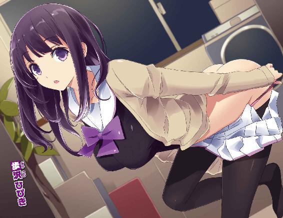
かませ系ヒロインルートの結末を俺は知らない２
恋愛フラグ10秒後
鏡遊

角川スニーカー文庫
本作品の全部または一部を無断で複製、転載、配信、送信したり、ホームページ上に転載することを禁止します。また、本作品の内容を無断で改変、改ざん等を行うことも禁止します。
本作品購入時にご承諾いただいた規約により、有償・無償にかかわらず本作品を第三者に譲渡することはできません。
本作品を示すサムネイルなどのイメージ画像は、再ダウンロード時に予告なく変更される場合があります。
本作品は縦書きでレイアウトされています。
また、ご覧になるリーディングシステムにより、表示の差が認められることがあります。
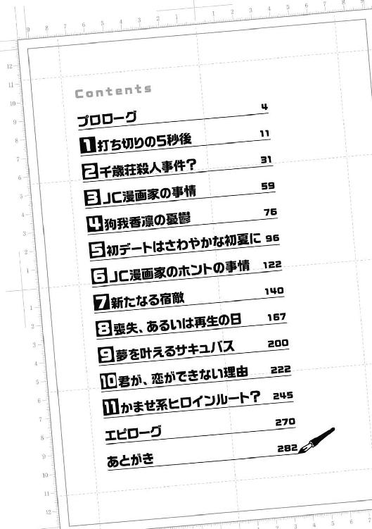
プロローグ
今年の夏は、少しだけ始まりが遅かった。
六月になっても一向に気温が上がらず、肌寒い日々が続いている。
俺が通う聖風館学院では衣替えの移行時期を過ぎても、まだ冬服の着用が認められるほどだった。
今、俺の前にいる女子生徒も、冬服姿だ。
上品な茶色のブレザーに、胸元には青いリボン。
膝上丈のスカートが、風にひらひらと揺れている。
肩のところで切り揃えた髪はまっすぐで美しい。
大きな瞳はうるうると潤んでいて、こちらを見つめてきている。
俺は、今まさに──彼女から告白されたところだった。
ただ一言、「好きです」と。
付き合ってくれとか、それ以上の要求はなかった。
あるいは緊張しすぎて言葉が出てこないのかもしれない。
俺もただ一言、「ありがとう」と答えただけだ。
それは、緊張しているからじゃないけど。
「えーと、藤宮さん？」
「............」
彼女が、黙って目をこちらに向けてきた。
藤宮あきは、というのが彼女の名前だ。
俺の同級生で、高校二年生の女の子。
彼女の友人経由で、この裏庭に呼び出されて、昼休みにこうして会っているというわけだ。
そうなんだけど──
「君の気持ちはとても嬉しいんだけど、一つだけ訊いていいかな？」
本当は、訊きたいことは一つじゃない。
藤宮さん、今年の春に告白してきたばかりなんだよな......。
自慢じゃないけど、俺は同じ人に告白されることは珍しくないとはいえ、かなり短めのインターバルだ。
そこは、それだけ俺への気持ちが抑えられなかったということにしてもいいけど......。
「こっちの子は──？」
俺は、藤宮さんの隣に立っている女の子に目を向ける。
ただ、ブレザーが紺色で、リボンではなくネクタイをつけている。
スカートはやや長めの、膝下丈。
要するに、うちの学校──聖風館学院の中等部の制服だ。
聖風館は幼稚舎から大学までのエスカレーター式で、ほぼ同区域内に固まっている。
特に中等部と高等部は敷地を接していて、校外に出ることなく行き来が可能だ。
放課後ともなると、中高合同で練習している部活などもあるため、俺が通う高等部の敷地内でも中等部の制服を見る機会は少なくない。
ただ、この場合──
「妹です」
藤宮さんは、端的に事実をおっしゃった。
その女子中学生は、髪を二つのおさげにしていて。
顔は、藤宮さんを少し幼くした感じ──というか、とてもよく似ている。
うん、本当に似てるから、そこは予想できてたんだけど......。
「ふゆか、と言います。この子も、御門君を──お慕いしているんです」
「............」
藤宮妹さんは少しためらいながら、こくんと頷いた。
「妹にも想いを告げさせてあげたかったんです」
「お、お姉様が......一緒に告白してあげるから勇気を出しなさいって......」
「........................」
どうしよう、この子たちが本気っぽいのがなんとも......。
「み、御門先輩......私もお姉様と同じくらい......先輩のこと、好きなんです！」
「わたしも妹に負けないくらい好きです、御門君！ やっぱりあきらめられなくて！」
「......あのさ」
言いたいことはよくわかったので、今度はこっちの言い分を聞いてもらおう。
「姉妹揃って告白とかおかしいでしょ！ 聞いたこともないよ、そんなの！」
「え......御門君......？」
「先輩、なにをおっしゃって......？」
いや、俺のほうがおかしいみたいなリアクション、やめてくれないかな。
良家の子弟揃いの聖風館学院、藤宮姉妹も間違いなくお嬢様だろう。
育ちがよすぎて、浮世離れしちゃってるのかなあ......。
「姉妹そろっての告白はびっくりしたけど......うん、二人の気持ちは嬉しいよ。でも、なんていうかさ......」
「えっ、あ、あの......」
「あ、本当に......なんですね......」
「うん......？」
なんだ、これまた二人そろってびっくりしたような顔してるぞ？
「わたしは、二度目なので大丈夫ですけど......妹には優しくしてあげてください......」
「い、いえ、覚悟はしてきましたから......お姉様と一緒で......」
「............」
そこでようやく、俺は異変に気づいた。
まただ、またやってしまってる！
俺は右手で藤宮（姉）の豊かなふくらみに触れ、左手で藤宮（妹）のスカートをめくりあげ、お尻をさわさわと撫で回している。
制服の上からでもとろけるように柔らかい胸と。
小ぶりでありながら、確かな弾力のあるお尻。
姉妹の身体を、同時にむさぼるようにして味わってしまっている。
「ふあっ......前より、強いです......そんなに、されたら......！」
「ああ、お姉様、私も、変になって......！」
「............！」
うおおおお、ヤバイとわかってるのに手を離せない！
二人の柔らかさが気持ちよすぎて、手が吸いついたようになってしまってる！
「くう......！ ごめん、本当にごめん！」
俺は全身に力を込め、上半身を大きく反らすようにして、二人の胸とお尻から手を離す。
そして。
「今日のことは忘れてくれると嬉しい！ ついでに俺のことも忘れて！」
勝手なことを言いつつ、俺は走り出す。
「ええっ！ またお逃げになるんですか！」
「お待ちになってください、御門先輩！」
「ごめん、待てない！」
俺は振り返りもせずに走って行く。
必死の思いで告白して、返事もないままに身体をまさぐられ、挙げ句の果てには逃げられる。
そりゃあ、驚きもするだろう。引き留めもするだろう。
でも、こっちにも事情ってものがある。
藤宮あきはさんは二度目の告白、しかも姉妹そろってとか、かなりクレイジーだ。
それに加えて、今日だけで告られるのは三度目！ 人数でいえば四人！
一日に四人もの女の子に告白されれば、逃げたくもなるというものだ。
走っていると、ポケットに入れていたスマホが振動した。
取り出して確認する気にはなれなかった。
こういうタイミングで届くメールやメッセージは、たいてい怖い内容だから。
あなたを殺して私も死ぬだの、想いが受け入れられないなら尼になるだの。
重い！ 真剣なのはわかるけど、重いんだよ......！
とにかく、逃げる。俺はいつだって逃げる！
逃げろ、逃げろ、逃げろ逃げろ逃げろ逃げろ逃げろ逃げろ──！
１ 打ち切りの５秒後
がらり、とドアを開けて室内に飛び込む。
同時に、素早く後ろ手で鍵をかけてから、床へと倒れ込んだ。
「はぁ......」
この部屋には最近になってカーペットが敷かれたので、入る前に上履きは脱いでいる。
以前は寝転ぶと制服が汚れてしまったけど、今はためらいなく横になれる。
しかし、参ったな......。
藤宮あきはさんが意外に運動神経いいのは身をもって知ってたけど、妹のほうはそれ以上だった......。
忍者か！ ってくらい、どこに逃げても追ってくるんだもんなあ。
今時の中学生は早熟だというけど、運動能力も高校生に負けてないのかな。
「......あんたも、毎度毎度飽きないわね」
「俺は飽きてるんだけど、女の子たちがなかなか俺に飽きてくれないんだよな......」
顔を上げずに、俺は突然の声に応えた。
「あんたって、刺されそうな台詞を言わせたら右に出る者はいないわね」
「それほどでも......」
俺は身体を起こし、床に座り込む。
すぐそばにある椅子に、さっきの声の主が座っている。
明るい色の髪をポニーテールにした、活発そうな女の子。
制服のブレザーの前を開け、ブラウスのボタンを二つ外し、ずいぶんと着崩している。
豊かにふくらんだ胸の谷間が、異様なほど色っぽい。
腰は細くくびれ、組んだ脚はすらりと長い。
狗我香凛──この聖風館学院の二年生で、今年十七歳になる。
俺と彼女がいるこの部室──〝情報処理部〟の部長であり。
俺にとっては、幼なじみであり親戚でもある女の子だ。
「そろそろ、ここに逃げ込んでることもバレるんじゃない？」
「そうなっても、他に避難できるところはないしなあ」
俺は、ぽりぽりと頰をかく。
ここは校舎の二階、東階段を上がってすぐのところにある一室。
広さは十二畳ほど、壁際に机が四つ並び、反対側の壁際にはスチール棚がある。
四つの机の上にはそれぞれモニターが置かれ、下にはタワー型のＰＣが置かれている。
そのうちの一つが稼働中で、小さくファンの音が聞こえてくる。
「バレたら、どこに逃げればいいんだろ？」
「......逃げ回らなくていいように状況を改善しなさい」
「それができれば、何年も何年も逃げ回ってない！」
「いばるな！ いったい、いつまで告られ続けるつもりなのよ！」
びしり、と香凛は俺を指差してくる。
まあ、毎日毎日告白されて、逃げ回る日々は控えめに言っても不毛だ。
俺も大変だし、そもそも告ってくる女の子たちに申し訳ない。
今のところ、俺は誰かの告白に応えるつもりはないから。
「はぁ......本当、なんとかしなさいよ、駿介」
本気で呆れられてしまい、ちょっとへこむ。
俺──御門駿介は、聖風館学院高等部の二年生。
珍しいことに、中学時代に留年しているため、今年十八歳。
成績は普通、運動神経も人並み。
割となんでもそつなくこなせるけど、平均以上にはなかなかなれない。
顔も普通、これといって人に自慢できる特技もない。
要するに、ダブってることを除けば、どこにでもいるような高校生なんだけど──
特別なところがあるとしたら──実家が千年続く名家ということか。
御門家は、それほどの長きにわたって血統を維持してきている。
もっとも、昔は尊い家柄だったらしいが、今はさほどの権力も財力も持っていない。
多少、上流階級で顔は利くけど、資産なんかはせいぜい中の上。
俺も、家がお金持ちだという実感を持ったことはほとんどない。
ただ、この二十一世紀にも家柄や血筋というものは、一部で尊重されるらしい。
良家の子弟が多いこの聖風館学院では、俺も〝サラブレッド〟なんて陰で呼ばれているそうだ。
血筋以外いいところなし、ってイヤミなのかもしれないけど。
「うーん、駿介がモテるのって、やっぱりオーラのせいよね？」
「香凛の説が正しいならな」
まさかの姉妹そろっての告白を見てのとおり──
はっきり言って、俺はモテる。
モテすぎて日常生活に支障が出ていると言っても過言じゃない。
こんなことを公言したら刺されてしまいそうだけど、事実なんだからしょうがない。
この可愛い幼なじみが言うには、俺には〝高貴なオーラ〟が漂っているとか。
千年培われてきた名家の血筋の結晶、らしい。
正直、胡散臭い説だけど、今のところ否定する根拠もない。
少なくとも、俺が学校の大半の女子生徒に告白され、しかも二度目三度目の告白すら珍しくないという異常な状況に置かれているのは事実だ。
いやあ、事実って残酷だなあ......。
「あたし、ふと思ったんだけど」
「ん？」
「あたしの説がビンゴなら、要するに血っていうか、駿介のＤＮＡに問題があるわけよね」
「問題って言うなよ......まあ、説が正しいならそうなるかな」
まだ、オーラ説を全面的に信じたわけじゃないけど。
「だったら、遺伝子の組み換えとかできないのかしら。ｉＰＳ細胞的なものとかで」
「その場合、今の俺はどうなるんだ!?」
恐ろしいことを考えるな、この幼なじみ。
あと、たぶんｉＰＳ細胞ってそこまで万能じゃない。
「そっか。まあ、あの可愛い藤宮シスターズから逃げるようなら、まだモテるのをいいことに女漁りとかしそうにないわね」
「待て、なんで告ってきたのが藤宮姉妹だって知ってるんだ？」
「え？ 最近は、ラインで情報が出回ってるから、駿介が誰に告られたかリアルタイムでわかるわよ」
「プライバシーもなにもあったもんじゃないな！」
俺への告白が連絡網より気軽に知れ渡ってるって、どうなんだ！
いや、俺はともかく、相手の女の子に失礼だろ......。
「みんな、駿介が告られるのに慣れすぎてるのよ。初等部の頃からずっとだし。ほら、この子なんか『今日の放課後、いつものケーキ屋寄ってく？ あ、御門君に藤宮姉妹が告ってるらしいよ』って、書いてるわ」
「世間話すぎる......」
適当についでで書きやがって......。
「でも、藤宮さんって妹さんも可愛いのよね？」
「あー、まあ......可愛かったかな」
ちょっと幼さはあったけど、あの子に告白されて心がグラつかない男はまずいない。
運動神経も抜群だし、アウトドアとかのデートが楽しめそうだ。
「中等部の子からの告白も珍しくないけど、お姉さんと一緒っていうのはなかなかいい性格してるわよね。可愛い顔して、たいしたもんだわ。チェックしとこ」
「チェ、チェックしてどうするんだ......？」
「バカね、そんなこと言ったら犯罪予告になるでしょ」
「本当になにをするんだ!?」
「だって、あたしだって駿介が好きだもの！ 慣れたっていっても、告白してきた女の子を放っておくわけにはいかないわ！」
「おまえも大胆な告白だな！」
そう、この香凛も──他の女の子たちと同じように俺に好意を持ってる、らしい。
それどころか、俺に告白した回数なら間違いなく香凛がぶっちぎり。
ここ最近は、特にいろいろあったなあ......。
謎の怪しい黒髪ロングとか、かませ犬とか......。
「ちなみに」
「わっ」
香凛が、ぐっと身を乗り出して俺の目を覗き込んでくる。
「今日は......藤宮さんたちにどんな粗相をしたの？」
「そ、粗相なんて......」
「怒らないから言ってみなさい。きっちりと細かく、根掘り葉掘り。ほら、ほら」
「............」
明らかにフリだけど、言うまで引き下がらないだろうなあ。
「あー、まあ......藤宮さんの胸をまた揉ませてもらって、あとは......妹さんのスカートをめくってお尻をもぞもぞと......」
「そこまで赤裸々に説明しろなんて言ってないわ！」
「思った以上に理不尽に怒られた！」
根掘り葉掘り説明しろって言っておいて！
「ふ、藤宮さんはまだしも、中学生の妹さんのお尻を......あんた、いつの間にロリコンまで患ったの!?」
「ロリコンを病気みたいに！ いや、俺はロリコンじゃないし！」
告白してきた相手に見境なくセクハラする──俺にはそんなクセがあるだけだ。
これも香凛の説によると、無意識に身体の相性を確かめてるとか。まあ......最低だな。
「信じられないわ......あたしと......あ、あんなことしておいて......」
「............っ！」
一瞬、息が止まりそうになった。
あっさりと、あのことを口に出すなあ。
香凛の顔は、耳まで真っ赤に染まっている。
あいつも恥ずかしいんだろうなあ......。
香凛には何度告白されても、関係が近すぎるからか、一切手出しせずにきたけど......。
つい先日、一線を越えそうになるところまでいってしまった。
はっきり言うと、ベッド・インして、誰にもやったことのない、セクハラなんて言葉じゃごまかせないところまで踏み込んじゃったんだよな......。
ここ数日、さすがの香凛も話題に出さなかったのに......。
「よし、あの日の続きをやりましょう」
「いきなり飛躍したな！」
「なによ、文句でもあるの？」
香凛は、ぷちんとブラウスのボタンをさらに一つ外す。
白い胸元と、水色のブラジャーがほとんど見えてしまっている。
こ、これは......服装が派手な割に下着は可愛いのつけてるんだよなあ......。
「いいでしょ、どうせあと一歩のところまでやったんだから。もう一歩踏み込むのも同じようなもんでしょ？ 大丈夫、痛くしないわ」
「女の子が言うことか!?」
「もうすぐ女にしてもらうわ」
「あの、香凛さん......もう少し言葉に慎みを持っていただけると......」
思わず敬語にもなるってものだ。
「今さら、なにを遠慮しろって言うのよ。あたし、もしなんでも願いが叶うなら〝御門駿介の童貞〟を要求するわ」
「よりによってそれか！」
世の中にはいくらでも貴重なものがあるっていうのに。
「あー......駿介の童貞ほしい......」
「しみじみ言うな！」
あと、いつものことだけど童貞童貞言わないでほしい。
そろそろ、捨ててないとおかしい年齢になってるんだから。
「ちぇ、勢いでなだれ込んでもらおうと思ったのに......あんたの理性はなにでできてるのよ？」
「おまえの理性ももう少し頑丈にしてくれ！」
忘れてるのかもしれないけど、ここは部室なんだし。
しかし......香凛があっさりとあの日のことを蒸し返してくるとは。
もちろん、俺もなかったことにする気はないけど、あの日のフォローは考えたほうがいいのかもな......。
「世の中にはできることと、できないことがあるのよ」
香凛はぶーたれながら、ボタンを留め直す。
とりあえず、貞操の危機は去ったらしい。
「ツッコミすぎて疲れた......水もらうぞ」
部室の隅に置かれている小型冷蔵庫からミネラルウォーターのペットボトルを取り出す。
過酷なランニングで疲れた俺の水分補給のために、水が常備されてる。
いつか、こんなものが必要なくなるといいなあ......望み薄だけど。
水を一本飲み干すと、ようやく人心地ついた。
「これから暑くなるから、水のストックを増やしたほうがいいかしら。夏になると、浮かれて告る人も増えるしね」
香凛は、にやにやと笑ってる。
まあ、俺が告白にＯＫしないのはわかってるから、楽しむことにしたのかな......。
「俺の告白の話はもういいだろ。それより香凛、仕事は？」
「......ふっ」
香凛は、今度は乾いた笑みを浮かべて、窓の外を見た。
なんてあからさまな現実逃避......。
香凛が向かっている机の上には、液晶タブレットが置かれている。
モニター上で直接ペンを動かし、絵を描くためのマシンだ。
香凛が使っているのは24インチと巨大で、お値段は二十万以上する。
おいそれと手を出せるシロモノじゃないけど──香凛は、プロの漫画家だ。
仕事道具である以上、ケチらずにこういう高級品を買うのが正解だろう。
「はー......実は、まだ１ページも描けてないわ......」
「みたいだな」
液晶タブレットには漫画作成用のソフトが立ち上がってるけど、キャンバスは真っ白だ。
ちなみに、今は漫画を描くための高性能なソフトがあり、漫画のコマ割りや台詞を決める〝ネーム〟から下書き、ペン入れ、仕上げまですべてをＰＣ上で行える。
香凛はすべての作業をＰＣで行う、〝フルデジタル派〟だ。
最近は、紙とペンで描く〝アナログ派〟の漫画家は減ってきていて、香凛のようなタイプが増えつつあるそうだ。
デジタル作画は先行投資がけっこうな額になるし、慣れるまでが大変だ。
でも、修正が容易だったり、豊富な作画用素材が使えたりと、メリットも大きい。
「手こずってるんだな。大丈夫なのか？」
「きっと、１ページ目が描ければあとはスルスルと最後まで描けるのよ。だから、今日明日には終わるわ」
「希望的観測だなあ」
追い詰められた作家って、こういう状態になりがちですね。
デジタルだろうとアナログだろうと、どんな画期的な作画ツールが現れようと──
アイデアは作家の頭からひねり出すしかない。
漫画の神様の時代から、本質はなにも変わらないんだよな。
「でもまあ、連載が終わったばかりだもんな。そう簡単に次のアイデアなんて出ないか」
「いいえ、出すのよ！ 無理矢理にでも！」
香凛が、バンと液晶タブレットの画面を叩く。
おいおい、だからそれ二十万以上するんだって！
「のんびり構えてられるような大御所じゃないんだから！ 急がないと急がないと急がないと急がないと......！」
「............」
香凛は、『月刊少年オーディン』という少年漫画雑誌で連載を経験している。
それが、つい先日すったもんだの末に打ち切り終了をくらうハメになった。
かなり納得できない、唐突な打ち切りだったけど、もう終わってしまったものはどうにもならない。
その最終回の原稿を描き上げたのが、つい昨日のことだ。
担当からは、次回作の構想を始めるように言われているらしいが......。
「なんとしても、この夏の間に──いえ、夏休みに入る前に新連載を立ち上げるわ！」
「そ、それは無茶だろ？」
今は六月、やっと夏が始まったってところ。
夏休みなんて、あと一ヶ月もないくらいだ。
「別に期限が区切られてるわけじゃないだろ？ そこまで焦らなくても」
「女子高生漫画家って肩書きを利用できるのは、あと一年半しかないのよ？」
「そんな理由か！」
確かに、女子高生漫画家──それも少年漫画に連載中っていうのはインパクトあるけどさ。
なりふりかまわなくなってきたな、香凛ちゃん。
「あ、そういや、細かい話はまだ聞いてなかったな」
昨日まで前作の最終回やってたし、余計なことを言わないようにしてたんだけど。
「具体的に次回作って、どんなのやるんだ？ 猫村さんはなんて言ってる？」
猫村、というのは香凛の担当編集者だ。
香凛の前作は打ち切られたけど、引き続きあの人が担当につくらしい。
「猫村さんは......『面白い作品ならなんでもいいですよ！』って言ってたわ」
「............」
担当は猫村ネネというふざけた名前だけど、本人の性格はもっとふざけている。
無能ではないんだが、漫画家を煙に巻くような、つかみ所のない性格だ。
仕事の指定もナメてるというか......。
「ところで、猫村さんは作家にプレッシャーをかけるのが趣味なのかしら？」
「......否定はできないなあ」
ただでさえ、『なんでもいい』は困るのに『面白ければいい』なんて付け加えられたらな。
打ち切りの後で、次は絶対にコケられないっていうのに指定がアバウトすぎる......。
「うーん、どんなラブコメを描けば、猫村さんを納得させられるのかしら......」
「って、ラブコメは確定なのか？」
「は？ ラブコメ以外を描いて、なにが楽しいの？」
「............」
香凛ちゃん、真顔でそんなこと訊きますか？
他にも漫画のジャンルはなんぼでもあります。
バトルも日常もギャグもミステリーもホラーも、真面目な恋愛ものも。
香凛は、描くのも読むのもラブコメ至上主義だからなー。
担当もたいがいだけど、香凛もなかなかクセのある漫画家だ。
「あー、もうどうすればいいのよ！ 新作のアイデアは浮かばないし、駿介は中学生にデレデレしてるし、駿介は未だにあたしを好きになる気配もないし、駿介は今日も逃げ回ってるし、駿介は──」
「俺のこと多すぎないか!?」
「駿介は、そこの奴をとりあえず追い出しといて！」
「ふふふ、どこの奴のことでしょうね」
「............」
「............」
俺と香凛は、二人そろって黙り込んでしまう。
そう、さっきからこの部室には第三の人物がいた。
窓際にパイプ椅子を置いて、文庫本のページをめくっている。
あの表紙は、とある独裁者の著作、『わが闘争』じゃないだろうか。
なんでそんなもん読んでるんだ......。
「だいたい、ひびきは部員でもないくせにどうして部室にいるのよ！」
「香凛ちゃんもご存じでしょう。わたしは、御門君のおはようからおやすみまでを見つめる管理人ですから」
「あたしは駿介とゆりかごから墓場まで一緒よ！」
「なにを張り合ってるんだ......」
また、いつもの低レベルな論争が始まったよ。
もっとも、ヒートアップしてるのは香凛だけで、相手のほうは落ち着いたもんだ。
椅子に座って、優雅に文庫本を読んでいる女の子は、歩沢ひびき──
長い黒髪に、やや大人びた、整った顔立ち。
聖風館のブレザータイプの制服ではなく、セーラー服姿。
その胸元は大きく盛り上がり、ほっそりとした脚には黒いストッキングをはいている。
経済的事情により、別の制服を着てるけど、れっきとした聖風館学院高等部の二年生だ。
俺が住む〝千歳荘〟というアパートの管理人であり。
そして、御門駿介の管理人でもあるらしい。
未だになにを管理されてるのか、そもそもなんで管理されちゃってるのか、よくわからない。
「どうでもいいですが、わたしが見てるのに御門君に迫るとか、香凛ちゃんの特殊性癖にも困ったものですね。見られたほうが燃えるんですか？」
「あたしをナメてるの？ 何年片思いしてると思ってるのよ。いくところまでいけるなら、他人の目なんて気にしないわ！」
「俺は気にするんですけど......」
人に見られながらエロいことなんてできないって。
いや、香凛ともう一度ああいうことをする覚悟はできてないけど。
「でも、ひびきの場合、見るだけじゃ済まなそうよね」
「わたしも、まだ乙女ですよ？ まさかお二人のまぐわいに乱入して初体験を複数プレイで済ませるほど浮世離れしてません」
「あのな、歩沢も言葉を慎んでくれないかな」
まぐわうだの複数プレイだの......。
ここは、学校の部室なんだぞ？
「あー、部長の権限を利用してひびきを追い出したい......！」
「できてもやらないのが、香凛ちゃんのチョロ──いいところですよね」
「チョロイって言いかけたわね!?」
「でも最近は、ツンデレとチョロイのはセットなんでしょう？」
「あんた、ネットでいらん知識を溜め込みすぎよ！」
まったくだなあ......。
春に歩沢と初めて会ったときは、オタク方面の知識なんてゼロだったのに。
歩沢はスマホの検索を駆使し、さらに千歳荘に豊富に積み上げられた俺の漫画やアニメの円盤などで、着々と偏った知識を身につけている。
それはそれで、歩沢の人生を歪めてしまっているような。
おや、もしかして俺のせいか？
「ところで、御門君のすべてを知り尽くした管理人として言わせてもらいますけど」
「そんな前置きいらないわ。なによ？」
「香凛ちゃんのことをあーだこーだと言ってますけど......御門君も、まだ描いてないですよね？」
「............じゃ、俺は帰ろうかな」
「待ちなさい！ そうだ、すっかり忘れてたわ！ あんただって、今月中に描かなきゃいけないんでしょ！」
「ははは......」
いやあ、乾いた笑いしか出ないな。
香凛が自分の作業に追われてて、いい感じに俺の漫画のことは忘れていてくれたのに。
そうだよな、俺も描かなきゃいけないんだ。
御門駿介、またの名を〝寿賀右輔〟。
かつて、三大少年誌の一つ『週刊少年ビート』で『ルート』というラブコメ漫画を連載した漫画家のペンネームだ。
先日、俺にとっての『ビート』時代の担当でもある猫村とある取引をして、こちらは読み切りを描くことになった。
そろそろ原稿を上げなくちゃいけないんだけど、実は筆の進みはあまりよろしくない。
既にネームは描き上がっている。
というより、俺に描けそうな漫画は一本しか思いつかなかった。
かませ犬を自称する幼なじみと、管理人を名乗った策士。
二人の女の子を描いたラブコメだ。
俺も香凛のことは言えない。
結局、『ルート』に続いてまたラブコメを描こうとしてる。
他に描けるものがないから、仕方ないんだけど......。
正直、読み切りなんて──漫画なんて、まったく描きたくないんだよな。
２ 千歳荘殺人事件？
千歳荘──
俺の実家、御門家が所有する賃貸アパートだ。
聖風館学院からバスで十五分ほど。
バス停で降り、山道を少し登ったところに建っている。
周りに建物は皆無、夜にはあたりは真っ暗になってしまう、陸の孤島みたいなところだ。
築百年という無駄に長い歴史を誇り、二階建てで外観は洋館っぽい。
元々は個人の住宅で、一時は旅館として使われていたこともあるらしい。
長いこと放ったらかしにされていたけど、俺が家を出て一人暮らしをするにあたり、祖父さんからこのアパートに住むように命令された。
一階に五部屋、二階に六部屋。
玄関の横を入ったところに、小さな応接室。
他に、一階に共用の台所、風呂とトイレ、あとは庭がある。
建物は古いけど、敷地はかなり広い。
ただし、この広い千歳荘に住んでいるのはたった二人だけだ。
まあ、春と比べれば人数は倍になっているとも言える。
「ただいまー」
「ただいま帰りました」
誰もいないのはわかっているけど、俺と歩沢は一応挨拶をする。
歩沢は、俺の管理人であり千歳荘の管理人でもある。
そもそも、この歩沢ひびきという女の子は、天涯孤独の身で──
養護施設で育ってきたが、つい先日、その施設が閉鎖されることになったらしい。
どこにも行く当てのなかった歩沢は、施設の先生の紹介で俺の祖父に引き合わされて。
祖父さんはなにを考えていたのか、俺の管理──監視じゃないのかと疑ってるけど──のためにこの黒髪ロングの美少女さんを送り込んできた。
まあ、歩沢としては住むところができて、俺と千歳荘を管理すれば給料も出る。
おかしな仕事ではあるが、特に文句はなかったようだ。
そして、自由な一人暮らしを奪われた俺の文句は封殺された。
とにかく、歩沢は──いろいろな思惑があるようだが、千歳荘に腰を落ち着けている。
ちなみに、若い男女が一つ屋根の下だけど、そういう関係ではございません。
「それじゃ、わたしはこれ片付けてきますね」
歩沢は大きな買い物袋を軽々と持って、台所へ向かう。
彼女は、俺の分も含めて家事の一切を請け負ってくれている。
以前、俺が一人で住んでいた頃はろくに家事なんてしてなかった。
結局、俺も雑で適当な男子高校生ですので。
今は歩沢が掃除と洗濯、食事の世話までしてくれるのでとても助かってる。
さすがに同級生の歩沢に家事を全部やってもらってるのは、気が引けるけど、彼女は「これがお仕事ですから」と気にした風もない。
もっとも、歩沢のもう一つの仕事、〝俺の管理〟の具体的内容がとても気になる。
監視カメラとか盗聴器とか、どっかにあるんじゃないだろうか。
香凛と二人で過ごしていた放課後の時間にまで見張りにつかれてるし......。
「っと、そうだ。あれが置きっぱなしだったっけ」
自室のドアを開けて、ふと思い出した。
机の上に、昨日読み終えた漫画が三冊積んである。
これを本棚に収めておかないと。
千歳荘には、俺が勝手に使っている部屋が一階に三つある。
まずは、少年漫画と青年漫画を収めている部屋。八畳ほどの広さに本棚がずらりと並んでいる。
少女漫画もあるけど、数は少なめ。
ジャンル的には割と雑食、ラブコメが比較的多いかも。
香凛ほど極端じゃないけど、なんだかんだでラブコメが一番ハマるんだよなー。
出版社別にまとめている棚に、二冊を収める。
それから──
漫画の隣の部屋は、アニメのＤＶＤやＢＤ、ゲームソフトの置き場。
さらにその隣が、再び漫画の部屋になっている。
ここはまあ、ちょっとばかり特殊な漫画とそれに類するグッズとかのお部屋。
ぶっちゃけると、エロめの漫画なんかを収めてる。
でも十八禁じゃないから！ そこはまだ踏みとどまってるから！
残りの一冊は、内容から考えてこの部屋に収めるべきだろう。
なんとなく、台所にいる歩沢の気配をうかがってから、ゆっくりドアを開ける。
「ふう......」
一人暮らしのときは、ここにも普通に入れてたのに。
歩沢が来てからは、すっかりビクビクするようになっちゃったよ......。
といっても、歩沢もこの部屋の漫画のことは知ってるし、コソコソしても意味は──
「............？」
なんだろう、見間違いかな？
漫画のように、思わずごしごしと目をこすってしまう。
えーと......。
女の子が血を流して倒れていた。
「........................」
うん、千歳荘は陸の孤島だし、古い建物だし、そういう事件が起きてもおかしくない雰囲気だよ。
でも、でもさ、そういうのはフィクションの中の話じゃないか？
実際に殺人事件が起きても、真実はいつも一つだったり、じっちゃんの名にかけたりとか、しないんだから。
こういうことが起きても、なんというか......困る！
倒れている女の子は、長く伸ばした銀髪をツインテールにしている。
顔はよく見えないけど、その周りに血だまりができてて......あれ？
「聖風館の中等部の制服、だよな......」
今日、告ってきた藤宮妹と同じ服装だ。
ちょっと長めのスカートがめくれて、真っ白な太ももが見えている。
「............っ！」
どくん、と心臓が跳ねた。
吸い込まれるように、その白い脚に見入ってしまう。
なんだ、なにを考えてるんだ、俺は......？
確かにちょっとエロい光景だけど、女の子が血を流して倒れてるんだぞ？
さかってる場合じゃないだろう......よし、落ち着け。
まず、この子をなんとかしないと。
そう、なんとか......。
「これは......管理人の出番だな！」
性格はともかく、頼れる優等生に任せるとしようか。
「なにを全力で人任せにしようとしてるんです、男の子」
「うおっ！」
いつの間にか、呆れ顔の歩沢が俺の背後に立っていた。
流血を見るより、歩沢の顔を間近で見るほうがびっくりするな。
常軌を逸してるレベルで綺麗すぎるだけに、見慣れるってことがまったくない。
「というか、御門君。遂にここまで来ましたか」
「......ここまで？」
「１分の１サイズ、等身大美少女フィギュア。柔らかい素材。流血も可能とか、だいぶマニアックな注文ですね」
「オーダーメイドじゃないっ！」
この部屋には、確かに美少女フィギュアも並んでるけど！
「そうですよね、等身大で、自律稼働して、いつでも好き放題できるボディが、御門君の周りにはいくらでもありますもんね」
「人聞きの悪いことを！」
「しみじみ思ってたんですよ。香凛ちゃんとのエッチを途中でやめておいて、よく今までと変わらずに話せるなって。原因がどうあれ、男の子が責任を持つべきですよ？」
「ここでそんなことを突っ込まれても！」
確かに、香凛がガチで誘ってきて、中途半端なところで終わりになっちゃったよ！
でも、だからって、態度を変えたら香凛も困るだろうし！
一番の問題は、香凛との秘め事を歩沢にもガッツリ知られてることだよな！
「そ、それより、その子のことだろ！ えーと......どうすりゃいい？」
「御門君、割と普通にわたしを頼ってきますよね」
「俺ができもしないことを無理に頑張ったら、かえって事態を悪化させるだろ」
「......まあ、自分の限界を知ってるのは悪いことではないですね」
マイペースな歩沢も、だいぶ呆れてらっしゃる。
自分が無能とは思わないけど、しょせんは坊ちゃん育ち。
突発的なトラブルに上手く対処できるような能力があれば、こうも毎日、受け入れもできない告白をされてない。
「しょうがないですね。さて......」
歩沢は、倒れている女の子のそばに屈み込み──
「あら、可愛いパンツ」
いきなり女の子のスカートをめくり、白いパンツをあらわにする。
「............っ!?」
と思ったら、その女の子がいきなり身体を起こした。
「なっ、なぜスカートめくり上げて下着を男の人に見せつけているんですか！」
「やっぱり起きてるんじゃないですか。呼吸音でだいたいわかりますよ」
「............っ！」
女の子は、大きく目を見開いて後ずさる。
幼くも、びっくりするくらい綺麗な顔をしているが──鼻から血がたらりと流れている。
狸寝入りだったことより、呼吸音で見抜いた歩沢が怖い。
「えー、それで......君はなんだ？ 見てのとおり、俺も聖風館だ。そっちの怖そうな奴も制服違うけど、同じ学校だよ」
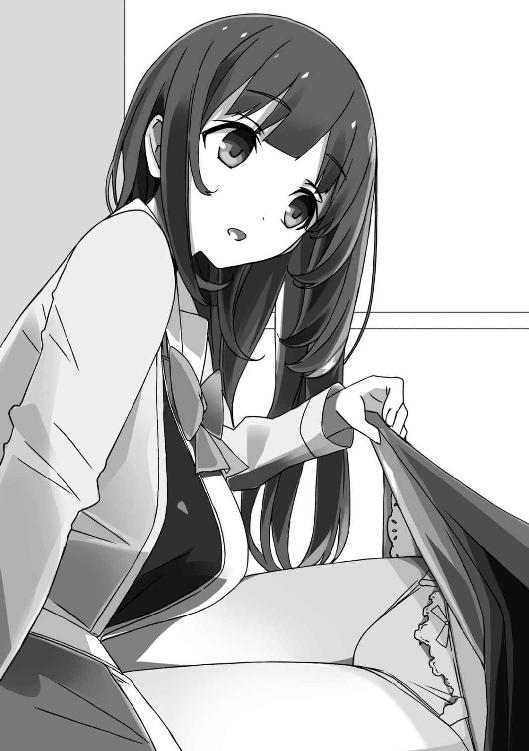
この銀髪の子、完全に不法侵入だけど、相手は中学生だしなあ。
とりあえず、同じ学校の先輩だとわかれば少しは安心するだろう。
「さ、さっき復活したですけど、起き上がるタイミング、わからなかっただけです。なんだかボケとツッコミが飛び交っててとても楽しそうでしたので......」
「あら、それは失礼」
歩沢が、にっこりと胡散臭い微笑みを浮かべる。
「し、知ってます......そっちの人、御門駿介先輩。怖そうな人、歩沢ひびき先輩」
「ん......？」
そういや、スカートめくられたときの反応が妙に説明調だったけど......。
この子の言葉は、ちょっとアクセントがおかしい。
銀色の髪に、紫がかった目──見た目どおり、外国人なのかな？
「確かに御門だけど、会ったことは......ないよな？」
「ないで......す......」
「............？」
俺の質問に答えかけて、銀髪の子の声が唐突に弱々しくなってしまう。
それに、真っ白な肌がこれでもかというくらい赤く染まってる。
「......なるほど、これが香凛ちゃんの言うところの〝高貴なオーラ〟の効果ですか」
「............」
歩沢が一人で納得して、うんうんと頷いてる。
まあ......俺には、見慣れた表情なんだけどさ。
そう、これが......高貴なオーラとやらにやられてしまった女の子の反応だ。
それこそ、数え切れないほどこの反応を見てきた......。
「......あっ、いえ！ そうです！ 初対面です！」
銀髪の子は、意外と早く我に返って叫んだ。
「ワタシ、夢野アンジュです！ 今日からこの千歳荘でお世話になることが決まりました！」
「は............!?」
流血して倒れていたと思ったら、いきなりなにを言い出してるんだ？
なんだろう、この悪い予感しかしないイベントは......。
俺や歩沢の部屋では、夢野アンジュという中学生が緊張するだろうということで。
とりあえず、彼女を応接室へと通した。
ソファに座ってもらい、俺と歩沢はその正面の床に椅子を置いて座った。
歩沢がお茶を出し、お茶請けはドーナツだ。
帰りに間食を買う習慣がある歩沢が提供したものだ。
「血が足りなかったのでカロリーありがたいです。五臓六腑に染み渡ります。血肉になっていきます」
夢野アンジュは、やっぱり言葉遣いが女子中学生らしくない。
日本語が硬いというか、余計な言葉がいくつも入ってきている。
それにしても......。
この子、ちょっとありえないレベルの可愛さだ。
聖風館学院の女子生徒は美人ぞろいと言われてるけど、その中でもずば抜けてるんじゃないだろうか。
ややクセのある銀色の長い髪に、神秘的な紫がかった目。
幼さを強調するような、ツインテールの髪型。
すっきりとした整った顔つき。
小柄で、信じられないほどスレンダーな身体。
胸はほとんどないし、スカートも長いので太ももはあまりよく見えない。
どことなく妖精のようにも見える、非現実的なほどの美少女だ。
ただ、可愛いだけじゃなくて、なんというか......。
「はいはい、それ以上見てると視線だけで妊娠させちゃいますよ？」
「なっ......！」
歩沢が、にやにやと笑ってる。
「視線だけで？ 日本人は、そんなことができるのですか？ ニンジュツ？」
「い、いや、違う。じろじろ見て悪かった」
純情そうなのに、妊娠とか言われても動じてないな。
自国の言葉じゃないと、あまりピンと来ないのかも？
「えーと」
俺は咳払いして、気を取り直す。
「夢野さん、だったよね」
「アンジュ、でけっこうです。学校でもそう呼ばれてますので」
「そうか、アンジュ。正直、訊きたいことがありすぎるんだけど......歩沢、なにから訊けばいいと思う？」
「あまりわたしに頼ってると、わたし無しでは生きられない身体になりますよ」
「............」
それは、なかなかの地獄だなあ。
ただでさえ、なりゆきで漫画家に復帰するハメになって、今後の人生に暗雲が立ちこめているというのに。
「御門先輩は歩沢先輩に肉体のすべてを管理されているご関係だと聞いていますけど、交際をされているということなんですか？」
「こ、交際......？ 俺と歩沢が？」
「肉体の管理とはエッチな言い回しですね。まあ、間違いではないですけど」
「間違いだ！」
すまし顔でなにを認めてるんだ。
「あ、エッチで思い出しました。アンジュちゃん、あのお部屋で倒れてたのは......？」
「ああっ、ごめんなさい！」
アンジュがもの凄い勢いで頭を下げる。
「見たことのない漫画がたくさんあったので、つい読んでしまって......勝手にごめんなさい！」
「ああ、それはいいんだけど......」
歩沢に続いて、下級生にまであのシークレット・コレクションを見られてしまうとは。
「ふふ、年齢制限のない作品ばかりですけど、中学生には刺激が強かったですよね」
「ううう......」
歩沢の言葉に、アンジュが頭を下げたまま真っ赤になる。
倒れてたのは少し大げさだけど、鼻血くらい流しても不思議はない。
今後は、ちゃんと鍵をかけるようにしたほうがよさそうだ......。
「えっと、御門先輩と歩沢先輩はああいう漫画に描かれているようなことを......？」
「だから違うって！」
この妖精さん、なかなか思い込みが激しそうだ。
「いいから顔を上げてくれ。ていうか君、中途半端に俺たちのことを聞きかじってるみたいだけど、誰から聞いたんだ？」
「御門先輩の祖父殿と、猫村ネネさんです」
「よりによって、その二人かーっ！」
歩沢が現れるまでは、俺の人生にたちはだかる二大宿敵だった二人だ。
祖父は、この黒髪ロングの管理人を送り込んできた張本人だし。
猫村には恩もあるけど、再び漫画家という死地へ引きずり込もうとしている悪魔でもある。
「ていうか、その二人のどこに接点が？ 君との接点もわけわからないぞ！」
「猫村さんはワタシの恩人です。猫村さんのためなら腹かっさばいて果てられます」
「若くして思い詰めてますね......」
ああ、歩沢が今まで見たことがないほど呆れた顔をしている。
人を呆れさせる手管には俺も自信があるけど、この女子中学生には勝てないかも。
ちなみに、歩沢も猫村とは面識がある。
人を煙に巻くタイプ同士、惹かれ合うものもあるようだ。
今のところ、たいした接点はないようだけど、もし歩沢と猫村が手を組んだら、俺の胃に穴が空く程度で済めば御の字だろう。
「あと、猫村さんは〝日本人は生真面目〟というイメージを一撃で粉砕してくれました」
「......うん、それはもう粉々にしただろうな......」
俺も連載していた中学時代、社会人はみんな真面目に仕事しているという素朴な思い込みを砕かれてる。
「ところで、どこから話を聞くかですけど、込み入ってるようですし、最初から説明してもらったほうがいいのでは？」
歩沢が、話を元に戻してくれる。
「ああ、そうでした。最初からですか......うちの父と母のなれそめからでいいですか？」
「さかのぼりすぎだ！」
わざと俺をからかって遊んでるんじゃないだろうな？
「あ、思い出しました。猫村さんがこれを御門先輩に見せろって......」
「猫村さんが？」
戸惑う俺の前で、アンジュはカバンの中からタブレット端末を取り出した。
８インチサイズで、よく見かけるタイプのものだ。
アンジュは、端末をぽちぽち押して操作すると──
「こ、これです......」
なぜか、また顔を真っ赤にして、恥ずかしそうに俺に差し出してくる。
まさか、女子中学生のヤバイ写真とかじゃないだろうな......。
「ん？ 漫画か」
恐る恐る確認した画面には、漫画が表示されていた。
最近は電子書籍もかなり浸透してきて、タブレットやスマホで読んでいる人も多いそうだ。
縦画面だと見開きが表示できなくて、横画面だと見られるけど表示が小さくなって迫力に欠けるっていうのが弱点なんだよなー。
ただし、そこさえ目をつぶれば持ち歩きが楽、防水タブレットなら風呂でも読めるし、本棚も必要ないし、メリットも大きい。
「あれ？ 俺、この漫画読んだことあるぞ？」
確か、香凛が連載してた『少年オーディン』で何ヶ月か前に載った読み切りだ。
タイトルは、『シルバーグラス』。
「へえ、どんな漫画なんですか？」
「あー、今時は少女漫画でもないだろうっていうくらい、ピュアなラブコメだったな。少年誌向けの軽いエロなんて微塵もなくて、ひたすらにピュア＆ピュアって感じ」
「あら、またラブコメですか」
歩沢は、興味深そうにタブレットを覗き込んでくる。
諸事情あって、歩沢は最近ラブコメというジャンルに興味を持っているそうだ。
「なかなか面白かった。ひねりがないところがかえって斬新というか、シンプルな面白さがあったと思う」
「玄人っぽい感想ですね」
「まあ、長年いろいろ読んでると、かえってシンプルなものに惹かれたりするんだよ」
といっても、俺もまだ十八歳、漫画読みとしての歴史は浅い。
まだまだたくさん読んでいきたい所存です。
「どうでもいいんですが、アンジュちゃんがさらに真っ赤になってます。わたしが気づかないところで、イタズラでもしたんですか？」
「どんな早業だよ！」
今、一緒に漫画読んでるだろ！
隙を突いて一刻も早く触りたいほど女子中学生に飢えてるのか、俺は！
いやまあ、この子には妙な色気があることは認めるけど。
「この腹黒黒ロンがとんでもない誤解してるんで、事情を話してもらえないかな？」
「どうも、略して腹ロンです」
横で、歩沢がどうでもいい茶々を入れてくる。
「そ、その......ワ、ワタシ......〝癒師天使〟なんです」
「凄い自称ですね」
「そ、そうじゃありません！」
歩沢の鋭いツッコミに、アンジュが耳まで真っ赤になって立ち上がる。
スカートの裾が乱れ、白い太ももがちらりと見えた。
やばい......この子、なんでもない動作で異様な色気を発してくるなあ。
「そ、それは猫村さんが適当につけたペンネームで......」
「......あ、そういうことか！」
と、不意に気づいた。
何気なく見た文字が、頭の中によみがえってくる。
常軌を逸しがちな漫画読みによくあることだけど、欄外の文字とか、特に必要のないところまで読んでしまう。
「癒師天使って......この漫画の作者のことだよな」
俺はページを戻して、トビラを表示する。
そこにはタイトルと、作品をイメージしたヒロインのカット、それに──『癒師天使』という作者名が書かれている。
「なるほど、つまりこの挙動不審な女子中学生さんも漫画家なんですね」
「歩沢は堂々としてるけど不審だよな」
「はい」
歩沢は、ためらうことなく頷いた。
この女、メンタル強すぎて嫌味が通じない......！
ちなみに歩沢も初対面のとき、勝手に千歳荘に入り込んでました。
「あ、あの......歩沢先輩も、あまり驚天動地じゃないですね......？」
「まあ、漫画家さんは見慣れましたから。それにわたし、今のところ特に漫画に興味ないですからね」
「えええええっ！」
まだ立ったままだったアンジュが、大げさなほどのリアクションで後ずさる。
「こ、この漫画とアニメの国に生まれて漫画に興味がない......？ そ、そんな特異な日本人が生まれ落ちていたのですか......」
「常識を覆す存在みたいに言われても。まあ、わたしにはいろいろ事情がありまして。特に気にする必要はないですが」
施設育ちの歩沢は、ほぼ漫画とは触れ合わずに生きてきたそうだ。
漫画家でもある俺の管理のために漫画を知っておくべきだと考えているのか、千歳荘にある大量の蔵書を多少読んでるみたいだけど。
「だいたい、あなたの事情はわかってきましたよ。猫村さんが担当なんですね？」
「は、はい」
アンジュは頷いて、ようやくソファに座り直した。
なるほど、俺もだいたい察しがついてきたぞ......。
「連載を獲るために原稿を描いていたのですが、お世話になっているお家ではワタシが漫画を描くのは快く思われてなく......クールジャパンなのに、どうして反対するのか意味不明なんですが」
「クールジャパン、あまり関係ないと思うが」
つーか、この子はいちいちツッコミ待ちなのか？ 天然か？
「お世話になってる家、ということはお住まいは実家ではないんですか？」
歩沢がまともな質問をする。
「ハイ、ワタシはセオディア公国の出身ですが、父が日本人です。父方の親戚にお世話になりました」
「はあ、セオディア......確か、北欧の小国でしたか」
さすが優等生の歩沢、俺はそんな国名は聞いたこともないけど、ご存じらしい。
「お世話にはなりましたが、漫画に理解がないのは困りました。どちらかというと、漫画を読んでると子供が馬鹿になるので、焚書したいくらいらしいです」
「そ、それは今時珍しいくらい過激だな......」
ていうか、本当か？ この子の思い込みじゃないのか......？
「それで、家出を企んでいたら、ワタシみたいな儚げな女子中学生が家出なんてしたら身体に絵が入ってるサングラスのお兄さんたちに捕まって、マカオに輸出されると聞きました」
「......うん、猫村はなにを言ってるんだろうな......」
自分の発言に責任持ってるのか、あいつは。
「猫村さんは恩人ですので、あの方の言うことは絶対遵守です。なので、猫村さんが家で漫画を描くのが難しいなら、引っ越せばいいじゃないと」
「あいつ、中学生に軽々しくなにを勧めてるんだ......？」
「まあ、あとはわかりましたね。猫村さんが千歳荘を勧めて、御門君のおじいさんに紹介してもらってここに来たということですか」
「ハイ、それがここまでのあらすじです」
「............」
この銀髪っ子も漫画脳なのか......。
俺も人のことはまったく言えないけど、日常会話はもうちょっと普通に話したほうがいいな......。
「この千歳荘、静かでお仕事にとても向きます。さすが、寿賀右輔先生の仕事場です」
「仕事場ってほど立派なものでもないけどね。ネームまでは学校でやってたけど、アナログ作画はペンとかインクとかトーンとか必要な画材も多いから、さすがに学校には持ち込むのが大変──って、ちょっと待て！」
あんまりさらっと言われたから、つい聞き流しそうになったぞ！
「あのさ、アンジュ。君、俺が何者なのか......知ってるの？」
「え？ ハイ、女たらしで人間のクズの御門先輩ですよね？」
「......年下の可愛い子にクズとか言われるとゾクゾクするな」
「御門君の新たな性癖の門が開こうとしていますね」
「他の門が既に開いてるみたいに言うな」
茶々を入れてくる歩沢を、とりあえず睨んでおいて。
「そうじゃなくて、寿賀右輔のこと......」
「ハイ、御門の祖父殿からうかがいました。孫も漫画家だからちょうどいいと」
「いったい、なにが〝ちょうどいい〟なんだ......」
「ただのアパートじゃなくて、既に先人がお住まいなので、いろいろとやりやすいだろうという意味です」
「............」
俺が漫画家だったという事実は、家族と担当の猫村以外には秘密だった。
とっくに香凛にバレていたことが明らかになって、歩沢にも知られちゃったし、もう最高機密とも言えなくなってるけど......。
「同業者がいれば、お仕事はかどります。トキワ荘の時代からの不変の原理です」
「......君、けっこうマニアックだな」
今時の漫画ファンは、トキワ荘なんてあまり知らないんじゃ？
ちなみに、漫画の神様をはじめとして、伝説級の漫画家さんたちが多数住んでいたアパートの名前だ。
確かに、女子中学生が一人暮らしとなると心配事も多いだろう。
しかも漫画家のタマゴとなれば、なおさらだ。
だけど、この千歳荘は女性の管理人が住み込んでて、しかも同業者までいる。
祖父さんは孫以外には甘いらしいので、アンジュを安心させるために俺の正体をバラしたのかなあ。
「ただワタシ、『ルート』はあまり好みじゃありませんです」
「なっ......!?」
「頭脳派ラブコメとか、主人公が頭いいところが好きになれなくて。ラブコメの主人公は、お馬鹿なくらいがちょうど最高です」
「............」
ま、まあその批判は連載中にもあったらしいな。
ラブコメの主人公って、『馬鹿』『鈍感』の二大スキルが必須とも言われている。
俺の『ルート』は女の子の感情を読み切るような男が主役だったからな......。
「でも、プロの漫画家さんは全員尊敬してます！ 『ルート』はいまいちでしたけど、寿賀右輔先生、凄いです！」
「そ、そうっすか......でも、できれば本名のほうで呼んでほしいかな......」
「ハイ、わかりました、御門先輩」
こくり、とアンジュは頷いた。
なかなか素直な性格ではあるらしいな。
素直すぎて暴走列車と化す幼なじみとはまた違う感じだけど、本心がまったく読めない腹黒よりはマシだ。
「ですが、こんないいところを紹介してもらって、ますます猫村さんのほうに足を向けて寝られません」
「完全に猫村に取り込まれてる......」
というか猫村、勝手に千歳荘を紹介しやがって......。
寿賀右輔のことがバレたのも、間接的に猫村のせいだよな。
「つまり、千歳荘に住むというのは本気ってことですね」
「ハイ、本気と書いてマジです。ここを追い出されたら、もう行く場所がありません。若い身空で路頭に迷って住所不定無職です」
「なかなかあくどい話術を駆使しますね」
「あのー、俺の記憶が確かなら、歩沢さんも同じ論法でここに居座った気がするんですが」
千歳荘を追い出されたら、夜の蝶になるとかなんとか。
「わたしはパイオニアだからいいんですよ。二番煎じは悪手です」
「ああ言えばこう言うなあ......」
歩沢と議論して勝とうとは思わないけどさ。
「前例があるなら問題ない......ですよね？」
アンジュは可愛らしい上目遣いを向けてくる。
くっ、この目で迫られたらひとたまりもない......！
「本当にいいんですか？ 部屋は余ってますけど、御門君の性欲も有り余ってますよ？」
「人をケダモノみたいに！」
「わたし、一度押し倒されて胸を揉まれて、下着姿も見られましたよね？」
「ぐっ......！」
イレギュラーな事故だけど、事実なんだよな......。
というか、俺は体質に突き動かされてセクハラすることはあっても、ラッキースケベとは無縁だったのに！
「そ、それくらいなら......なんとか我慢できます！」
「できるの!?」
なんて肝の据わった中学生だ。
「というわけですので、今日からお世話になります、御門先輩、歩沢先輩」
「おおいっ！」
アンジュが突然床に座り、三つ指をついて深々と頭を下げる。
いきなりそこまでかしこまらなくても！
「ワタシ、猫村さんの指令で『少年オーディン』で新連載、獲ります。〝香凛〟先生を蹴落として！」
「は............？」
なんか、ここに来て最大級の爆弾を放り込んできたぞ？
香凛を蹴落として、連載を獲る......？
やばい......なにかわからないけど、歩沢登場、香凛かませ犬計画以来のトラブルの予感がビンビン伝わってくる！
ど、どうしたらいいんだろう......。
「なるほど、香凛ちゃんを蹴落としますか」
ああっ、歩沢の目がイキイキと輝きだしている！
こいつが！ この〝策士〟と書いて〝ラスボス〟と読む腹黒さんが！
また余計なことを企み始めてますよ！
そして、その企みで一番被害を受けるのは──たぶん俺、なんだろうなあ。
３ ＪＣ漫画家の事情
夢野アンジュ、十四歳。
聖風館学院中等部の二年生。
約一年前に、セオディア公国から留学生として編入。
セオディアは北欧にある小国で、日本人にはほとんど馴染みがない。
とりあえず「雪がたくさん降る寒い国で、魚が美味しい」──らしい。
父親は日本人で、世界的にも有名な風景画家。
彼が絵のテーマを求めて北欧を旅行中に、現地の政府高官の令嬢と出会い、結婚。
二人の間に生まれた一人娘が、アンジュというわけだ。
父親は画学生時代に漫画を投稿していたこともあるほどの漫画好きで、実は母親も日本のコミック好きだったらしい。
恋に落ちたというより、最初は趣味が合ったんだとか。
そして、両親の影響で一人娘も小学生になる頃には同じ趣味を持つようになった。
いや、娘の熱の入れようは両親以上だった。
両親の蔵書を読み尽くすと、もう居ても立ってもいられなくなった。
漫画を入手するには、日本は遠すぎる。
せっかく楽しみな新刊が発売されても、正規ルートでは入手に時間がかかり、そもそも購入できない作品も少なくない。
そこで──控えめでおとなしかったはずのアンジュは、自分でも意外な大胆な行動に出る。
日本に引っ越し、父親の実家に世話になることにしたのだ。
そう、彼女は──漫画のためにはるばる北欧から日本へとやって来たわけだ。
「ふうん......」
香凛は、たまごサンドを齧りながら、どうでもよさそうに言った。
アンジュが千歳荘に現れた翌日、昼休み。
俺は、いつものごとく情報処理部の部室にいた。
ちょっとばかりトラブルの種になりやすい体質を持つ俺は、同性の友人がいないため、教室でぼっち飯を食うことになる。
それはあまりに悲しすぎるので、昼休みは香凛と一緒に過ごすのが常になっている。
香凛がいてくれてよかった。
香凛は最高だ。香凛がいないと生きていけない。
最近は、黒髪ロングの管理人さんも一緒なことが多いけど、今日はなにやら用事があるらしい。
昨日、目がイキイキしてたことを思うと、歩沢がなにをやってるのか怖い。
ちなみに、夢野アンジュのプロフィールは、歩沢が教えてくれました。
昼休み前にメールで送ってきたんだけど、どうやってほんの数時間で調べたんだろう。
「日本の漫画ってホントに世界中で読まれてるのね。あまり実感なかったわ」
「......なんだ？ あまり驚いてないな？」
「あたし、その子知ってるわ。転入してきたとき、けっこう騒ぎになってたもの。すっごい銀髪美少女だって」
「おまえ、歩沢のことも知ってたし、情報通だなあ」
「駿介が知らなすぎるの！」
香凛は俺をじろりと睨んで、ペットボトルのアイスティーを飲む。
「俺、学校内引きこもりだからなあ」
登校したあとは、教室とこの部室にしか来ない。
人の行き来が多い昼休み、放課後は部室に籠もってるからな。
香凛も似たようなものだけど、俺と違って教室に友達がたくさんいる。
傍若無人な性格なんだけど、素直で裏表がないからか、人から好かれるんだよな。
「もちろん、俺も香凛大好きだしな」
「なぁっ!? ちょ、ちょっと、いきなりなに言ってるの!?」
「あ、悪い。つい、声に出てた」
「なに!? なにを考えてたの!? ていうか、わざとあたしを困らせてない!?」
「そんなことはないけど......」
これまで何度となく香凛に告白されてきて、すべてを断ってきている。
つい先日は、こっちも一歩踏み込んだ上で、結局最後には引いてしまった。
でも、香凛は幼なじみとして大好きだし、可愛い女の子だと思ってる。
世界で一番可愛いと言っても過言じゃない。
「世界で一番可愛いと言っても過言じゃない」
「どわーっ！ だから、なにを言ってるのよっ！」
「あ、また声に出てたか」
香凛の可愛さは昔からきっぱり認めてたから、褒めても特に照れくさくはない。
客観的に見ても、香凛がめちゃくちゃ可愛いのは事実だし。
「も、もうまったく......オーラがどうこうじゃなくて、思わせぶりなあんたにも問題あるわよ......」
香凛は耳まで真っ赤になっている。
ブラウスの胸元を開き、白い太ももをさらしたりしてるけど、乙女だからな......。
「な、なんの話だっけ......ああ、夢野って子のことだったわね」
香凛は、こほんと咳払いする。
「あたしも、一度か二度見かけたことがあるって程度だけどね。こっちからも訊きたいけど、夢野さんには告られてないの？」
「さすがに、あんな目立つ子に告白されてたら覚えてるだろうな」
とはいえ、中等部の子とは接点も少ないし、告白されてない子のほうが多いはず。
なんかこんなこと言ってると、えらいうぬぼれ屋みたいだ......。
「そう......じゃあ、そう遠くないうちに告られるでしょうね」
「......物わかりいいな」
「駿介が告られるたびに気にしてたら身がもたないわ。あたしが気にするのは、あんたが誰かを好きになったときだけよ」
ああ、香凛から非難のまなざしが......。
こいつはまだ、俺が歩沢を好きなんじゃないかって疑ってるな。
「もし、もしもよ。駿介が夢野さんを好きになったら、またあたしがかませ犬になってあげるからね......」
「献身的すぎる！」
「というか、ひびきのかませ犬も続行中なんだけどね」
「まだ続いてたのか!?」
それは、完全に終わったと思ってた！
香凛は、俺が歩沢に一目惚れでもしたかと思い込んでいて。
自分の気持ちに応えてもらえないなら、せめて俺の恋を助けようと──
みずから〝かませ犬〟になると言い出した。
実のところ、俺の歩沢への気持ちははっきりしなかったので、そんなものになられても困っちゃったんだけど。
結局、香凛の連載の打ち切りをめぐるドタバタの中で、すっかりなかったことになったと思ってたのに......。
「あたしは、まだ駿介がひびきを好きだと信じてるわ」
「なんでそんな信じたくもないことを、全力で信じ込んでるんだよ！ ていうか、歩沢に管理人を辞めさせるとか言ってなかったか!?」
「ライバル関係をつくらないと、かませ犬にならないでしょ」
「............」
長い付き合いだからこそ、わかる。
香凛は本気だ......本気で、まだかませ犬を続ける気でいる。
「って、そうじゃなくて！ 重要なとこ忘れてないか！」
「なにかあったっけ？」
香凛は可愛らしく首を傾げる。
「アンジュはおまえと同じ、『オーディン』の連載枠を狙ってるんだよ！ 香凛のライバルだってことだよ！」
「そうね、ペンネームは癒師天使......だっけ？ あたしもその漫画は読んだわ」
「............？」
えらく落ち着き払ってるな......。
なにがなんでも新連載を獲るって勢いだったのに。
「強敵よね。今時珍しいタイプのラブコメだけど、絵も綺麗だし。でも駿介、あんた一つ忘れてない？」
「ん？ なにを？」
「あたしは宣言したはずよ。かませ犬はいいけど、負け犬はイヤ。あんた以上のヒット作を出してやるって」
「............そうだったな」
いや、忘れていたわけじゃないけど。
この暴走しがちな幼なじみはいつだって本気だってことは、よく知ってる。
漫画家としての実績は、正直なところ俺のほうがはるかに上だ。
でも──描く漫画の面白さは必ずしも実績に比例しない。
今描いている作品、これから描く作品が面白いか。大事なのはそこだけだ。
ま、俺は強引に現役復帰させられた身だけど、やる以上は面白い漫画を描かなくちゃいけない。
そんなことは意識するまでもなく、当たり前のことだけどね。
「要するに、漫画家〝香凛〟のライバルは寿賀右輔ってこと。癒師天使じゃない。眼中にないなんて言わないわ。でも、あたしが見てるのは寿賀右輔の背中なのよ」
香凛は、にやりと笑って片目をつぶった。
うっ、ちょっと格好いいぞ......。
そこまで熱心に追いかけられてるのは、悪い気はしない......。
今はやりたくて漫画描いてるわけじゃないのに、ますますその気にさせられそうだ。
「わかったなら、その天使ちゃんに伝えておきなさい。あたしは誰にも負けないってね」
「......そうか」
たぶん、アンジュもそれを聞けば喜ぶんじゃないかな。
競い合う相手が本気だっていうのは、嬉しいことだから。
「でも、駿介もまだまだよね。あたしは駿介のことなんでもわかってるけど、そっちは未だにあたしのことわかりきってないみたいね」
「あー、悪かったよ。ちょっと、香凛を甘く見てたかも」
俺は両手を挙げて降参する。
「けど、実は俺、びっくりしたんだよな」
「なにがよ？」
「いや、新連載獲るには条件厳しくなったのに、全然へこんでないんだな」
「......え？ どういうこと？」
「俺もアンジュから聞いて初めて知ったけど、ラブコメで新連載獲れるの一本だけらしいな。前に、猫村さんがちらっと言ってたけど、新しい編集長ってラブコメ好きじゃないとか」
香凛が連載を目指している『少年オーディン』は、最近編集長が替わったらしい。
かなりのやり手で、低迷している雑誌を立て直すために変革を目指してるそうだ。
「一応、ラブコメも雑誌に一本くらいあってもいいと思ってるらしいけど、一本始まったら、次にラブコメで連載枠獲れるのはいつになるかわからんとか」
「............っ！」
香凛は、いきなり大きく目を見開いて──
なにを思ったのか、ブラウスの開けていたボタンを丁寧に留めた。
そして立ち上がり、なにも言わずに部室を飛び出していった。
「............？」
ど、どうしちゃったんだ？
香凛は、部室では胸の谷間も見えんばかりにボタンを開けてるけど、外に出るときはきちんと肌を隠してる。
俺の前でだけ少し慎みを忘れるという健気さだ。
健気なのはいいんだけど、どこへ......？
「ただいま！」
「うわっ！」
と思ったら、いきなり戻ってきた！
「......って、アンジュ!?」
「連れてきたわ」
怖い顔をした香凛は、猫の子でも扱うみたいにアンジュを部室へ連れ込んできた。
「連れられてきました......けどワタシ、拉致監禁されたんですか？」
アンジュが小動物みたいにワタワタしてる。
香凛は、たまーに妙な迫力があるからなあ......アンジュが怖がるのも当然だ。
「ラブコメの新連載は一本だけ、ね。知らなかった。そうとなれば、話が違うわ」
「あ、あの、香凛ちゃん？ 目が据わってるぞ？」
「駿介は気にしないで。さあ、それじゃあ......」
香凛は、自分の椅子に座ると偉そうに脚を組んで。
わずかに笑みを浮かべて、口を開いた。
「宣戦布告をさせてもらうわよ、夢野アンジュ」
とりあえず、アンジュにも椅子を勧め、彼女はちょこんと腰を下ろした。
なにやら興味深そうに、部室を眺め回し始める。
「も、もしかしてここが狗我先輩の仕事部屋......なんですか？」
「香凛、でいいわよ。あたしもアンジュって呼ばせてもらうわね」
「は、はい。香凛......先輩」
また、アンジュはオドオドし始める。
まあ、香凛が相手じゃなくても初対面の上級生に部室に連れ込まれたらなあ。
「香凛先輩......なんですよね」
「ん？ ええ、あんた、あたしのこと知ってたんじゃないの？」
そういえば、普通に〝狗我先輩〟って名前呼んでたな。
「ハイ、香凛先輩は有名人ですから」
「そ、そう？」
香凛が、少し赤くなって、まんざらでもなさそうな顔をする。
俺でも香凛が有名人だってことは知ってる。
これだけ可愛いし、スタイル抜群だし、おまけに漫画家だって公言してるしな。
「えー、あの......せ、先輩......ワタシ......」
「なに？」
アンジュはオドオドしつつ、香凛にまっすぐな視線を向けている。
なにか、口を開こうとしてはためらってるみたいだけど......。
「ああ、はっきりしないわね。言いたいことがあるなら、はっきり言いなさい！」
「ハ、ハイッ！」
香凛の男らしい言葉に突き動かされるようにして、アンジュが身を乗り出してくる。
「実は、実はワタシ──」
「きゃあっ!?」
アンジュが香凛の手を両手で握り締め、そのままもつれながら、床へと倒れた。
「............っ」
アンジュが香凛を押し倒すような体勢になり、二人のスカートがめくれて、下着が見えてしまっている。
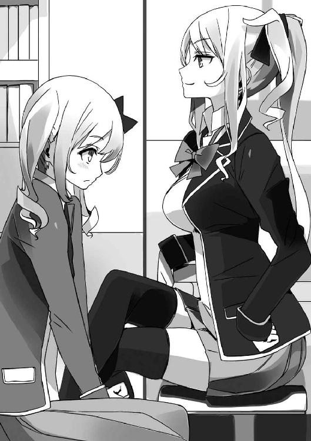
香凛はイエローの可愛いパンツ、アンジュは意外に派手な赤のパンツだった。
うおお、下着だけじゃなくて香凛のむちむちした太ももと、アンジュの細くて真っ白な太もものコントラストが......！
「実はワタシ、香凛先輩に憧れて漫画を描き始めたんです！」
「へ？ そ、そうなの？」
「ハイ、まさか転入した学校にプロの漫画家さんがいるなんて！ しかもツンデレさんです！」
「ツ、ツンデレは関係ないでしょ！」
香凛さん、ツンデレを否定してないな......。
「それでワタシも描いてみようって気になったんです！ まだまだ未熟な身ですが、どうかご指導ご鞭撻のほどをお願いいたしまする！」
「語尾が時代劇になってるわよ!?」
「............」
どうしよう、ついさっきの小動物みたいなアンジュはどこへ行った。
興奮のあまり、ずっとパンチラしてることにも気づいてないみたいだし。
出会ったばかりの中学生のパンツを二日連続で見てるって、どうなんだ......。
「と、とりあえず離れてくれないかしら？ 駿介が怪しい目を向けてるし......」
「え？ あっ、あああっ！」
アンジュは瞬時に真っ赤になって、ぱっとスカートを押さえた。
もうちょっと見ていたかっ......じゃなくて、やっと隠してくれたか。
ひとまず、そっぽを向いてとぼけておくことにする。
「......し、失礼しました」
「だ、大丈夫よ」
香凛とアンジュは、決まり悪い顔で椅子に座り直す。
「で、でも指導なんかできないわよ。というか、雑誌に載った読み切りは何作目？」
「昔から落書き程度はしてましたけど、ちゃんと描いたの初めてでした！」
一転して、ずいぶん興奮してるなあ。
香凛が憧れの人っていうのは本当のことらしい。
「それにしては、ずいぶん絵が達者ね。キャラはちょっと硬い気もするけど、背景はあたしよりずっと上手いわ」
「そ、そんなことは......ただ、お父様が絵描きなので、子供の頃から習ってたんです」
「なるほど、絵のサラブレッドってわけね」
香凛は、うんうんと頷いてる。
「ただ、漫画と絵画は別物だからなあ。漫画家でも、学生時代の美術の成績はさっぱりだった人もいるらしいし。漫画の絵に落とし込めてるのは、センスがあるってことだろうな」
「センスは......わかりませんけど、父は基礎ができてればあとはどうにでもなるって言ってました。基礎さえできれば、自分を信じて突き進めと。ワタシ、突き進んでます」
「そ、そうなのか......」
たぶん、アンジュはセンスもある上に努力も欠かしてないんだろう。
絵は、描き続けないと絶対に上手くならないからな。
「駿介のことはいいでしょ。それより......あたしの漫画を見て投稿したってことは、描き始めて即デビューしたのよね？ あたしの連載自体、ついこの前なんだし」
「う、運がよかったんです。デビュー作は、初めて描いた漫画でしたけど、デビューしてすぐに連載獲った香凛先輩には全然かないません」
「まあ、それもラッキーだったけどね......」
香凛は、ちょっと困ったような顔をする。
確かに香凛はトントン拍子でデビューして連載獲ったけど、上手くいきすぎた感はあったなあ。
「でも、よーくわかったわ」
「な、なにがですか？」
「夢野アンジュ、あんたはあたしのライバルってことよ。いいわ、まずはあんたを叩きのめして一本だけの連載枠、勝ち取ってあげる！」
「後輩にも容赦しない香凛先輩、ステキです......！」
「ちょ、ちょっと、なにその怪しげな目は!?」
うん、アンジュさんの目、憧れ以上の感情が入ってるようにも見えるな......。
これも俺は見なかったことにしよう。
それにしても──『まずは』、か。
やっぱり香凛にとって最終目標は『打倒・寿賀右輔』なんだろうな。
とはいえ......この銀髪の後輩もナメたら痛い目を見るような気がする。
親から受け継いだ絵の才能に、あの今時珍しすぎて斬新なピュア系のストーリー。
香凛、たぶん夢野アンジュは寿賀右輔のかませ犬なんかじゃないぞ......。
４ 狗我香凛の憂鬱
「ど、どうしよう駿介......！」
夜の八時、千歳荘の俺の部屋。
机に向かって、例の読み切りの作画作業中なんだけど......。
「香凛、腕を摑まれてると描きにくい」
そう、香凛が椅子を持ってきて俺の隣に座っている。
放課後、部室でアンジュと話したあと、千歳荘までついてきたのだ。
夕食も既にここで済ませ、今日はお泊まりするらしい。
以前、俺が一人暮らししていた頃はさすがに香凛が千歳荘に泊まるのはＮＧだったんだけど、最近は友人の歩沢ひびきの部屋に泊まるということでご両親からもＯＫが出てる。
実際、俺の部屋に泊まるわけじゃないから、それはいいんだけど......。
「うう......本当に困ったわ......」
香凛さん、さっきから腕にしがみつくようにしている。
あと、おっぱいがめっちゃ腕に当たってる。なにこれ柔らかすぎだろ。
もっと当ててくれないかな──いや、そうじゃない。
「あのな、香凛、あとで話は聞くから──」
「......描きにくくてごめん」
「とか言いつつ離さないのか」
「だって......」
仕方なく、視線を原稿から香凛へと移す。
予想どおり、香凛の大きな瞳はうるうると潤んでいた。
「マジでどうしたらいいかわからないもの......アンジュに連載枠持って行かれたらどうしよう......！ いくらなんでも新連載が来年以降とかまずすぎるわ！」
「まあなあ......」
連載終了と次回作の間隔をどれくらい空けるか──大事なところではある。
大ヒットのあとなら、じっくり時間をかけて次回作を練るのはアリだろう。
次もヒットさせなければというプレッシャーもあるだろうし。
ぶっちゃけ、印税たっぷりで金があれば急がなくてもいい。
スマッシュヒットくらいなら、読者に忘れられないうちに新連載を始めるのがいいのかもしれない。
以前に、長期連載の終了と同じ号に新連載の一話を掲載したって例もあった。
やり方はいろいろなんだけど、香凛の場合は新連載を急いでいる。
俺に勝ちたいっていう目標があるんだから。
それなら急がずにじっくり練ったほうがいいとは思うけど、焦る気持ちもわかる。
「つーか香凛、アンジュにはあんだけ偉そうにしてたくせに」
「後輩の前で弱気なところ見せられないでしょ！ あ、あの子......あたしに憧れてるなんて言ってたし......」
「意外とまともな感性もあるんだな」
「どういう意味よ!?」
そんな、睨まれても。
ここんとこ、香凛のおかしなところばかり見せられてたからなー。
「変なところで格好つけるんだな、香凛も」
「......人をなんだと思ってるの、あんたは」
しかし、いつも無駄なくらいに強気な香凛がへこむなんて珍しい。
えらく身近なところに脅威があったせいか......。
しかも条件は最悪。失敗したら、しばらくチャンスすらない。
「......よし、一区切り」
１ページ分、ペン入れが終わったので一息つくことにする。
描きにくかったのに、えらく順調に進んだな。まさか胸の感触のおかげ......じゃないよな。
「......さすがに上手いわね。あたしのおっぱいに耐えながら、この線の綺麗さ......どうなってるのよ！」
「いきなりキレるなよ！ 一応週刊連載やってたんだから、嫌でも上手くなるっての！」
「どうかしら。何年やってても下手な人、けっこういるわよ？」
「具体的な名前は避けてくれてありがとう」
香凛さん、割と同業者批判多いから。
「ああ、あたしが気にしなきゃいけないのは、アンジュの画力よね！」
「そうそう、そのとおり」
きわどい話題がすぐに終わってくれてよかった。
「さすがにお父様が画家っていうだけあって、たいしたものよね。漫画は画力じゃないけど、重要なのも確かよね」
「そうだなあ。ぶっちゃけ、『オーディン』はマイナーだから、売れるためには単行本化したときの表紙が重要だしな。どれだけ目を引く表紙が描けるかってところも重視されそうだ。アンジュはあれだけ画力があるんだから、凄いの描いてきそうだな」
「......いきなり痛いところ突いたわね」
ああ、幼なじみさんの目が厳しい。
でも実際、単行本の売り上げが伸び悩んだのが、香凛の作品が打ち切られた原因の一つだしな。
単行本の表紙というのは、本当に本当に大事だ。
店頭でどれだけ目立てるかが、売り上げを大きく左右するらしい。
そして、目立つ表紙を描くにはセンスと画力だ。
「香凛はセンスはあると思う。天然で、なんとなくいいものを描けるよな」
「褒められてるのかしら、それ？」
「画力のほうは、まだちょっと物足りないかもな。アンジュは三つも年下だけど、子供の頃から相当描いてたんだろうなあ。手慣れてる感じがするよ」
「ううーん......」
香凛は腕組みして考え込んでしまう。
「でもまだ、デビューしただけの新人だよ。怖がりすぎると、自分のペースを崩すぞ」
「わかってるわよ。でも......」
「読み切りはシンプルでもいい。けど、連載となると別の要素が必要になるんだよな」
実際、読み切りでは凄く面白かった作品が、連載化したとたん、ほんの数話で失速するのはよくある。
連載のやり方がわかっていない新人は、特にその現象に陥りやすい。
その点、香凛は既に連載経験があるんだから、そこは大きなアドバンテージだ。
「それもわかってるわ。あたしにだって、武器があるってことくらいは......」
「......おまえ、やる気満々だったはずだろ。俺に勝つとか、歩沢を路頭に迷わせてやるとか、あの頃の香凛はどこへ行った？」
「うう......だって......」
香凛は弱々しく言って、今度はふらふらと俺のベッドに倒れ込んだ。
まだ制服姿だけど、ブレザーは脱いでブラウスだけだ。
凶悪な胸のふくらみがよくわかるんだけど......今、倒れ込んだ弾みで二つのふくらみが異様に揺れたような......。
まさか香凛ちゃん、ノーブラですか？ いつの間にか外してたの？
ノーブラで俺の腕にその凶悪なブツを押しつけてたんですか？
幼い頃から知ってる女の子の胸が育つのって、嬉しいような気恥ずかしいような......。
昔は、暑い時期だとお互いに裸みたいな格好で、御門家の庭を走り回ってたっけ。
あの頃のぺたんこな香凛はもういないんだなあ......。
「時間が経つと冷静になっちゃうのよ......」
と、ロリ香凛に思いを馳せてる場合じゃなかった。
ますます香凛の口調が弱々しくなってる。
「時間？ まだそんなに経ってないだろ？」
「打ち切り決まって......駿介がひびきの絵を描いてて、なにもかもに負けたような気がしたのよ、あのときは」
「............」
そう、俺は一度だけ歩沢の姿をスケッチしている。
あいつの姿を描きたい衝動を、どうしても抑えられなかった。
これまで、香凛の絵は一度も描いたことがないというのに。
「あのときは......こんちくしょー！ って感じで絶対に駿介もひびきも見返してやろうって気持ちでいっぱいだったのよ。けど、最終回の原稿を上げて、気が抜けた瞬間に──そうね、弱気になっちゃった。これだけ負け続けてるのに、あたしがなにかに勝てることなんてあるのかしら？」
「......それは飛躍だと思うけど」
香凛が負けたような気持ちになってる、っていうのはわからなくもない。
でも──
「あのな、香凛。おまえは良家のお嬢様で、可愛いしスタイルもいいし、友達もいっぱいいる。その上、高校生で連載も経験した漫画家なんだぞ。普通の人が見たら、間違いなく勝ち組だと思うだろ」
「普通の人、なんてあたしには関係ないの」
香凛は、ぽつりと言った。
「あたしが負けてると思ったら、それは負けなの。だいたい、あたしより勝ってる奴が現実にいるんだもの。とんでもない大人気漫画を描いた駿介と、駿介に絵を描いてもらえたひびきが。これで勝ち組だなんて、考えるだけでむなしいわ」
「............」
まずい、言い返せない。
それに、負けてると思ってる相手の俺がいくら言ってもフォローにならないかも......。
「あたし、アンジュにも勝てる気がしないのよね......」
かといって、なんのフォローもしないわけにもいかない。
恋愛感情を持てなくても、香凛が大事な幼なじみであることに変わりはないんだから。
「弱気だな。なんだかんだ言っても、おまえは連載経験者だろ。編集部だってキャリアは気にすると思うけど」
「打ち切り作家ってマイナスイメージついちゃうでしょ」
「うーん、それはあるかもだけど......何度も打ち切りくらってヒットを出した人だっているんだから、そこまで気にしなくても」
「あと、アンジュのほうが若いわ。将来性でも負けてる！」
「おまえも若すぎるくらいだからな！」
中学生で週刊連載してた俺が言うのもなんだけど！
「たぶん、そこは気にしなくていい......むしろ、中学生って若すぎてマイナスだと思う。まだ香凛のほうが有利だ」
「そっかあ......でも打ち切り作家と期待の新人だし......あと、外国人枠とか......？」
「野球じゃないんだから」
あるわけないだろ、そんなもん。
香凛は、俺のツッコミも聞いてないのか、なおもブツブツなにか言ってる。
ていうか言いながら、さらにブラウスのボタンを外してる。
ここ、おまえのお部屋じゃないんだぞ。
脱いだほうが楽だろうけど、あと一つボタン外したら止めるぞ。
谷間がばっちり見えてるのに、ブラが見当たらないのがとても気になります。
「......アンジュ、二階にいるのよね？ きっと奴は油断してる......」
「待て待て、なにを企んでるんだ!?」
今は、アンジュは千歳荘の住人だ。
自室なんだから油断してるに決まってるけど、後輩の暗殺はいけないことだ。
「むう......強攻策もダメなんて、じゃあどうやって勝てっていうのよ。ぶっちゃけ、あたしって負け癖ついてるわ」
「おまえ、今日はちょっとおかしいぞ。いろいろぶっちゃけすぎだ」
香凛が妙に卑屈になるのは前からだ。
でも、歩沢みたいな超越的存在が相手ならともかく......。
「相手は可愛い後輩じゃないか。そこまで気を張らなくても」
「......可愛い？ ふうん、やっぱり可愛いと思ってるのね。告られたら、一気に胸揉んでスカート脱がして下着の中に手を──」
「そ、そこまではやらない！ たぶん！」
アンジュは照れ屋っぽいし、もし俺のなんとかオーラにやられても告白はしてこないんじゃないだろうか。
「......そういや、歩沢は初対面からずいぶん警戒してたのに、アンジュはスルーだな」
まあ、歩沢は俺のオーラがまったく効かない特異体質で、香凛もそれを見抜いてはいたけど。
それにしたって、香凛が〝女の子〟としてのアンジュを軽く見すぎてるような。
「だってあの子、銀髪ツインテールだもの。あんまりメインになるタイプじゃないでしょ？」
「髪型で決めるのやめませんか、香凛さん」
「サブで人気が出るけど、一番にはならないわよね、銀髪。というか、ツインテール自体、最近はあまり強くない気がするわ」
「それはケースバイケースというか......」
一概には言えないと思います、ハイ。
「あたしが心から憎むのは黒髪！ 黒髪ロングなのよ！」
「おまえ、まどかさんも管理人さんも好きだったよな？」
「駿介......漫画と現実の区別をつけなさいよ」
「香凛にだけは言われたくない！」
生あたたかい目を向けないでください。
「アンジュって......ほら、要するにテコイレ要員でしょ？ さゆりちゃんとか八神さんとか、ああいう系。かませ犬と並んで、ラブコメの必須要素よね」
「あの、御門駿介君をめぐるラブコメじゃなくて、現実なんですが」
またラブコメ脳始まりました。
さゆりちゃんと八神さんというのは、ちょっとビッチっぽい女子高生と、教育実習生に恋しちゃう子のことですね。
「レギュラーメンバーだけじゃマンネリになってきたところで話を転がしたり、あとエロ要素の追加にもなるわね。さつきちゃんとか泉ちゃんとか、そっち系よね」
「ポンポン固有名詞を出さないでください」
いちいち説明するの面倒だから、もうやらないぞ。
「ま、駿介がアンジュを好きになることはなさそうだし」
「......別にアンジュじゃなくても好きには......」
いつになったら、俺の歩沢ラブラブ疑惑が晴れるんだろう。
先日、歩沢の本音を聞かされて以来、好きというよりむしろ怖いくらいなのに。
「アンジュは、歩沢とは全然違うのは確かだけど」
「ひびきみたいなのがポンポン登場したらたまらないわ！ ていうか、あいつがいっぱいいたら世界が滅ぶわ！」
「どうも、破滅の使者です」
「............」
「........................」
突然の声に、俺も香凛も驚きはしなかった。
部屋のドアが開いていて、出入り口のすぐそばに歩沢がちょこんと正座している。
まあこいつ、ちょっと人外っぽいところもあるしな......。
俺たちのお話は現実よりのラブコメだから、超常的存在は出てこないけど。
いや、ラブコメじゃないけど。
「いつからいたのよ......？」
「ドア、開いてましたよ。ドアを閉めるのももどかしく絡み合ってたらどうしようかと、管理人の権限を執行させてもらいました」
「管理人だからって、住人の部屋に出入り自由じゃないと思うんだが」
「一応、わたしが香凛ちゃんをお預かりしてることになってますからね。キズモノになったなら、それなりの処置をしないといけませんし」
「キズモノになる前に止めろよ！ しないけど！」
あと、処置って具体的になに？
ご懐妊を防ぐためのなにかですか？ 俺、よく知らないけど方法があるの？
「香凛ちゃん、ずいぶんお悩みみたいですね」
「......なにか企んでない？」
「あらら、これはまたずいぶんなリアクションですね」
歩沢が、わざとらしく傷ついた顔をする。
香凛は歩沢の黒い計画を知らないはずだけど、ずいぶん警戒してるな。
「わたし、最近は御門君の相談役も兼ねてるんですよ」
「駿介の管理人だの千歳荘の管理人だの、今度は相談役？ お忙しいことね......」
「漫画家よりは暇だと思いますよ。で、暇なので香凛ちゃんの相談もいつでも受け付けますからね」
「マジで！ ホントに相談に乗ってくれる!?」
「......あ、あら？ 意外なほどに食いついてきましたね」
「プライドなんか犬に食わせろよ！ あたしはあんたを倒すために、あんたの力を借りることも厭わないわ！」
「あの、御門君、香凛ちゃんを歪ませすぎじゃないですか？ あなたが何度も香凛ちゃんのプライドを折り続けてきたから、こんなことになってしまって......」
「俺のせいにされても......うん、俺のせいかもしれないけど......」
否定できないところが悲しい。
さすがに、香凛のプライドとフラグをベキベキとへし折ってきた自覚はある。
「あんたら、人を手遅れみたいに言わないで！」
香凛は、がるるるると犬のように吠えてから。
「もういいっ、寝る！ 今日は寝るっ！ 朝起きればすべて解決してると信じるわ！」
「いやいや、寝たってアンジュの脅威は去らないぞ！」
「ばーかばーか！」
意味不明な罵倒を俺にくらわして、香凛は布団をかぶってしまう。
「......ていうか、俺のベッドなんだけど」
香凛が千歳荘に泊まるときは、俺の円盤＆ゲームの部屋に勝手に設置したベッドを使ってる。
「香凛ちゃん、まだお風呂入ってないでしょう。いけませんよ、女の子が。わたしの目が黒いうちは、女の子のたしなみは忘れさせませんからね」
「......明日の朝入る。用意しといて」
「もう、しょうがないですね......」
「母と娘か、おまえら！」
香凛のほうは歩沢を敵認定してたはずだろ！
「すー......すー......」
「って、本当に寝てる......」
いくら幼なじみとはいえ、男のベッドであっさり安眠できるってどうなんだ。
俺が一緒に床入りってわけにも......いかないよなあ。
「ふー、いい風ですね」
「......まだちょっと寒いけどな」
我が部屋で香凛がクダを巻いてたと思ったら。
今度は、歩沢と千歳荘の屋根の上。
とりあえず、千歳荘の屋根からは周りの山々がよく見える。
景色はいいんだけど、隣にいる女の子の存在がなんとなく俺を不安にさせる。
「わたしはこの程度の寒さ、平気ですけどね。なにしろ、施設は暖房もろくに使わせてもらえませんでしたから、飢えと寒さには慣れてます」
「う、飢えてたのか!?」
「もちろん冗談です。施設は冷暖房も完備でしたよ。国だって実在の児童保護に関係ない創作物の規制にばかり躍起になってるわけじゃありませんから、施設の子供だってそれなりに守られてましたよ」
「重いだけならまだしも、危険すぎる発言は避けてもらえないかな......」
あと、歩沢はもう漫画やアニメの規制のことまで知ってるのか。
ついこの前まで、オタク関係の知識なんて皆無だったのになあ......。
成長したけど、ちっとも感動がないのはなぜだろうな。
「とりあえず、ジャブはこんなところで」
「おまえのジャブは一発ＫＯの破壊力があるんだよ」
会話の前置きだけで疲れさせないでください。
「香凛ちゃん、だいぶ参ってるみたいですね？」
「あれで意外と打たれ弱い......というか、あきらめが早いんだよな、あいつ」
「相変わらず強気なのか弱気なのかわからない子ですね」
歩沢は、くすくすと笑ってる。
あんまり笑い事でもないんだけどな。
「でもたぶんこれ、猫村さんの狙いどおりの状況ですよ」
「......やっぱそうだよな」
アンジュを送り込むだけで姿を見せない、ふわふわ脳みその編集者。
なにを考えてるのか読ませない奴だけど、今回の行動は見え透いてる。
「アンジュは、香凛に憧れて漫画を描き始めたらしい。そりゃ、憧れの漫画家がライバルならあいつはやる気出すだろうなあ」
「香凛ちゃんなら、絶対に手が届かないというほど遠い存在でもないですしね」
「い、いや、香凛は仮にも連載経験者だぞ......」
単行本１巻で打ち切られた作家と、読み切り１本載った作家。
香凛にも言ったけど、これはけっこうな差だと思う。
アンジュはまだスタートラインに立ったところ。
香凛は途中で止まってしまったけど、既に一度走ってるんだから。
「でも、香凛ちゃんに憧れて描き始めたというのは調査から漏れてましたね。アンジュちゃん、漫画家を目指してるというのも人に言ってないようですし」
「それが普通じゃないか？ 俺、連載してた頃は引きこもってたけど、たぶん普通に登校してても人には言わな──」
ん？ 今、歩沢が変なこと言わなかったか？
「調査って......なんだ？」
「わたしも、意味なく御門君のおそばを離れてたわけじゃありません」
「意味なく離れてくれて全然かまわないんだけど」
「今日は、アンジュちゃんの調査をしてたんですよ。経歴は一応調べましたけど、今度は、学校内の友人たちからの生の声というやつを聞いてきました。もちろん、仕事の一環です。この千歳荘の管理人でもありますからね。住人のことは知っておかないと」
「......前から思ってたけど、おまえってただの野次馬なんじゃ......」
「好奇心は歩沢を生かすのですよ。わたしの数少ない趣味に文句をつけないでください」
「趣味だったのか......」
趣味で周辺を嗅ぎ回られちゃたまらない......。
「で、第一回アンジュちゃん調査記録なんですが」
「何度調べる気なんだよ......」
「アンジュちゃん、普段はとてもおとなしいですけど、漫画のことになると人が変わるようですね。語り始めると止まらないとか」
「まあ、オタクっていうのはそういうもんだよ」
アンジュは、祖国では両親以外に漫画の話をできる相手がいなかったのかもな。
日本の漫画は世界中で読まれてるともいうけど、誰もが読んでるってわけでもないだろうし。
「漫画のことに限らず、一度火がつくと止まらないタイプみたいですよ。美術の授業中、絵に集中し始めたと思ったら、チャイムが鳴って先生に止められても、筆を動かし続けたそうです。なんだかもう、絵を描くだけのマシーンと化してたとか」
「ま、まあ芸術家っていうのはそういうもん......じゃないのか」
俺は漫画家であって芸術家じゃないので、確かなことは言えないけど。
「猫村さんの目的は、火をつけること──でしょうね。いえ、香凛ちゃんに会って、もう燃え上がっちゃったのかも」
「......まずいな」
一方の香凛は、テンション下がっちゃってる。
これから初連載を獲ろうと張り切ってるアンジュと、連載打ち切られて気が抜けちゃってる香凛──メンタルの勝負では早くも負けムードだ。
「ついこの前の、歩沢を路頭に迷わせようって香凛なら勝ち目もあるのに......！」
「路頭に迷わされては困りますが。わたし、可哀想です」
「......そうだけど、おまえの場合、可哀想に見えない......」
この人、俺の管理人をクビになってもたくましく生きていけそうだよな。
そもそも、俺や香凛がまとめてかかっていっても、クビになんてできないか。
「わたしの安定した生活については、とりあえず置いておくとして......アンジュちゃんは、なかなかのクセモノですよ。御門君と香凛ちゃん、わたしの健全な三角関係を崩してくるかもしれません」
「クセモノ......？ いや、いつから俺たち三角関係をつくってたんだ？ 一つの台詞で複数の突っ込みどころがあるのはどうなんだ？」
「御門君もいろいろ言ってますよ。まあ、すぐにわかりますよ、きっと。いやいや、なかなか楽しくなってきましたね」
「楽しいの、おまえだけじゃないのか......」
まさか、アンジュにはまだ秘密があるのか。
歩沢は知ってるんだろうけど......ここで言わないってことは、話す気はないんだろう。
ただでさえ、歩沢が山ほど謎めいてるっていうのに。
なにもかもわかりやすいのは、香凛だけだな......。
やっぱり、俺には香凛しかいないのか。
ああ、香凛......香凛に会いたい......。
って、すぐそこで寝てるんだけどね。
５ 初デートはさわやかな初夏に
「おはようっ、駿介！ いい朝ね！」
「........................」
目を開けると、そこに幼なじみの満面の笑みがあった。
ついでに言うと、制服姿の幼なじみさんは俺の身体にまたがっている。
脚を大きく開いているので、ミニスカートの隙間からパンツが見えそう......。
「......おはよう。そうだよな、幼なじみって上に乗っかって起こしてくるもんだよな」
「さすがラブコメ作家ね、よくわかってるじゃない！」
ああ、香凛さん、笑顔がまぶしいです......。
「......ていうか俺、寝起きは悪くないんだけど」
一応、つい最近まで完全なる一人暮らしで、ちゃんと朝起きてたんだし。
「知ってるわよ。何年付き合ってると思ってるの？」
「......ご存じなら、この行動の理由はなに？」
「たまには幼なじみ感を出したくなるのよ！」
「そんなことのために、朝っぱらから乗っかられてるのか俺は」
「美少女に乗っかられて嬉しくない男はいません！」
「おまえが断言するなよ！」
ああ、起き抜けからツッコミはさすがに疲れる。
ちなみに、ここは円盤とゲームのお部屋。
昨夜は結局、香凛を起こすわけにもいかず、俺がここの仮眠用ベッドで寝たのだ。
「つーか、昨夜はふて寝してたくせに、今日はやたらと元気だな......」
「あたし、思いついたことがあるの！ 一刻も早く聞かせたくて！ そこに正座して聞いて！」
「この状態でどうやって!?」
座った姿勢でジャンプできる人はいても、寝たまま正座できる人間は存在しない！
「じゃあ、そのまま聞いていいわ」
「いや、降りてほしいんだけど」
いくら香凛が軽いっていっても、ずっと腹の上に乗っかられてるとキツい。
あと、男の子の部分が香凛のお尻に触れたりしたら、どうなるか怖いです。
「まあ、話は簡単よ」
香凛が、俺の抗議はスルーして、ぐいっと顔を近づけてくる。
「あんた、ひびきとデートしてきなさい」
「あー、デートか。うん、いいんじゃないか？ 映画を観てショッピングして、ちょっと背伸びしてファミレスじゃないレストランでパスタとか食べちゃったりして」
「なんか昭和臭がするデートね......って、そうじゃないでしょ！ いつものキレキレのツッコミはどこへ行ったの!?」
「別に突っ込むために生きてるんじゃないぞ！」
あと、いつまでこの体勢が続くんだ？
「あのな、ツッコミ待ちの台詞はやめろよ......」
「台詞回しにはインパクトが必要なのよ。あとで噓でした冗談でした、でごまかせばいいんだし」
「んん？ ラブコメ漫画の話じゃないよな？」
「あたしは、駿介のゆかいなラブコメライフの登場人物その１でしょ。台詞回しも当然狙っていくわ」
「もう、なんの話なのやら......」
どんどこ本題から逸れていってるし......。
「それより、デートよ。デート、したいでしょ？」
「今はおまえにどいてほしい」
「おとなしくしなさい。さもないと、犯すわ」
「どこがラブコメなんだ!?」
俺が描いてたラブコメにはそんな台詞、かけらも出なかったぞ！
「だいたい、おまえ新作はどうしたんだ？ どうやって新作でアンジュに勝つか悩んでたんだよな？」
「もちろん、話は繫がってるわ。あたしがアンジュに勝つために、ひびきとデートしなさい」
「まったく繫がりがわからん......。なんだそれ、風が吹けば桶屋が儲かる、みたいな？」
あるいは、バタフライエフェクト？
香凛さん、考えすぎてとんでもない遠回りを選んじゃったんじゃ？
「要するに、あんたとひびきのデートを新作の参考にさせてもらいたいの。ラブコメならデートシーンは必須でしょ？」
「デートを参考に......？」
「そう、このまま普通にネームを練っててもアンジュには勝てないわ。だったら──ここはリアリティよ！ 露伴先生もリアリティが大事だとおっしゃってるわ！」
「一応言っておくけど、露伴先生は漫画の登場人物だからな？」
露伴先生は、誰もが知ってる超有名少年漫画の登場人物で、漫画家だ。
その漫画の作者さん自身がモデルになってるわけじゃなく、もちろん作者さんは蜘蛛の味を確かめたりはしない──と思う。
「とにかく、アンジュに勝つためには取っかかりが必要なの！」
「それで、俺と歩沢のデートを参考にするっていうのが意味わからんけど......デートするなら、香凛が相手でもいいんじゃないか？」
「客観的に見たいのよ。というか、あたしが駿介とデートしちゃうと、普通に楽しんで、場合によってはホテルまで行っちゃうから一般雑誌向けにはならないわ」
「そこはカットすればいいんじゃないか!? ホテルなんて行かないし！」
いやまあ、客観的に観察したいって話はわからないでもない。
アンジュに勝つための取っかかりか......。
「確かに、机の前でうんうん唸ってるより、外に出たほうがいいアイデアは浮かびやすいのかもな」
俺は引きこもり作家だったけど、他の漫画家さんの場合、アイデアを求めて外に出る、みたいな話は珍しくない。
「でもなー、俺と歩沢のデートが参考になんかなるかなあ......」
どう考えても、普通のデートにはなりそうにない。
「文句言わない！ とにかく、このままじゃアンジュに勝てる気しないから、奇策が必要なの！」
「人のデートを奇策とか言わないように」
「今回は、あんたの恋を応援するためじゃない。あたしのために、デートしてほしいの。もうかませ犬はやめてもいいけど......ていうか、かませ犬ってなに？ バカみたいじゃない？」
「おまえが言うなよ、おまえが......」
俺だってバカみたいと思ってたけど、あたたかく見守ってたんだぞ。
「──って、待て。また話が逸れてる。肝心なことを忘れてないか？ デートって相手の承諾が必要なんだぞ？」
「さすがに、エアデートをしろなんて、そこまで見るも無惨なことはやらせないわよ」
「だったら、歩沢の許可を取らなきゃダメだろ」
歩沢にデートを申し込むなんて、どんな答えが返ってくるか想像もできない。
「ひびきは断らないわよ。それこそ、駿介が『断るならエアデートするぞ！』とか脅せば、管理人としては放っておけないでしょ」
「俺、最低じゃないか？」
「気にしないで。そこはなんとかなるから、デートしてきなさい」
「......あと、もう一つ訊いていいか？」
本当はもっとたくさん言いたいことがあるけど、一番重要なところを一つ。
俺は、部屋のドアのほうを指差す。
「アンジュは、なにしてるんだ......？」
「ああ、あの子？」
香凛は、そちらを見もせずに答える。
部屋のドアのところにアンジュがぺたんと座っている。
気がついたのは今だけど、もしかして最初からいたのか？
「美少女が冴えない幼なじみを起こすシーンをリアルに見たくないかって誘ったら、ついてきたわ」
「そりゃあ、めったに見られるもんじゃないしな......」
アンジュは、スケッチブックにバリバリなにか描いている。
たぶん、俺に乗っかった香凛をスケッチしてるんだろう。
おお、鉛筆を動かす手が速すぎて見えない。
「戦いはフェアじゃなくちゃいけないわ。アンジュにもデートのことは話してある。あの子も、あんたたちのデートを参考にする資格があるわ」
「......条件が互角になっちゃったら、やっぱり香凛に勝ち目がなくなるんじゃないか？」
俺は香凛が勝てないとは思ってないけど。
「いいの。一つ、あたしにだけ有利なことがあるわ」
「なんだ？」
「駿介のデートの相手が誰でもなく、ひびきだってことよ。一番の危険人物、駿介をかっさらう可能性がもっとも高い人物。そんな奴と駿介がデートするのよ？ それはもう、イライラしてイライラして、あたしの心にまた火がつくでしょ！」
「それは漫画家の〝香凛〟じゃなくて、個人的な話じゃ......？」
「今のあたしはメンタルが死んでるわ！ なんでもいいから、燃え上がらせてほしいのよ！」
「俺まで巻き込んで延焼しないといいなあ......」
メンタルが死んでる割にはテンション高いけど、カラ元気かな？
香凛ちゃん、無駄に元気すぎる......。
「よし、決まったわね！ それじゃ、レッツデート！ あたしが好きな男の子が、あたしじゃない女の子とデートする記念日よ！」
「笑顔で言わないでください。逆に怖いです」
香凛が歪んでるのは間違いないけど、年々ひどくなっていく......。
漫画家という職業が歪みを助長しちゃってるし。
ラブコメだったら、選ばれなかったヒロインにもそれなりに明るい未来があったりするんだけど......。
香凛ちゃん、君は幸せを目指してますか？
深遠な疑問を抱きつつも、事態は進む。
千歳荘の最寄り駅から電車で十分ほど。
聖風館学院の生徒たちもよく立ち寄る繁華街が、その駅前にある。
「ああ、今日は絶好のデート日和ですね」
「......まあな」
そこそこ暑いけど、風があるので過ごしやすい。
デートするには、いい気候だと言えるだろう。
「本当のデートなら、もっとよかったのになあ」
「なにをおっしゃいます、御門君。本当のデートじゃないですか」
にこっ、と胡散臭いほどの笑みを歩沢が浮かべる。
くそっ、マジで可愛い......黒髪ロングの美少女の笑顔とか最高じゃないですか。
これが無理矢理のデートじゃなければな！
「つーか、なんで今日なんだ......思いっきり平日なのに」
「平日にサボってデートというのがラブコメっぽい......というのが香凛ちゃんの主張ですね」
「おのれ、ラブコメ脳......」
普通に日曜にデートするラブコメだって多い......というか、そっちが大半だろ。
香凛め、俺に迷う時間を与えずにデートさせようとか、えげつないな。
ちなみに、俺も歩沢も私服姿だ。
俺は普通の長袖シャツとズボンという、平凡以外の言葉では表現できない格好だ。
歩沢のほうは、「透けてるんじゃないか？」というくらい真っ白なワンピースに、薄手のカーディガンを羽織っている。
ワンピースの丈はちょい膝上くらいで、慎ましい長さだ。
それでも歩沢の細くて綺麗な生足が見えていて、ちょっとドキドキしてしまう。
歩沢、初夏になった今も、制服のときはストッキングはいてるからなあ......。
胸とか尻もいいけど、脚も悪くない......。
「もの凄くガン見してますね」
「い、いや......ほら、デートなら服を褒めないと！ でもいい表現が思いつかなくて！」
「思いつかないとか、恐ろしく無神経ですね」
にっこりと笑いながら、歩沢はさわやかに言った。
むう、確かに今のは失言だった......。褒めるところがない、みたいにも聞こえそうだ。
「ああ、まあ......似合ってるな。千歳荘ではけっこうラフな格好してるけど、そういう服も持ってたのか」
「女の子ですから。ま、施設にいた頃は歳上の人たちのお下がりばかりでしたけどね。何年受け継いでるんだっていうような、センス以前の問題の服ばかりで」
「毎度のことながら重たいことをさらりと......」
「これは、御門のおじいさんからいただいたお給料で買った服です。ある意味、御門君の血と涙と引き替えに手に入れたものですね」
「血も涙も流してないっ！」
俺を管理して得た金だっていうだけで。いや、それも納得しづらいな！
「いきなりのデートは驚きましたが、この服を下ろすいい機会でもありましたしね。隣を歩いてるのが、さわやかな美少年ならもっとよかったんですが」
「恋愛感情なくてもイケメンのほうがいいんですか、歩沢さん......」
「彼氏っていうのは要するに、女の子のオプションですよね？ すぐ隣に置いておくものですし、見てくれがいいに越したことはないでしょう」
「それは、あなた個人の意見デスヨネー」
世の中の女の子すべてがそんな考えだったら、男は揃ってクーデターを起こします。
「あら、違うんですか......男女というのは難しいものですね」
「歩沢が難しいんだと思う......」
まだ駅を出て五分も歩いてないというのに疲れてきた。
デートって、こんなに体力を奪うものなの？
「だいたい、香凛はホントに俺たちがデートしていいのか......？」
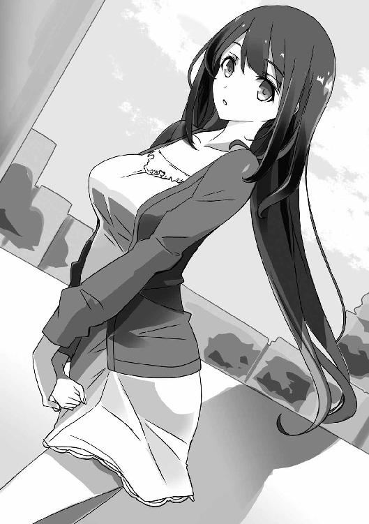
「ああ、粘膜接触さえしなければＯＫだそうです」
「粘膜!?」
香凛のＯＫ、ＮＧのハードル、えらい低いとこに置かれてるな！
「それより、わたしがＯＫしたことに感謝してくださいよ」
「......そういや、歩沢って告られても一刀両断で斬り捨ててるんだってな」
以前、歩沢に声を掛けた男子生徒たちが大げさに頽れるところを見たっけ。
「御門君も見習うべきですね。なんでも、同じ女子生徒に何度も告白されてるらしいじゃないですか。ずばっと斬り捨てればゾンビのように戻ってくることもないですよ」
「女の子相手にできるか、そんなこと！」
告られて逃げるのだって同じくらい相手を傷つけるだろうけど、俺にできるのはそれが精一杯。
どこからか万国旗を取り出してお姫様を笑わせるような芸は持ち合わせてない。
「まったく......そんな歩沢さんがデートをＯＫしてくれるのはなぜ？」
「ちょうどよかったからですよ」
「よかった......ってなにが？」
「明日から天気が悪いらしいですから」
「天気がいいからＯＫした？ 意味がわからんのだけど」
歩沢の言ってることがわからないのは、珍しくないが。
「いえ、明日と明後日の分の買い物もしたいので。荷物が大量になりそうなんですよね」
「それ、デートじゃなくて買い出しだろ！」
しかも荷物持ちとか、ムードもなにもない。
「はあ、そうですか。でも、デートと買い出しの違いってなんですか？」
「......なんだろう」
僕、童貞だからわかりません。
いや、童貞は関係ないけど。
「いいじゃないですか、細かいことは考えずに。あなたも、気分転換したほうがいいですよ。最近、いろいろありましたし」
「いろいろの大半は、おまえが原因じゃないか？」
「それも細かいことですね。ここでぱーっと盛り上がっておきましょうよ。盛り上がってから、また原稿に挑めば！」
「原稿のこと、思い出させるな──って、なにしてんだ！」
歩沢が笑顔で、腕を絡めてきてる。
うおお、お約束だけど胸が......胸が当たってる！
見たり触っちゃったりしたけど、こうして腕に当てられると独特な気持ちよさが！
「ああああっ、こらぁっ、それもダメ！ 腕を組むのもなんか腹が立──」
「ダメです、香凛先輩っ！ まだメチャクチャにするには早すぎます！」
「............」
今、ちょい離れたところからよーく聞き慣れた声と、妖精みたいな可愛らしい声が聞こえたような。
「まあ、デートに尾行がつくのも、尾行を見抜いているのもお約束でしょう」
「ラブコメだったらな......」
これは現実なんだと、何度言ったら。
まあ、俺も香凛とアンジュがこっそりついてきてるのは知ってた──
というか、観察するんだからついてくるに決まってるよな。
あまり落ち込んでる香凛は見たくないから、これでやる気が出てくれるなら俺としても嬉しいけど......そう上手くいくかなあ？
しかし、あの美少女二人は目立ちすぎる。この世でもっとも尾行に向かない二人かも。
「昔の女と、次の女がつけてきてるっていうのも凄いですけどね」
「恐ろしく人聞きが悪い！」
いや、歩沢が人聞きがいいことを言ったことがかつてあっただろうか。
あと、香凛は昔の女じゃないし、アンジュが次の彼女候補でもないし！
「御門君、ちょっと騒がしいですね。どんどん口うるさくなってきてません？」
「ツッコミ待ちの人が増えたせいじゃないかな......」
俺のせいみたいに言われても困る。
「ああ、ラブコメの主人公は、ツッコミ上手じゃないと務まらないですかね。じゃあ、問題ないですね」
「......本当に、歩沢はラブコメに詳しくなったな」
スマホでの検索と、俺の部屋の漫画を読んでいるからか。
あと、さすが優等生だけあって吸収力がハンパない。
「御門君が好きなものを知るのもお仕事ですから。さて、それじゃ行きましょう」
「ん？ どこへ行くか決めてるのか？」
自慢じゃないけど、デートなんて初めてだ。
それこそ、漫画で得た程度の知識しかない。
映画かショッピング......あるいは遊園地とか？
「動物園に行きましょう。ここから歩いて行ける距離にあるんですよ」
「ああ、そこは知ってるけど......なんで動物園？」
高校生のデートとしては少し変わってるけど、なんとか普通の範疇か。
いや、むしろ歩沢の提案にしてはまともすぎて、逆に怪しいくらいだ。
「ほら、前に言ったじゃないですか。ラブコメの主人公とかヒロインとか、恋愛感情で動いてる人たちを見てると、動物の観察でもしてる気分になるって」
「忘れようのない衝撃発言だな」
「で、ラブコメな御門君や香凛ちゃんを見続けてきたので、ちょっと気分転換に本物の動物でもと。さ、行きますよ」
「............」
まあ、動物園なら文句はない。
どうせ、俺にもたいした案があるわけでもないしね。
それに......後ろをついてくる二人も、動物園なら後をつけやすいだろう。
「わあ、ライオンです、ライオンがいますよ」
「ふーん、けっこう本格的なんだなあ」
この動物園、実家からも近いし、存在は知ってたけど来たことはなかった。
「名所があっても、地元だと意外と足を運ばなかったりするよなー」
「でも、さすがに動物園なら来ませんか？」
「ここ、割と最近できたんだよ。俺が子供の頃はなかった」
「今でも子供じゃないですか」
「......まあ、そうだな」
「香凛ちゃんと大人になろうとして失敗したわけですし」
「そういう意味じゃないっ！」
なんか、香凛の言うとおりに童貞捨てたほうがいい気がしてきたぞ。
いや、もう少し大事にしておきますが！
「そういえば、ライオンのオスって狩りをしないんですよね」
「正確には、メスと暮らしてるオスはしないってだけだ。オスも独身時代は普通に狩りをするらしいぞ」
「あら、意外に博学」
「漫画家は頭よくなくてもなれるけど、ある程度は資料とか読まなきゃダメだからな」
雑学が豊富な漫画家というのは珍しくもないらしい。
「なるほど。確かに、底が浅いなあって漫画もありますからね。現実離れした設定はいいですけど、その説明を特殊用語をつくって済ませるだけじゃ説得力がないですね」
「い、いや、漫画では長々と説明するのも割と禁じ手だから。簡単に済ませられるなら、それでいいってことも......」
俺はいったいなにをフォローしてるんだろう？
「いろいろやり方があるんですね。まだ勉強することはたくさんあるようです。あっ、あっちには象がいるみたいですよ」
「歩沢、ずいぶん楽しんでるな」
「意外ですか？」
歩沢は、意味ありげな笑みを向けてくる。
「まあ、若干。それこそ、動物園なんて、歩沢から見れば子供が来る場所かなって」
「わたしも子供ですよ。まだまだ知らないことがたくさんですしね。それに、動物って見てると楽しいですよ」
「ふーん......」
俺だって、それなりに楽しんではいるけど。
「動物を調教して言うこときかせるのとか、楽しそうだなあと」
「そういう楽しさなのか!?」
「冗談ですよ、冗談。そろそろわたしの本気と冗談の区別もつくでしょう？」
「つかないよ。全然つかない」
香凛みたいに常に本気、だとわかりやすいのに。
「そうですか、未だにわたしのことはわかりませんか......」
「............？」
さあっと風が吹いて、歩沢の長い黒髪がなびく。
今のも、本気か冗談かわからなかったけど......。
なんだろう、今の歩沢の思わせぶりな顔は......。
「誤解されがちですけど、わたしって別に謎の美少女ってわけじゃないんですよ。御門君には、たいていのことは話してありますしね」
「おまえがいつも思わせぶりな話し方をするからだろ。俺だってそりゃ......一つ屋根の下で暮らしてる相手のことが気になる程度に好奇心はあるぞ」
「わたしは、あなたのすべてを知ってるのに」
歩沢は、くすりと笑う。
「俺の秘密なんて、漫画家やってたことくらいだ」
それはあっさりバレちゃったし、童貞ってこともマジで知られてるっぽい。
......俺、マジで丸裸にされちゃってないか。
「御門君も、香凛ちゃんも、秘密なんてない。いいことじゃないですか。人は誰でも秘密を持ってますけど、そうじゃない人がいたっていい。そういう特別な人だからこそ、お二人とも漫画家なんて仕事をやってられるのかもしれませんね」
「どうかな......香凛は素直すぎるだけだし」
あいつは、自分の感情と欲望を隠そうとはしてない。
うん、確かにそれは......かなり特殊なことなのかもしれない。
「そうですね、香凛ちゃんは素直すぎる。特別すぎると言ってもいいですね。恋愛感情を持たないわたしと、なにもしてないのに異性を引きつける御門君。わたしたちと同じくらい、あそこまで強烈な恋愛感情を持っていて隠そうともしない香凛ちゃんも、やっぱり普通じゃありませんね」
「......結局、なんの話なんだ？」
「ふふふ、なんでもない話をするのもデートの醍醐味じゃないですか？」
歩沢はまた笑って──
「............！」
いきなり、俺の手を握って歩き出した。
しかも、いわゆる〝恋人繫ぎ〟というやつだった。
驚きすぎて、こっちもつい反射的に握り返しちゃってるし。
「あああああっ、なんか腕を組むより傷つく！ あたし傷ついたわ！」
「香凛先輩、そんなストレートに主張しなくても！」
「............」
こっちより、あっちのほうが大騒ぎだな......。
子供でも、動物園であそこまで騒がないぞ......。
「デートなら、腕を組むよりこっちのほうが〝それらしい〟ですよね」
「無理矢理やらされてるんだから、そこまでしなくても......」
「わたし、恋愛感情は相変わらずありませんけど──」
歩沢は、握った手にぎゅっと力を込めてくる。
「あなたのこと、けっこう好きですよ。そうじゃなきゃ、もっと離れたところから監視してるだけで済ませてます」
「......迂闊に俺に好きなんて言うと、セクハラされるぞ」
愛の告白じゃないから、まだ俺の悪いクセは出てないが。
「好きと言ってないのに、セクハラされてますよね？」
「はい、そうでした......」
しまった、迂闊な一言だった。
ラッキースケベとは無縁だったのに、なぜか歩沢だけは胸を触ったり、着替え覗いたりしちゃってるんだよな。
そういう意味でも、歩沢ひびきは他の女の子とは違う......。
「あっ、象が見えてきましたよ。大きいですね。ああ、あれに乗って人ゴミを蹴散らしながら歩いてみたい......」
「............」
うっとりした顔でなにを言ってるんだ、こいつは。
俺がどうこうじゃなくて、歩沢が特殊すぎる......。
「ちょ、ちょっとアンジュ！ そんなとこに座り込まないで！」
「............なにしてるんだ？」
また、香凛の声が聞こえてきたと思ったら。
アンジュがなにかの檻の前に座り込んで、スケッチブックに鉛筆を走らせてる。
面白そうなモチーフでも見つけて、スイッチが入っちゃったらしい。
「うーん、現実では尾行がついていてもあまり盛り上がらないみたいですね。というかあの二人、集中力なさすぎですよ。いえ、逆にありすぎるんですかね？」
「漫画家だからなあ。ネタを見つければ、そっちに目が行くよ。前に担当が言ってたな、『漫画家なんて人の不幸もネタにするえげつなさがないと売れない』って」
「猫村さん、たまに真実を語るんですよね」
「......まあ、デタラメとは言えないけど」
そこまで人を捨てて、ネタを拾うっていうのもどうなんだろう。
「そういう御門君も、わたしと香凛ちゃんをネタにして読み切り描いてますよね」
「は、はい......そうでした......」
「わたしは気にしませんけどね。香凛ちゃんなんて、むしろネタにされて絶頂に至るくらい喜んでますし」
「そ、そうなの......？」
一応、歩沢にも香凛にも読み切りのネームは読ませてる。
香凛は「まあ、面白いんじゃない？」とかクールな反応だったけど、実は内心で喜んでたのか......。
「漫画家としては御門君が一番大物ですが、香凛ちゃんとアンジュちゃんのほうが漫画家っぽいですね。常識を超越してるって意味で」
「漫画家もみんながみんな、常識を知らないわけじゃないぞ」
「きちんと締め切り守って仕事しているベテラン漫画家さんだって、若い頃はメチャクチャだったって例も多いみたいですよ」
「おまえもう、俺より漫画家に詳しいんじゃないか？」
「そんな、自分が無知無能だなんて卑下しなくてもいいんですよ」
「......もうそれでいいや。それより......」
俺は、ちらりと後ろに目を向ける。
アンジュはまだ、檻の前に座ってスケッチを続けてる。
後輩を止めていたはずの香凛まで、一緒になって描き始めてるし。
「そうですね。意外と盛り上がらないですし、それなら香凛ちゃんとアンジュちゃんもご一緒してもらって４Ｐといきましょう」
「よん......違うから！ 中学生を巻き込んじゃダメだろ！」
「中学生以外は問題ないんですか......」
「......はっ!?」
つい、歩沢と香凛との３Ｐを受け入れてた！
いやあ、ヤバイヤバイ、ラブコメ主人公として童貞は守らなきゃ。
って、ラブコメ主人公じゃない！
「なんか俺、いろいろ毒されてる......ちょっと反省しないと......」
「ま、複数プレイは冗談としても......あなたは大丈夫ですよ」
「......ん？」
歩沢は、俺の前に立って、頰に手を添えてくる。
なんだ、これ......腕を組まれるより、手を握られるよりドキドキする......。
「あなたは、大丈夫。だからわたしは、御門君を恋したい相手に選んだんですから」
「......歩沢？」
目の前で、歩沢ひびきの長い黒髪が風に揺れる。
その光景はどこか幻想的で──
周りの客や動物たちの声が、次第に遠ざかっていく。
妖精のように可憐な声で、絶叫みたいなのが聞こえた気もしたけど──
それもまったく気にならなかった。
６ ＪＣ漫画家のホントの事情
「あの......ワタシの部屋に来てくれませんか......」
「は......？」
なんだ、この急展開。
歩沢と学校をサボって動物園に行って、結局は尾行していた香凛とアンジュと一緒に遊び回ってから数時間後。
もうすぐ日付が変わろうという時刻。
自室のドアをノックされて開けてみれば、Ｔシャツにショートパンツというラフな格好の妖精──アンジュがいた。
太ももの付け根近くまで見えていて、ほっそりとした脚がにゅっと伸びている。
「あ、もしかしてお仕事中ですか？ 日本人、社畜だから仕事の邪魔をされると怒るのですよね？」
「会社勤めじゃないし......日本人イコール社畜っていうのもなかなかの偏見かと......」
社畜って仕事の邪魔をされると怒るのかなあ。
猫村とか、絶対怒りそうにない。
「あ、部屋に来いって、もしかして虫でも出た？」
「虫なんてぶちっと殺れます。五分の魂ごと潰せます」
「......そ、そう......たくましくてけっこうなことだね......」
妖精......妖精さんってイメージは捨てたほうがいいのかも。
「そうではなくて、ちょっと見てもらいたいものがありまして......」
「......ああ、いいけど」
相手は女子中学生だ。
俺が部屋に誘うのはまずいけど、向こうは別に変なことなんて考えてないだろう。
......でも、ちょっぴりワクワク。
可愛い女子中学生の部屋かあ......。
「ど、どうぞ。少し散らかってますけど......」
「............」
二階、階段から一番遠い角部屋。
そこが夢野アンジュの部屋だ。
歩沢が住み着く前は、二階に来たこと自体、数えるほどしかなかった。
食事を歩沢の部屋でとるから二階に上がるようにはなったけど、アンジュの部屋は初めてだ。
部屋を人に見せるのは恥ずかしいのか、アンジュは顔を赤く染めている。
その反応は普通だ。普通なんだけど......。
「......？ どうかした感じですか、御門先輩？」
「あ、いや......」
二階の部屋の一つが、こんな魔窟と化していたなんて......。
足の踏み場もない、という言葉がこれほど似合う部屋もないだろう。
広さは、俺の部屋と同じで、八畳間。
部屋の中央に小さな座卓のようなものが置かれている。
壁際には本棚とタンスがあり、本棚に詰まっているのはほとんどが漫画だ。
それ以外は──床のすべてが紙で埋められている。
Ｂ４サイズのコピー用紙で、数は百や二百じゃ済まない。
すべてに濃い鉛筆で絵がガッツリと描き込まれている。
赤や水色の鉛筆での修正もあちこちに入っているようだ。
「もしかして、新作のネーム、手こずってるの？」
「す、鋭いですね、先輩！ エスパーなんですか!?」
「............」
この状況で気づかない奴がいたら、そいつはラブコメ漫画の主人公なんて目じゃない鈍感野郎だな。
「日本人、恐るべしです......さすが八百万の神の国、ワタシごとき小娘の太刀打ちできるところではございません」
「太刀打ちしなくていいから。えーと、床に落ちて──置いてるこれって見ていいの？」
「あっ、ハイ......ど、どうぞ......」
アンジュの顔がさらに真っ赤になっていく。
彼女は近くにあったコピー用紙を一枚拾い上げて、恥ずかしそうにその顔を隠す。
うわあ、あざといほど可愛いな！
「......って、見るのはそっちじゃないよな」
「そっち？」
「なんでもないよ。えーと......じゃあ、ちょっと拝見」
俺も、近くに落ちていたコピー用紙を拾い上げて読んでみる。
うん、やっぱりこれはネームか。
ネームというのは、要するに漫画の〝設計図〟だ。
絵コンテと呼ばれることもあり、コマ割りと台詞、人物や背景の配置を決める。
描き方は割と人それぞれだ。
香凛なんかは、ネームからデジタルで描く。
今時の漫画制作ソフトは、ネーム用のテンプレートなんかも用意されている。
俺はコピー用紙にさらっと描くし、アンジュも同じらしい。
ただし、俺はコマ割りと台詞を決めるくらいで、キャラは〝棒人間〟なんて呼ばれる適当な感じで描く。背景も文字で「教室」とか「公園」とか書く程度だ。
漫画家さんによっては、下描きを兼ねてネームをつくり、かなり細かく描き込む人もいるらしい。
まあ、ネーム、下描き、ペン入れ、と三度も同じものを描くのがめんどい──大変だっていうのはあるしね。
「アンジュは......けっこうネーム描き込むんだな」
「ハ、ハイ、ちゃんと描かないとピンとこなくて......適当に描くと、あとでいっぱい描き直しすることになります。逆に面倒です。だから最初にキメキメで描きます。損して得取れです」
「ちょっと、言葉の使い方おかしい気がするけど......」
でもこれ、凄い描き込みだなあ。
掲載されたアンジュの漫画はすっきりした絵づくりだったけど、最初はかなり細かく描いて、ペン入れのときに線を省いてるんだな。
「なるほど、こうやって〝絵画の絵〟を〝漫画の絵〟に直してるわけか」
「え？ いえ、別にそんなことやってないですがワタシ......」
「ふうん......」
本人に自覚なし、か。
アンジュは漫画をたくさん読んでるみたいだし、無意識にやってるんだろうな。
本人に説明できないからといって、なにも考えてないわけじゃない。
漫画家に限らないけど、口下手、あるいは天然なクリエイターっていうのはいるんだから。
──っていうのは、猫村の受け売りだ。
あいつも、あれはあれで何人も漫画家の相手をしてきてそれなりに苦労してるからな。
こっちが苦労させられたことも死ぬほど多かったけどね！
いや、そんなことはどうでもいい。
しかし、これは......。
「御門先輩、そんなにじっと見られると恥ずかしいです......辱められました......」
「その言い方もおかしいから......でも、悪かった」
俺はコピー用紙から目を離して、苦笑する。
漫画家生活ン十年！ みたいな人でも、目の前で原稿を読まれることが恥ずかしかったりするらしい。
アンジュみたいな内気な子なら、なおさらだろう。
「連載用のネームって３話分つくるんだろ？ 全部で百ページ前後か。でもここに散らばってるのってその三倍以上あるな。ずいぶん頑張ってるみたいじゃないか」
「まだまだです。たくさん描く、つまり無駄がいっぱいですし。骨折り損のくたびれもうけ、若いうちの苦労は買ってでもしろ、ですね」
「どっちなの!?」
苦労したいのか、したくないのか。
「あ、えっと......見てほしいのは実はこれではないのです......」
「っと、そうだった。用があるんだよな」
コピー用紙のじゅうたんがインパクトありすぎて、つい気を取られちゃった。
「見てもらいたいのは......こっちなんです」
「ん？ スケッチブック？」
アンジュがおずおずと差し出してきたものを見て、なんだかざわっとする。
スケッチブックか......あのとき、香凛にあれを見られなかったらどうなってたんだろうなあ。
「見ていいんだよね、これも？」
「ハイ......」
アンジュがこくりと頷いたので、俺はスケッチブックを開く。
ふーん、いろいろ描いてあるな。
明らかに授業中の教室らしき風景もあるけど、休み時間に描いた......わけじゃないだろうな。
「あっ、これって今日描いたやつ？」
「ハ、ハイ、そうです」
俺がスケッチブックのとあるページを見せると、アンジュはまたこくりと頷いた。
「すげー、なんだこれ。ゴリラが動いてる！」
数ページを費やして、檻の中を歩き回るゴリラの動画が描かれてる。
パラパラとめくると、ゆったりした動きでありつつ、なおかつ体重移動や重さを感じさせる歩きが......。
「って、君、アニメーターになったら!?」
俺、動画は素人だけど、もの凄いハイレベルなのはわかるぞ!?
劇場アニメじゃなきゃ、なかなかここまでの動きは観られない。
「アニメも大好きですが、日本のアニメーターはお給料安くて、年金や携帯料金を払うのすら大変と聞いたことがあります」
「......まあ、そういう話もあるけどさ」
もちろん、アニメーターで稼いでる方だっていらっしゃる。
外国から来て、日本のアニメ会社で働いてる人もいるだろうしね。
「なぜ、アニメの中心であるアニメーターさんにお給料をたくさん払わないのでしょう？ クールジャパンと言っても、そういった方々が別のお仕事に流れてしまったら、世界に誇れるコンテンツもクオリティ低下は免れないのに。人がいなくなってからでは遅いのですよ」
「アンジュ、たまに日本語上手くなるよな......」
この子、こんなに饒舌だったっけ......。
「ワタシはお金は気にしませんが、でもやはり漫画が一番なので。漫画があれば、ご飯何杯でもいけます」
「......そうすかー」
突っ込むの疲れるから、聞き流しておこう。
というか、お金を気にしないっていうのは、お嬢様だからこその台詞だな。
もちろん、お嬢様でお金の苦労がないのはいいことだ。
障害が多ければいい漫画家になれるってわけじゃないからな。
「しかし、こんなになめらかな動きのゴリラは初めて──って、なんだこれ！」
「本日二度目の〝なんだこれ〟いただきました」
「いらんツッコミはいいから。それより、これ......」
俺は新たにめくったページを指差す。
そこには──
少年の頰を撫でる、長い黒髪の美少女の姿が──
「これって......歩沢だよな？」
「ハイ」
アンジュは、こくんと頷いた。
多少、漫画チックというかアンジュの絵柄にアレンジされてるけど、この顔と髪型は間違いなく歩沢ひびきだ。
「......ちなみに、こっちの少年は俺......なのか？」
「見てのとおりです」
「見てもわからんよ！ 男のほうはすっげーぞんざいじゃん！」
髪型と服装は今日の俺そのものだけど、顔は目と鼻と口を適当につけてるだけだ。
誰に似てるとか、判別できるレベルじゃない。
「ああ、男の子のほうは美少年に描き直さないといけないので......ワタシの漫画、男の子も美形じゃないと許せないんです」
「そうすかー」
本日二度目の〝そうすかー〟出ました。
ラブコメ主人公は顔も平凡ってパターンが多いけど、イケメンでも別にいいよね......。
だって、ラブコメ主人公ってたいていモテモテだから。
一つくらい、〝こいつ爆死しろ〟って要素が増えたっていいよね......。
「いいけどさ......今日の俺と歩沢か......」
「はいっ、お二人のこのシーンを見たとき、ぴーんと来ました！」
動物園で、妖精みたいな声で素っ頓狂な悲鳴が聞こえたけど、〝ぴーんと来た〟ときに叫んだのか？
「ネーム、実はだいぶ手こずってたんですけど、やっと進められる手がかりが見つかった気がします！ この、黒髪美少女、ちょっとお腹の中身は黒めの人が男の子の頰を撫でるシーン、インスピレーションが大爆発ですよ！」
「そ、そうなの......？」
いやまあ、なんとなくわかるけどな。
なんでもない光景とか、ちょっとした出来事からアイデアが湧くっていうのは、稀にある。
俺も作中に新しく登場するヒロインと主人公の出会い方を考えてたとき、ラジオから流れてきた曲の歌詞に「自転車泥棒」って入ってて──
主人公の自転車をヒロインが奪い去っていくって出会いを考えたもん。
「なので、お二人のシーン、参考にさせてもらっていいですか！」
「あ、ああ、もちろん」
「やったー！ ありがとうございます！」
「なんか、キャラ違わない......？」
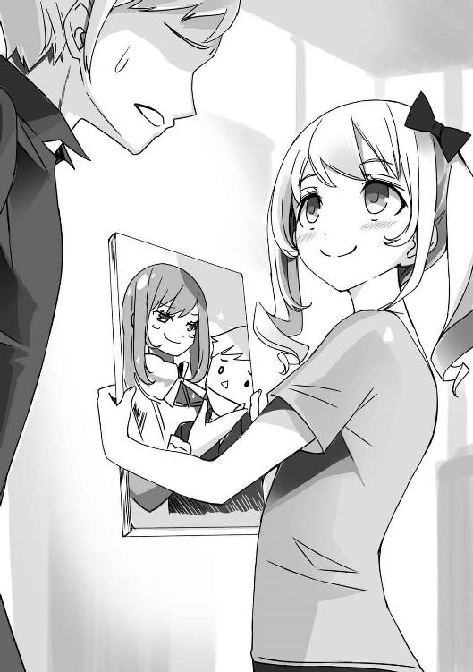
アンジュは、コピー用紙が落ちてないごくわずかな隙間の上で、ぴょんぴょんと跳ねてる。
行き詰まりを打破できて、テンション上がってるんだろうけど。
「やっとネームが進められます！ これも香凛先輩のおかげです！」
「香凛？ いや、これは香凛は関係ないだろ？」
「普通、好きな男の子と他の女の子のデートをセッティングして、つけまわしたりできません！ ましてや後輩を誘うなんて！ 自分が負け犬なところを後輩に見せつけるようなものです！」
「う、うん......そう、かもね......？」
香凛、残念ながらあまり格好いいところは見せられてないみたいだぞ。
「香凛先輩、フェアな勝負のためにワタシを誘ってくれたんです！ さすがサムライの国、義理と人情の渡世なのですね！」
「そうだね」
だいぶめんどくなったので、肯定しておく。
でもこの子、一度日本のことを勉強し直したほうがいいな。
「はー、これでネームはなんとかなりそうです......」
アンジュは、ベッドの上にどさりと腰掛けた。
まだ取っかかりを摑んだだけなのに、と思ってはならない。
いけるときは、些細なきっかけでスルスルいくこともあるのだ。
香凛みたいに、「取っかかりさえあれば上手くいく」なんて願望を持つだけじゃダメなんだけど。
というか、これはまずくないか？
香凛がネームの参考にするためのデートだったのに......。
前進したのは、アンジュのほうだった。しかも、かなり手応えがあったようだ。
ここまでテンションが上がるほどの手応えがあったとなると、デキも相当なものになりそうな気がする。
香凛が取っかかりを摑んだのかまだ聞いてないけど、ハンパなネームじゃアンジュに勝てないかも......。
「どうしました、御門先輩？ 顔が悪いですよ？」
「日本の伝統芸能的ボケをありがとう。いや、なんでもないよ」
ここで俺が心配しても始まらないか......。
まだ香凛の状況もわからないんだしな。
「それじゃ、ネームの邪魔をしたら悪いから俺は戻るよ。頑張ってくれ」
「ハイ、ありがとうございます、御門先輩。あ、それと──」
「ん......？」
部屋のドアノブに手をかけようとして、俺は振り返る。
ベッドに座ったアンジュが、なぜだか真顔をしていて──
「もうわかってると思いますけど、ワタシも御門先輩のこと、好きですから」
「............」
突然の告白。
あまりに聞き慣れた言葉。
相手が妖精のような美少女だろうと、漫画家だろうと、一つ屋根の下で暮らしている相手だろうと、同じことだ。
俺にとっては愛の告白なんて、朝の挨拶くらい日常的なもの。
とんでもないうぬぼれみたいだけど、事実そうなんだから......。
「御門先輩？ 聞こえましたか？ 難聴系主人公はもう流行らないって聞いてます。ワタシもあまり好きじゃありません」
「......そうだな。俺もあまり好きじゃないよ。ああ、そうじゃないな。聞こえたよ」
うん、ちゃんと聞こえた。
わかってる、聞き違いってこともありえない。
「ありがとう」
あまりに言い慣れた言葉。
告白されたら、こう返事をするのが常になってる。
香凛とか藤宮さんとか、数度目の相手だと多少リアクションは変わるけど。
そう、これはいつものことで......いつもと同じように過ぎ去るだけのイベント。
ゆるいラブコメみたいに、イベントは何事もなかったように終わって、人間関係が変わることはない。
「え......？ み、御門先輩......？」
アンジュの整った顔に、驚きの表情が浮かんでる。
その顔が──息がかかるくらい近くにある。
だって、そりゃそうだ......俺は今、アンジュの華奢な身体を抱きしめているんだから。
「アンジュ......」
俺はまだ、この後輩のことをよく知らない。
ハーフで、漫画が好きで、香凛に憧れて漫画家を目指してる女の子。
言葉遣いが少し変わっていて、日本のことを誤解してて、あとは──意外としたたか。
それくらいしか知らない女の子なのに──
俺もアンジュと並んでベッドに座り、彼女を抱きしめている。
銀色の髪からはシャンプーの甘い香りがして、Ｔシャツ越しに慎ましい胸の感触が伝わってくる。
告白された相手に即座に手を出してしまうのは、自分でも止められない、最低な悪癖だ。
でも、これは......なにか違う。
ドクン、ドクン、と心臓が高く跳ねている。
「せ、先輩......」
「ごめん、アンジュ......」
いつも以上に歯止めがきかない。
アンジュが不思議なくらいに魅力的で、自分を止められない。
「あうっ......」
アンジュが小さな悲鳴を上げた。
俺は、アンジュをベッドに押し倒し──Ｔシャツの裾から手を滑り込ませる。
「ひゃううう......」
さらに、アンジュが変な声を出す。
こっちも思わず声を出してしまいそうになった。
アンジュは、Ｔシャツの下にブラジャーを着けていない。
慎ましい胸の柔らかさと、頂点の突起の感触がダイレクトに伝わってくる。
「あふっ、んっ......せ、先輩......ダメ、ですよ......」
「そうだよな、ダメ......だよな......」
こんなことが、許されるわけがない。
夜中に、女の子の部屋に入り込んで、告白されたのをいいことに押し倒して。
この小さな胸を弄んだりとか、絶対にやっちゃいけないのに。
「いけません、こんなこと......先輩、せんぱぁい......」
「アンジュ......」
可愛い後輩の甘い声に、ますます興奮が高まってしまう。
アンジュもダメだと言っているのに、まるで逃れようとしていない。
それどころか......俺の背中に腕を回してきている。
ますます、俺たちは密着してしまい、アンジュにのしかかるような体勢になる。
急展開に頭がついていかないけど、もうなにも考えてないのかも。
いや、考えてたらアンジュにこんなことはできないよな。
「うああ、御門先輩......ワタシ、こういうの、経験、なくて......」
「わかって......る......」
もう、二人揃ってまともに声が出てこない。
俺はアンジュの身体をさらに強く抱き、胸に優しく触れて──
二人の身体は、とけるようにまざり合っていく。
７ 新たなる宿敵
「あらら、ひどい顔をしてますね、御門君」
「............」
翌朝、歩沢の部屋。
歩沢がここに住むようになってから、食事はだいたいこの部屋でとっている。
俺の部屋や応接室は物が多いし、歩沢の部屋は物が少なくて、部屋の主も人を招き入れることに抵抗がないらしいから。
今朝も、こうして歩沢の部屋で朝食をいただいている。
小さなちゃぶ台に、料理が所狭しと並んでる。
メニューは、白いご飯に白菜と油揚げのみそ汁、アジの開きに卵焼き、ほうれん草のごま和え、ナスの漬け物。
漫画とかではよくあるけど、こういうメニューを朝から用意するのは大変だろう。
一人暮らしだった頃は、特に朝食なんて適当だったけど、こんなちゃんとした飯が食えるのはありがたい。
ありがたいんだけど......。
「食欲ないな......」
「女の子はつまみ食いするのに、わたしの料理は食べられないんですか？」
「............っ！」
思わず、びくんと身体が強張ってしまう。
ああ、身体は正直だな......。
「思った以上の面白い反応ですね」
俺の正面に座っている歩沢は、にこにこと笑みを浮かべている。
「そういえば、どういうわけかアンジュちゃんが来ないんですよね」
「そ、そうなのか」
もちろん、アンジュが千歳荘に来てからは、たいてい食事をともにしてる。
そのアンジュの姿が今朝は見当たらない。
おかしいな、どうしてアンジュさんは美味しい朝ご飯を食べないのかなあ......。
「歩沢は性格歪んでるけど、料理は上手いのになあ......」
「こらこら、心の声がダダ漏れてますよ」
笑みを浮かべたまま、歩沢が箸を手に取って「いただきます」と礼儀正しく言った。
俺も同じようにしてから、アジの開きに手をつける。
食欲はなくても、せっかく用意してもらったんだからな......。
「うん、美味い。絶妙の焼き加減だなあ。おっ、このみそ汁もしみる味だ」
「御門君はちゃんと感想を言ってくれるのが嬉しいですね。できそうで、なかなかできないことですよ。オーラとか関係なく、モテ要素じゃないでしょうか」
「そうかな......？」
食事をつくってもらった人には感謝の心。
俺、お坊ちゃん育ちだから変なとこで礼儀正しかったりはする。
「ま、その程度ではわたしのハートはキャッチできませんけど。ましてや、いつものようにヤリ捨てるなんて」
「そんなことしてません！」
俺がやってきたのはセクハラ程度で！
「わたしは見てのとおりの敗北を知らない巨乳、地味系男子が大好きな黒髪ロング美少女ですからね。一回だけでヤリ捨てるのはもったいないですか」
「回数の問題でもなくて！」
あああ、朝からいったいなんの話をしてるんだ......。
「アンジュちゃんも一回で済ませるのはもったいなくないですか？」
「まあ、そりゃ......って、違う！ ヤってないから！」
そうです、俺はアンジュと最後の一線は越えてない。
ベッドに押し倒して胸に触っちゃったけど、そこまで。
それ以上のことは、漫画の神様に誓ってもやってない。
漫画だったら、押し倒したところで次回に続く！ になるような場面だったけど、次回ではやっぱりヤりませんでしたガッカリーって展開だ！
ああああ、俺はなにを言ってるんだろう。
「って、待て。なんで俺とアンジュが──って疑ったんだ？」
「わたしも二階に住んでるんですよ。人の出入りがあったら気づきますよ。アンジュちゃんもわかってるはずですけど」
「............」
うん、実は俺だってわかってる。
この千歳荘は古さの割にしっかりしてるけど、廊下を人が歩けば気づくし、ドアを開け閉めする音もけっこう響いてくる。
耳を澄まさなくても、同階の部屋の音なら少しは聞こえてしまう。
香凛が円盤とゲームの部屋に泊まってるときとか、物音どころか香凛が独り言で俺への悪口を言ってる声が聞こえてくるもんなあ......。
「でもまあ、よく我慢できたものですね。あなたはもしかして本当に不能なんですか？」
「またその話か！」
恐るべきことに、聖風館学院では〝御門駿介不能説〟が流れているらしい。
俺が毎日のように告られて、セクハラするくせに一線を越えようとしない。
そのことが学院中に知られているから、疑われるのも無理ないけど......。
美少女揃いの聖風館学院で、可愛い女の子たちに言い寄られて手を出さないなんて、それこそラブコメ主人公でもない限りありえないよな。
「......アンジュに手を出さなかったのは別に変な話でもないだろ。あの子は中学生なんだし、ぶっちゃけ香凛と比べればスタイルもまだ子供みたいなもんだし......」
「ああ、そうでしたね。御門君は学院内のことに疎いですもんね。わたしのことも知らなかったくらいで」
「ん？ なんの話？」
「やっぱり、御門君は知らないんですか」
「いやだから、なにを？」
俺の疑問に、歩沢は少し笑ってからみそ汁をすすり──
「アンジュちゃん──サキュバス、って呼ばれてるらしいですよ」
「サキュバス......？」
確か、夢魔とも呼ばれる悪魔の一種だったっけ。
眠っている男を襲い、ヤっちゃうとか......。
色気たっぷりで、全裸みたいな格好で現れて誘惑してくるとかいう、大変にけしからん存在だ。
ちょっとエロい系の漫画やアニメにも時々出てくる。
「どっちかというと、アンジュは悪魔より妖精とか天使とかじゃ......」
「よくそこまで臆面もなく女の子を褒められますね」
「......いいだろ、本人は聞いてないんだし。それより、なんなんだ、そのあだ名は」
「御門君やわたしのことはほとんどの生徒が知ってますけど、アンジュちゃんのこのあだ名は、男子生徒しか知らないらしいですね。それも男子全員ってわけじゃないみたいで」
「アンジュを変な目で見てる奴らの間で使われてるってことか？」
本人は嫌がるだろうけど、アンジュはあの可愛さだからなあ。
変な目で見てしまっても、男としては責められないっていうか。
「というより、アンジュちゃん、妙に色っぽいんですよ。スタイルはまだ子供みたいなのに、時々凄くエロくなるとか」
「........................」
なんだろう、凄く思い当たることが......。
「アンジュちゃんを知ってる男子生徒はみんな、一度はあの子が出てくるエッチな夢を見ちゃってるらしいです」
「そ、それがサキュバスの由来か......！」
夢に出てきた同級生とエロいことをしちゃう......。
それも、お年頃の男の子なら別に不自然でもないことだろう。
「まあ、なんというか......アンジュちゃんは恋愛対象というより肉欲をぶつける相手って感じみたいですね」
「おいおいおいっ！」
ずいぶんぶっちゃけてくれたな！
「わたしが言ってるんじゃないですよ。アンジュちゃんのことを調べたとき、何人かの男子生徒が教えてくれたんです」
「......そいつら、よくそんなことを女子のおまえに話したな」
「だいぶ言いよどんではいましたけどね。そんな思わせぶりな態度を取られたら、それはもう徹底的に追及したくなるじゃないですか」
にこーっ、と極上の笑みを浮かべる歩沢さん。
この笑顔で迫られたら、男子中学生なんてひとたまりもない。
たとえ同性の親友にでも話せないことも、白状しちゃうかも......。
そもそも歩沢はしつこそうだし、腹黒いし、香凛を堂々とかませ犬にしようとしてたりとか、まるで悪の化身だもんな......。
「なにか失礼なことを考えてることは不問にしてあげましょう」
「......アリガトウゴザイマス」
思いっきり頭の中を覗かれちゃってるが、今さらその程度では驚かない。
「ただでさえ手癖の悪い御門君ですもんね。サキュバスに告られちゃったらどうなるんだろうとワクワクしてましたよ」
「そこに期待してたのか！」
そういうことか、サキュバスってあだ名を知ってて俺に教えなかったのは！
歩沢が願っていることは、ただ一つ──俺が変わること、だ。
恋愛感情を持っていない歩沢は、誰かに恋することを望んでいる。
そして、恋する相手としてもっとも有望なのが俺で──
なにもせずに異性を引きつけるという、あまりに特殊すぎる性質を持つ俺に期待しちゃった──っていうのは、まあわからないでもない。
だけど、このままじゃやっぱり好きにはなれない。
だから、好きになれる御門駿介になるように。
歩沢は、香凛をかませ犬として扱ったり、あるいは俺が誰かを好きになることを望んでる。
俺もまた──女の子に恋をしたことがないからだ。
たぶん、俺と歩沢は凄く似てる。
惹かれ合うものも、どこかにある。
だからこそ、歩沢は希望を託す相手として俺を選んだわけだ。
でも......。
「あのな、アンジュは中学生だぞ。それも、留学してきてる子だ。不安定なあの子をけしかけるようなマネは──」
「わたしは、誰もけしかけたりしませんよ。香凛ちゃんのときだってそうだったじゃないですか」
「............」
それも、確かにそのとおり。
かませ犬になるというのは、香凛が自分から言い出したことだ。
歩沢は香凛がそんなことを言ってたなんて、知りもしなかっただろう。
たまたま、歩沢の狙いどおりに香凛が動いたというだけ──
そこに疑いの余地はないんだけど、なぜか俺は歩沢のてのひらで踊らされてたような気分になってる。
被害妄想と言われたらそれまでなんだけど。
「あとですね、御門君」
そう言ってから、歩沢は卵焼きを口に放り込み、もぐもぐと丁寧に嚙んでから。
「中学生とか高校生とか、ましてや子供とか大人とか関係ありませんよ。恋をしたら、相手の立場なんて関係ない。そういうものじゃないですか？」
「......おまえ、恋愛感情ないって割に、わかったようなこと言うよな......」
「一般論としては理解してるんですよ。ただ、自分にそういう感情がないだけです」
「まったく......なにもかもがおかしい。俺もだけど」
一番悪いのが俺なんだよなあ。
なにもしてないのに女の子を引きつけて、挙げ句の果てにはセクハラを働く。
それこそ、相手が誰だろうとおかまいなしだ。
その例外になっていたのは香凛だったけど、ついこの前香凛にもセクハラ──じゃないけど、一線を越える手前までいっちゃったし。
......なんか、歩沢の思惑どおり、俺は変わっていってる気がする。
ずっと、十八年間変わらなかったものが、漫画家になっても変わらなかった俺という存在が変わりつつある。
この、歩沢ひびきという女の子の登場とともに。
そこに、香凛のかませ犬宣言や、アンジュのサキュバス体質まで絡んで、もうなんというかすっかりカオス状態だ。
このままでいいのか──はっきり言って、俺は流されてるだけだ。
香凛をかませ犬にして、歩沢のことが気になって、アンジュの色香に惑わされて。
ついでに、一度は捨てたペンまでまた手に取ってしまってる。
「おかしくたっていいじゃないですか」
「え？」
歩沢は、いつの間にか料理を綺麗にたいらげていた。
「ごちそうさまでした。おかしくたっていいって言ったんですよ。あなた自身も、あなたの周りもずっとメチャクチャだったんです。それがもっと混乱したからってなんだっていうんです？ 御門駿介の人生はラブコメなんですから、メチャクチャになるほど楽しいんじゃないですか」
「お、おまえなあ、他人事だと思って......！」
ラブコメは大好きだし、俺がラブコメの登場人物みたいなのも間違いないよ。
だけど、大変な目に遭うのは俺だけじゃないんだからな。
香凛は世界で一番大切な幼なじみだし、アンジュは可愛い後輩だし、目の前の腹黒少女だって......惹かれるものがあるのは事実だ。
この女の子たちを苦しめるようなことにはなってほしくない。
「ま、どのみちなにかの区切りはそのうちつきますよ。香凛ちゃんとアンジュちゃん、どっちが連載を獲るんでしょうね？ それに、あなたの読み切りもどうなるんでしょう」
「......俺の読み切りは、たいした問題じゃないだろ」
最近ドタバタしてた割に作画はだいぶ進んで、締め切りまでには余裕で終わりそうだ。
香凛と歩沢をモデルにした、かませ犬とラスボスのラブコメ──
これは一本描いて、それでおしまいだ。
俺は──寿賀右輔という漫画家はとっくに終わってるはずで、その残りカスを無理矢理引っ張り出すだけだ。
そのはずだ......。
「............」
朝食を食べ終えて、自室に戻る。
結局、アンジュは朝食の席に姿を現さなかった。
あんなことがあったわけだし、俺としては正直少しほっとしたんだけど......。
「......って、ダメだよな」
逃げてばかりなのが、まずよくない。
どうせ変わるならいい方向に変わらなきゃ、意味がない。
歩沢の恋愛対象になるかどうかは置いておくとしても、普通に好きになってもらえるくらいの人間にならないと。
可愛い後輩が、なぜか朝食の席に姿を見せなかった。
様子を見に行くくらいのことはしておこう。
部屋のドアを開け、廊下を進んでさっき下りてきたばかりの二階へ。
一番奥の部屋の前に立って、ドアをノックする。
「アンジュ、アンジュ。ちょっといいかな？」
呼びかけてみたけど──返事がない。
おかしいな、もう登校したってことはなさそうなんだけど......。
まだ寝てるならいいけど、もしかして昨夜のことがショックでベッドから起き上がれないとか......。
「ア、アンジュ。いいか、入るぞ？ 入っちゃうぞ？」
もしショックを受けてたら俺が顔を出さないほうがいいだろうが、このまま放ってもおけない。
歩沢に様子を見てきてもらうっていうのも、なんだか無責任だ。
意を決してノブに手をかけ、ドアを開く。
「アンジュ、ごめん！ とにかく俺が悪かっ──」
とりあえず謝ってしまおうと、姑息なことを考えつつ、ドアを開けるとそこには──
「アンジュ......？ おまえ、なにを......？」
「............」
アンジュは机に向かって、一心不乱に鉛筆を走らせていた。
彼女が描いているのはコピー用紙じゃなくて、原稿用紙だった。
「アンジュ......」
「ごめんなさいです、御門先輩。今、いいところなので鉛筆を離せません。大変失礼至極と存じますが、このままでいいならお話しできます」
「は、はぁ......」
アンジュは、まったくこちらに目を向けようとしない。
首が固定されてしまったかのように、原稿用紙を睨みつけ続けている。
アンジュは、アナログ作画らしい。父親が画家だっていうし、ペンと紙が慣れているのかもしれない。
ああ、そんなことは今はいいとして──
「それ......原稿だよな？ 連載用のやつか？」
「ハイ」
「いや、連載用はネームだけでいいんだろ？ 完成原稿じゃなくて」
「ハイ」
「............」
連載用のネームは３話分つくって担当に提出し、チェックを経てからＯＫが出れば編集会議に出され、そこで編集長以下の編集部のみなさんの間で審査を受ける。
新人の持ち込みとかなら、ネームではダメで、仕上げまできっちり済ませた完成原稿じゃないと見てもらえない。
でも、連載の審査はネームだけでいいはずだ。
そもそも、編集会議にネームを出してもらえる漫画家なら、それなりに作画の技術はあるからだ。
ネームの提出は数回に及ぶことも珍しくないから、いちいち原稿に仕上げてられないというのもある。
「なにも、原稿にしなくても......」
「原稿にしちゃいけないとは言われていません」
ずばっ、とアンジュは当然のことのように言い切った。
う、うーん......確かに原稿のほうが読みやすいけど、それだけでネームで出してきた漫画家よりも評価が高くなるなんてことはないだろう。
アンジュだってそれくらいわかってるはずなのに......。
「下描きが終わったら、ペン入れも仕上げもやります。完成原稿を３話分描いて、猫村さんに見てもらいます」
「ネームもまだ見せてないんだろ？ それじゃ、効率が悪いんじゃ......」
猫村が台詞やコマ割り、お話そのものがダメだと言ったら、ペン入れも仕上げも無駄になってしまう。
「わかってます。でも、ワタシ自分を止められないんです。昨日の夜から身体が熱く燃え上がって、原稿にこの熱を伝えないとおさまらないんです！」
「............」
アンジュは冗談を言ってるんじゃないんだろう。
それどころか、怖いくらいに真剣だ。
「御門先輩のおかげです」
「え？ お、俺......？」
「ひびき先輩とのデートで取っかかりを摑んだのに加えて、もう最初から最後まで描くべきものが見えてます！」
「そ、そうなの......？」
取っかかりだけじゃなくて、さらにアンジュを前進させるなにかが起きたのか？
ロケットスタートできた上に、さらにブーストがかかったの？
「ワタシがなにを描くべきか、なにを描きたいかはっきり見えてきました！ もう迷いはありません。コピー用紙も無駄にしません。地球に優しい夢野アンジュ、爆誕です！」
「エ、エコはいいことだな......」
おお、この可憐で儚げな後輩に圧倒されてしまってる......！
「というわけで、冥土の土産はおしまいです！ 集中したいのでゲット・アウト・ナウ、ですよ！」
「ええええ......」
今聞かされてた話って、冥土の土産だったの!?
いや、そりゃ集中したいって言われりゃ出て行くけどさ......。
「え、ええと......俺がその、押し倒したりしたから......？」
「あの夜は忘れない」
「その反応、おかしいから！ 答えにもなってないし！」
と突っ込んではみたものの、アンジュはもうなにも反応しなかった。
角度のせいで、アンジュがどんな絵を描いてるのかまでは見えない......。
いったい、なにを描いてるんだ、アンジュは......？
「見ちゃダメ！」
「わっ」
俺が原稿を覗こうとしたのを素早く察して、アンジュが机に覆い被さるようにする。
完全に集中モードに入ったと思ったのに、カンがいいな。
「これは......見せてあげません！ おっぱいなら見せられても、この原稿だけは見せられないんです！」
「そ、そうっすか......」
「おっぱい、見ますか？」
「見ない、見ない！」
昨夜、この手で触れた生のおっぱいの柔らかさ......。
視覚でもその柔らかそうなふくらみを堪能してみたいけど、もちろんそれはダメだ。
「おっぱい見ないなら、今度こそこの部屋からエクソダスですよ！」
「......わ、わかったよ」
どうやらこれ以上は会話になりそうにない。
あと、アンジュを追い詰めるとマジでおっぱいを見せてきそうな気がしてならない。
今は、この妖精のような後輩の異様な色気は感じられないけど、いつまた昨夜のような状況になるか、わかったものじゃないな。
ここは......ひとまず撤退しておこう。お互いのために。
廊下に出て、また自室へ向かう。
この時間なら、まだ遅刻せずに済む。
アンジュはたぶんサボるつもりだろうけど、一年引きこもって留年してる身としては偉そうに注意もできない。
「あら、御門君。お話は終わりました？」
ドアが開いて、制服姿の歩沢が自分の部屋から出てくる。
全個室の防音工事でもしてもらおうかな......祖父さんに金を出してもらって。
盛者必衰の見本、御門家でもそれくらいのお金はあるだろうし。
「大丈夫ですよ、お話の内容までは聞こえてませんから」
「あ、そうなのか。それならよかっ──」
「おっぱいがどうとか」
「思いっきり聞こえてるじゃないか！」
しかも、クリティカルにヤバイ単語が！
「大丈夫ですよ、幸いなことに聞き取れた単語はそれだけです。本当ですよ」
「幸いなのかなあ......」
朝っぱらから女子中学生の部屋に入って、おっぱいがどうとか話してる。
まるで俺が犯罪者にでもなったかのようだよ！
「では、そのあたりについて聞きながら一緒に登校しましょうか」
「変な話じゃないぞ......アンジュがまた、わけのわからんことを口走っただけで......」
とりあえず階段を下りて、一階へ。
「あら、ゴミが」
「っと」
階段を下りきったところで、歩沢が立ち止まった。
落ちていたゴミを拾おうと身体を屈め、俺の脚が歩沢のお尻に当たってしまう。
「ああ、ごめんなさい。つい、ゴミを見ると拾わずにはいられなくて。大丈夫です、まだ御門君を拾おうと思ったことは──どうしたんです？」
「............」
俺は、なにも答えられなかった。
ふと、身体の一部が少しぶつかっただけ。
それだけのことなのに──
「うん、ちょっと......」
意味のないことをつぶやきつつ、俺も階段を下りきった。
なんだろう、なにかが頭の中をぐるぐるしてる。
香凛とベッドで抱き合ったこと、アンジュを押し倒したこと──
さわやかな朝に思い出すようなことじゃないのに......。
そして、俺はなにをしようとしてるんだろう。
「あのさ、歩沢」
「はい？」
俺の部屋のほうへ歩きながら、ふと立ち止まって後ろを振り返る。
やるのか、本当にやるのか、俺？
「ちょっとお願いがあるんだけど......怒らないでほしいんだ」
「はい？」
歩沢は、小さく首を傾げた。
「怒らないでって、胸を揉まれても下着姿を見られても怒らなかったわたしに言ってるんですか？ ふふ、見くびられたものですね！ やれるものならやってみてください！」
「なんでそこで挑戦的になるんだよ......」
まあ、本人がやれるものなら......って言ってるんだし。
いいんだ......よな？
「........................え？」
歩沢がきょとんとして、小さく声を出した。
この反応は、ちょっと予想外かも......。
「御門、君......？」
歩沢の口から、また細い声が漏れる。
俺は、その歩沢の細い身体を抱きしめていた。
背中に両手を回し、甘い香りがする黒髪が俺のすぐ近くにある。
本人曰くの敗北を知らない巨乳が、俺の胸に当たって潰れている。
いい匂いがして、柔らかくてたまらない、それにこの腕にぴったり収まる細さ──
「............」
なにも言葉が出てこない。
抱きしめた身体の感触に、俺の全身が震えてる。
そういえば、歩沢と初めて会った日にうっかり胸を揉んじゃったけど、あのときも痺れるくらい感動したっけ......。
「......これ、なんなんですか？」
「あ、いや......どうしてだろう。急にこうしたくなって......」
「昨日は、散々アンジュちゃんを抱いたのにですか？」
「散々って......だから、そこまではしてな──」
と、言いかけたところで、歩沢がぐいっと俺の身体を押し返した。
ちょっとびっくりするくらい、歩沢の腕には力が入っていて──
「ばか」
歩沢がぽつりと言ったのと同時に、頰に衝撃が来た。
「............え？」
理解するまでたっぷり三秒以上かかった──と思う。
歩沢にビンタされたのだと。
「ばか、ばか、ばか......ばかっ......！」
「あ、歩沢......？」
歩沢は顔を真っ赤にして、目に涙をためている。
正直なところ──このリアクションはまったく想定してなかった。
歩沢なら、「これでお給金上乗せを要求できますね」とかクールな反応をしてくれると思ってたのに。
「あ、歩沢。ごめん......」
「............っ」
歩沢はくるりと身を翻し、小走りに廊下を走っていって、玄関から外へと出てしまう。
俺は──追いかけることもできなかった。
ま、まずい......セクハラしてもずっと不問にされてきたからか、女の子への甘えがあったのかもしれない。
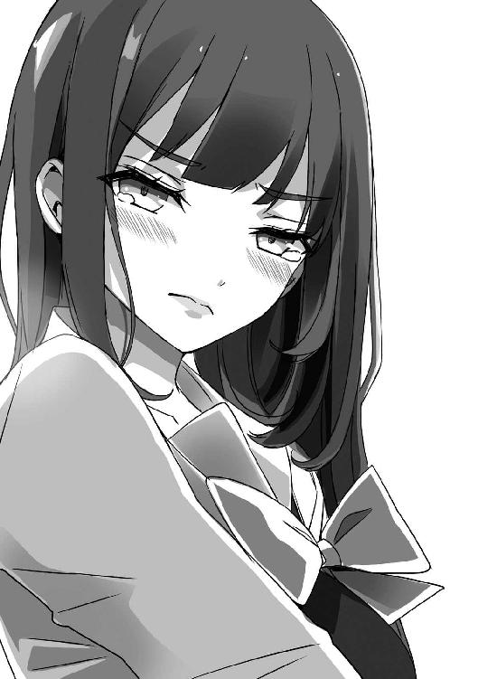
触れても抱きしめても、誰からも怒られないなんて......。
歩沢は俺に告白してない。俺のことが好きなわけじゃない。
だから、あんなことをしちゃいけなかった──当たり前のことなのに。
「なに......してるのよ」
「............っ」
突然の声に、俺はびくりとしてしまう。
応接室から、見慣れたポニーテールの女の子の顔が覗いていた。
香凛──いつの間に、来てたんだ？
「あたし、まだネームに詰まってて......デートはイラッとしただけで、いまいち参考にならなくて......というか、駿介もひびきも殺したくなったくらいで......」
「誰の得にもなってないな......」
つい、突っ込んでしまう。
ああ違う、アンジュにはおおいに参考になったんだっけ。
「昨夜なんて、一睡もできなくて。駿介に相談に乗ってもらおうと思ったんだけど......」
「............」
見てたのか、なんて訊く必要はないようだ。
香凛の泣きそうな顔を見ていれば、俺が歩沢を抱きしめたところを目撃したのは一目瞭然だ。
いくらかませ犬を自称したり、デートを勧めたりしたって、俺が他の女の子と抱き合ってるのを見て、ショックを受けないわけがない。
「ホントにバカよ、バーカバーカ！」
「わっ、か、香凛......っ」
香凛はいきなり俺に飛びつくようにして抱きついてきてから──
両手を俺の背中に回し、背骨が折れそうなほど強く力をこめてくる。
「おっ、おい、香凛、なにして......」
「ひびきの感触を上書きしてるの！ これくらいやらせなさいよ！」
と、何十秒か俺の身体をへし折る勢いで抱きしめてから。
香凛もまた、身を翻して歩沢と同じように廊下を駆けて玄関から出て行った。
「........................」
なにしてるんだろうな、俺。
歩沢も香凛も傷つけてしまった。
自分でも理解できない、得体の知れない衝動に襲われた、というだけで。
これじゃ、理性が働いてないじゃないか──
「............ああ、もうっ」
本当に、歩沢と香凛が言うようにバカだな、俺は。
どうすればあの二人に許してもらえるのかも、思いつかない。
これは、とりあえず──
俺はズボンのポケットからスマホを取り出し、番号を呼び出してコールする。
「......あ、おはよう。朝早くにごめん。起きててよかった。え？ 寝てない？ ああ、そうか......」
電話口の向こうからは、不機嫌そうな声が聞こえてくる。
また怒らせてしまったかもしれないけど、この人なら多少怒らせても気にならない。
「猫村さん......悪いんだけど、原稿の締め切りって延ばせる？」
８ 喪失、あるいは再生の日
数日が過ぎた。
この何日かで気温はぐんぐんと上昇を続け、真夏のような暑さが襲ってきている。
もう聖風館でも冬服を着てる奴はさすがにいない。
俺も、半袖のワイシャツに薄いズボンという夏服だ。
作業の邪魔になるので、ネクタイだけは外してる。
「おー、もうすぐねー。なんとか間に合いそうじゃない」
突然、背後のドアが開いてのんきそうな声が響いた。
ウェーブのかかった長い茶髪に、まあ美人と言っていい顔立ち。
襟ぐりがむやみに広く、胸の谷間もあらわな赤いカットソーに、タイトなデニムスカート。
首からはスマホと社員証が入ったケースを提げている。
猫村ネネ──漫画雑誌『月刊少年オーディン』の編集者にして、俺の担当だ。
未だ年齢は不明だけど、俺が中学生の頃に既に編集者だったんだから、どんなに若くても二十代後半だ。
できれば、年齢にふさわしい落ち着きを持ってもらいたい。
「いやほら、二十代後半なんてもう立派な大人だよな」
「なんなのかにゃー、いきなり？」
「......ああ、なんでもない」
つい、心の声が表に出てしまった。
最近、あまりまともに人と話してないからかもなあ。
「ふーん、先生ってたまにいらんこと言うよね。別にいいけど。とりあえず、仕事進んでてほっとしたわー。わざわざ会議室を貸してあげてるのに、これで原稿落としましたじゃシャレにならんですよー」
「......大丈夫だよ、たぶん」
そう、ここは猫村が勤める出版社の会議室──の一つ。
普段はあまり使われてなくて、倉庫代わりにもなってるらしい。
部屋の隅には古そうな段ボールがいくつも積まれ、壁には俺が生まれる前に完結した古い漫画のポスターが貼られている。
中央には大きなテーブルが置かれ、俺はそこに向かってペンを走らせているところだ。
要するに、出版社にカンヅメになって漫画を描いている最中なのだ。
「エアコンも効いてるし、すぐそこの廊下に自販機もあるし、いい環境だな」
「あとは社員食堂があれば完璧なんだけどねー。毎日コンビニのお弁当か、安い居酒屋ばかりなのよ。もっと女子力高そうな食事がとりたいわー」
「女子力高い食事ってどんなんだ？」
意味不明な枕詞がついたパスタとかサラダとか？
「今度、じっくり教えてあげるわ。でも、自分からカンヅメを言い出すなんてちょっと意外だったわねえ」
「集中したかっただけだよ」
とは言うものの、それは噓ではないが、事実とも言い切れない。
先日の、千歳荘の廊下での一件で──
歩沢とは顔を合わせにくいし、香凛ともぎくしゃくして避けてしまっている。
一応、学校には通ってるけど、千歳荘には帰ってない。
漫画の道具と最低限の着替えだけ持ってきて、この会議室で寝袋を使って寝泊まりしている。
まあ要するに......歩沢と香凛から逃げてきたわけだ。
ああ、我ながら情けない......情けないけど、仕事するしかない環境のせいか、作画作業だけははかどってる。
ちょっとした理由で締め切りを延ばしてもらったけど、その必要はなかったかも。
「ふむ、いい感じなんじゃないの？」
「っと、まだ見ちゃダメだ。見るのは完成してから！」
俺は、慌ててテーブルに並べていた数枚の原稿を身体で隠す。
「......なによ、ケチねえ。たまーに完成前の原稿見られるの嫌がる漫画家さんっているのが不思議なのよね」
「別に変じゃないだろ。俺の場合は......そうだな、完成前の原稿見せてケチをつけられるのが嫌なんだよ」
「あら、そんなことがあったのかにゃ？」
「あったよ！ つーか、ケチをつけたのあんただよ！ 『少年ビート』でも『オーディン』でも俺の担当はあんただけなんだから、他にいないだろ！」
残念ながら、俺の漫画家のキャリアはこの猫村という担当と常に二人三脚だった。
以前、俺が引きこもって週刊連載をしていた頃、ちょっと原稿が遅れて──
様子を見に来た猫村が、構図が気に入らないから保留にしていた原稿を勝手に見て、ダメ出しをしたことがあった。
原稿の遅れで自分でもイラついてた俺は、「これから直すとこなのに！」と八つ当たり気味に怒ったんだけど──猫村は、忘れてるらしい。
「まあ、気になるところがあったら口に出しちゃうのが編集なのよ。というか、私がダメ出しするなんてレアなんだから、むしろ喜ぶべき？」
「ダメ出しがレアな編集って......」
とてつもなく作家をダメにしそうな匂いしかしません。
「まあ、いいや。とりあえず、ペン入れはもうすぐ終わるよ。前半は仕上げも済ませてあるし、あともうちょっとだ」
「あともうちょっと、か......」
猫村は、俺の隣の椅子に腰掛けて、ふうーっと長いため息をついた。
「なんだよ、そのいかにも怪しんでますって言い方は？」
「あともうちょっと、っていうのは編集が信じちゃいけない言葉のトップ10に入るわ」
「......なんかわかる気がするのが嫌だ」
でも、俺の「もうちょっと」は噓じゃない。
実際、ペン入れまで終わってしまえば、あとはさほどの作業じゃない。
俺の漫画はそれほど画面が重くない。
要するに、ベタやスクリーントーンを多用しないってことだ。
全体にすっきりした、原稿をぱっと見ると白いところが多い感じに仕上がることが多い。
「あともうちょっと、って言われてそのあと三日間上がらなかったことがあったわー」
「遠い目をするなよ......つか、三日も上がらなかったら落ちたんじゃないか？」
落ちる、とは原稿が間に合わずに雑誌に載せられないということだ。
「その人、いつも進行ヤバかったから、かなりデッドより早めの締め切り教えてたのよねー。そうじゃなかったら死んでたわ、やばかったわー」
「......そうっすか」
連載漫画が休載っていうのは珍しくないけど、読者が知らないところで大人たちが胃をキリキリさせ、時にはえげつない駆け引きをしているのだ。
いやあ、連載っていうのは人間関係を荒ませるね！
もちろん荒まない場合もあります。個人差があります。
「とにかく、俺の原稿は大丈夫だから。締め切りも問題ないんだろ？」
雑誌の宣伝にも使うらしいので、今回の読み切りの原稿は少し早めに設定されている。
「締め切り延ばしてくれって言われたときは一瞬心臓止まりそうになったけどにゃー。なんせ、うちの公式ＨＰで寿賀右輔の新作読み切りの予告は打っちゃったし。ネットで序盤数ページを先行公開って企画も上げちゃったし。まとめサイトとかでけっこう盛り上がったみたいよ？」
「マジで？」
それは知らなかった......。
俺、ネットでエゴサーチのたぐいはまったくしないからな。
ここ数年描いてなかったから、サーチする必要もなかったけど。
「そりゃあ、大ヒット作の『ルート』を一年で完結させて、何年も消えた漫画家状態だった寿賀右輔の新作だもの。来月号は、すぐに書店から姿を消すかもね」
「そこまでじゃないだろ......」
どちらかというと、忘れられた作家かと思ってたのに。
漫画家が消えちゃう、というのは残念ながら珍しいことじゃない。
売れなかった作家さんが消えちゃうのはまだわからなくもないけど、大ヒットを出した先生が音沙汰もなくなっちゃうこともけっこう多い。
漫画業界って変なところだよな......。
「期待されてるんだよ、先生。是非是非、読み切り第２弾、さらに続いて新連載をどーんと！」
「できるか、そんなこと！」
あくまで今描いてる読み切りは、猫村との取引の結果、やることになっただけだ。
漫画家、寿賀右輔はとっくに燃え尽きて──灰になった。
今はなんとか、無理矢理に火をおこして灰を燃やしてるというだけだ。
「編集長も期待してるんだけどにゃー。それに......」
「............？」
猫村が、ずいっと身体を寄せてきて、ふわりと甘い香りが漂ってくる。
うっ、この人、性格はアレだけどけっこう美人だし、スタイルもいいんだよな......。
こんなのでも一応大人だから、聖風館の女の子たちにはない色気が......。
「一度はほとんどできてた原稿を、締め切り延ばしてでも描き直したいなんて、やる気が出たからじゃないのかにゃー？」
「......世の中に出すからには、少しでもいいものにしたいだけだよ」
俺は、歯切れ悪く答えてしまう。
きっぱり言えなかったのは、猫村の色香に惑わされてるからじゃない。
自分でもいまいちわかってないけど......やる気の問題でもないかもしれない。
アンジュの凄まじい画力に、こんな俺でも少しは持ち合わせてる負けず嫌いの心に火がついた、というのはある。
あの絵、本当に凄かったからなあ......。
「アンジュの絵、十四歳とは思えなかったな」
「あっ、癒師天使先生──アンジュ先生の絵、見たの？ あの子の絵って、漫画というより１コマ１コマが〝イラスト〟って感じよねー」
「............」
しまった、また口に出してた。
「漫画の絵は綺麗なだけでもダメなんだけどねー。アンジュ先生は、その辺がちゃんとわかってるわ。最初にネームを見たときは、どうかなあって思ったけど、さすがは大の漫画好きなだけあって、心得てたわねー」
「......単純な画力なら俺より上かもな」
「大丈夫、猫村さんは先生の絵のほうが好きよ。今のところは、だけど♪」
「そうっすか」
きっと、アンジュが俺以上の売れっ子になったらあっさり順位は入れ替わるんだろう。
実力がものを言う世界なんだから、当然のことだ。
「ふーん、先生にはいろいろあるみたいね。寿賀右輔だけじゃなくて、御門駿介としてもってことかしら？」
「......つーか猫村さん、あんた邪魔しに来たの？」
作画作業中の漫画家にべらべら話しかけるのは、いいこととは言えないのでは。
「とんでもない。でも、なつかしいわねえ。『ビート』の頃はこうやって、先生とおしゃべりしながら原稿描いてもらってたわねー」
「そういや......」
すっかり忘れてたけど、確かに猫村は作画中にちょいちょい訪ねてきては、雑談をして帰って行ってた。
連載中に顔を合わせてたのは家族を除けば猫村だけだった。
猫村との会話はイラッとすることもとてもたくさんあったけど、実は気分転換になってたのかも。
「ま、おしゃべりならいつでも付き合うわ。先生の様子を見ると称してサボれるしね！」
「人をダシにするな！」
「あら、先生も仕事をダシにここに逃げ込んできたんじゃないの？」
「............」
これだ、これなんだよ。
猫村は、本当に油断できない相手だ。
普段はバカみたいに見えるくせに、驚くほど物事を見通している。
これで意外とヒット作を何本か出してるのは、このあたりに理由があるのかも。
「さーて、作家さんとの打ち合わせがあるから、お姉さんはちょっと席を外すけど、寂しくなったらいつでも電話してね。んー、ちゅっ」
「おおいっ」
猫村は立ち上がると、いきなり俺の頰にキスしてきた。
悔しいけど、柔らかい感触に、ドキリとしてしまう。
「あ、あんた......担当が漫画家にそんなことしていいのか!?」
「いいわけないでしょ！ バレたらクビよ！ でもバレなきゃやるわ！」
「胸張って言うな！」
「あ、胸触りたい？ ちょっと待ってて、今ブラを外すから......」
「外さなくていい！ さっさと打ち合わせ行ってこい！」
「はーい、仰せのままに。でもマジで、行き詰まったらちゃんと連絡してね」
「......ああ」
俺が頷くと、猫村は性懲りもなく投げキッスなどして会議室を出て行った。
あー......頰がなんか熱い......。
くそっ、なにもかも忘れて作業に没頭しようとしてるのに、余計な刺激を与えてくれやがって。
でもセクハラの鬼だった俺が、頰にキスされたくらいで怒るのもな......。
「............でも、あれはセクハラなんかじゃなかったよな」
目の前の原稿を見ながら、ふうっとため息をつく。
猫村には、この原稿はまだ見せられない。
自分でもまだ戸惑っているからだ。
「ううーん......」
明らかに、『ルート』の頃の絵とは違う──
連載終了から二年以上経ってるし、絵柄が変わっても全然おかしくはない。
描いていれば当然絵の描き方は変化していくし、ブランクがあってもやっぱり変わってしまう。
でも、ついこの前原稿を描き始めたときは、以前の絵柄とたいして変化はなかった。
なのに──
ここにある絵は、なんというか身体の描き方が違う。
香凛とベッドで触れ合い、アンジュを押し倒し──歩沢を抱きしめた。
それらの影響なのは間違いないだろうが、女の子の身体が明らかに肉感的というか......。
自分で言うのもなんだけど、絵なのに抱きしめたくなるような形になってるんだ。
その変化に自分でも戸惑ったから、締め切りの延長を頼んだんだけど......。
「あーあ、これでいいのかな、本当に？」
なんか、香凛みたいになってきた......。
香凛は編集長に路線変更を指示され、自分でも判断しきれないまま描き方を変えて、上手くいかずに結局打ち切りになってしまった。
俺も同じようなことになってるな......。
いやこれは読み切りだから、結果がどうなっても知ったことじゃないんだけど。
むしろ、結果がよければ猫村は嬉々として連載にしようとか言い出すだろうから、受けないほうがいい──なんていうのは傲慢か？
やっぱり、つまんない作品は描きたくないし......ああ、思考が堂々巡りしてばかりだ......。
「もうダメだーっ！」
ペンを投げ出して、そのまま会議室の床にどさりと横になる。
幸い、ここはカーペットが敷かれてるので寝転がっても痛くない。
「はぁ......」
つい、ため息がこぼれてしまう。
歩沢ひびきを抱きしめて──殴られ、「ばか」と罵られた。
もちろん、そのことに文句はない。不思議でもない。殴られて当然だ。
自分で自分を殴ってやりたいくらいだ。
だけど、相手は──歩沢ひびきだ。
どうして彼女は、あのときに限ってらしくない反応をしたんだろう？
いったいなにが、歩沢ひびきをあの行動に駆り立てたのか。
俺は、いったいなにをしてしまったんだろう......。
「どうしてこうなっちゃったんだ？」
「......なにがよ」
「............っ!?」
突然の声に、会議室のドアのほうを見ると──
白いパンツが見えた。
「......これは、香凛のお気に入りのパンツ！」
「パンツで判断しないで！」
そう怒鳴ったのは、やっぱり香凛だった。
ドアのところに香凛が立っていて、寝転がった俺からは制服のミニスカートの中がばっちり見えている。
「......だって、香凛のパンチラを見るなんてしょっちゅうだろ」
しかも、パンツを見ちゃったあとは、これはお気に入りだとか勝負下着候補だとか、本人が丁寧に解説してくれるし。
「パンチラするのは駿介の前だけよ。普段は見せパンはいてるし」
「......仕事細かいな」
香凛はブラウスのボタンを開けて胸の谷間を見せてるけど、それは情報処理部の部室や千歳荘にいるときだけだ。
でもまさか、スカートの下まで俺の前とその他では違っているなんてなあ。
「って、なんで香凛がここに？」
俺は起き上がりながら、今さらの疑問を口にする。
「あたしだって『オーディン』で連載してたんだもの。編集部に来ることくらいあるわよ」
「そ、そりゃそうか......」
「猫村さんと打ち合わせだったんだけど、あの人があっさりあんたがここにいるって口を滑らせたのよ。半分わざとっぽかったけど」
「あの女......！」
猫村も、俺が香凛に会いたくないことは察してただろうに......！
いや、むしろ察してるから情報を漏らしたのか......？
「でも、駿介......」
「ん......？ か、香凛!?」
突然、香凛が両目から、だーっと漫画みたいな涙を流し始める。
な、なんなんだ、いきなり？
「怒ったのはあたしのほうだけど、でも無視しないで......」
「............」
「お願いだから、無視だけはしないで。あたしと顔合わせづらいのはわかるけど、でもあんたの顔が見られないの、一番嫌なの......好かれなくても、かませ犬だろうと、なんでもいいから、毎日駿介と会って話がしたい。こんなとこに閉じこもらないで。ちゃんと、あたしと向き合ってよ......」
「......ごめん」
そう言うのが精一杯だった。
香凛にとっても、歩沢を抱きしめてしまった俺を責めておいて、今みたいなことを言うのはキツかっただろう。
香凛にだってプライドがあるのに、全部かなぐり捨てて俺の顔を見たいだなんて。
でも、香凛はそれを言ってしまうくらい......俺のことが、好きなわけで......。
「ごめん、本当にごめん」
「......うん」
香凛はまだ泣いたまま、こくりと頷いた。
俺はいったいなにをやってるんだろうな。こんなことしか言えないなんて。
アンジュに火をつけ、歩沢を怒らせ、香凛を泣かせてしまった。
その上、みんなと向き合わずに逃げてる。
このままで──いいわけがない。
カンヅメは終わりにすることにした。
猫村には勝手ばかり言うことになってしまったけど、向こうもかなり強引に読み切りを描かせてるんだし、そこはこらえてもらおう。
『原稿さえ上げてくれれば文句はないにゃー。でも、私も今日から会議室で寝泊まりしようと思って持ってきた毛布は無駄になったわねー』
愛すべき我が担当は、そんなことをぬかしてた。
ていうか、危ないところだった。俺と添い寝するつもりだったとは......。
とりあえず、香凛と一緒に出版社を出て。
俺たちは、ホテルへ来ていた。
「......あれ？」
俺は、思わず首をひねってしまう。
出版社から徒歩十分ほどの距離にある、そこそこ有名で立派なホテル。
香凛が制服姿だったけど、なんとか泊まれた......というか泊まれてしまった。
一応、ツインの部屋。もちろん、ベッドが二つ並んでる。
俺はベッドの一つに座って、まだ首をひねっている。
「本当、なにしちゃってるんだろ、俺......」
こんなところにいる理由はごく簡単だ。
香凛が、来たいと言ったからだ。
具体的には──
『やっと会えたのに、なんでひびきが待ってる千歳荘に帰さなきゃいけないの？ バカなの？』
『千歳荘が俺の自宅なんですが......あと、やっとってほんの数日だろ』
『駿介に会えない一日は百年に匹敵するわ......って、この台詞はちょっとくさすぎね。ああでも、逆に新鮮ってこともあるかしら』
『いきなりネームの話になったな。つーか、メモるなメモるな』
と、こんな感じのやり取りがあって。
とりあえず、香凛さんは『今夜は帰したくない』だそうです。
まだ夕方なんだけど。
あと、ついでに猫村との打ち合わせはドタキャンしてきたらしい。
別に俺、逃げないんだから打ち合わせくらいしてくればいいのに......。
「でもこれ、ヤバイよなあ......」
かすかに、シャワーの音が聞こえてくる。
香凛は今まさに、シャワーを浴びているところだ。
今日は暑かったからさっぱりしたい──というだけならいいんだけど。
誰がどう見ても、これから一戦交えますって雰囲気だよな......。
やっぱりヤバイ。
高校生二人で、いかがわしいところじゃないけどホテルにお泊まり。
しかも、香凛の外泊はまずいよなあ......あれでも良家のお嬢様なんだし。
狗我家は御門家とは親戚なので、香凛の両親のことも昔からよく知ってるし、あっちも俺のことは充分知ってる。
香凛が外泊するなら、一緒にいるのは俺しかいないということも即バレするだろう。
ただ、香凛の両親って娘の相手として俺なら文句ないとか言ってる人たちなんだよなあ。
なんなら、孫の名前まで考えてる可能性もあるほど、変なノリの大人たちだ。
怒られて済むならいいけど、挙式の準備でも始められたら......。
どっちだ、説教か挙式か......。
なんだ、この究極の二択！
「............」
でも、ここで帰ろうなんて言い出せない。
香凛の涙を見ちゃったからなあ......。
俺、あいつを傷つけてばかりだけど、さすがに泣かせてしまうと後ろめたい。
会えない一日がどうとかも冗談めかしてたけど、たぶん本気。
それくらいのことは──鈍い俺にだってわかる。
「ねえ、駿介......」
「ん？ って、おいっ!?」
振り向くと、浴室のドアが開いて香凛が顔を覗かせていた。
しかも──髪は濡れたまま、剝き出しの肩からもぽたぽたと滴がこぼれ落ちている。
「お、おまえ、服着てないよな......!?」
「あたし、服着てシャワー浴びる習慣ないもの」
「そりゃそうだよなー......って、そうじゃなくて！ 身体隠せ、身体！」
ドアで隠れてはいるけど、かなりきわどい。
一歩前に踏み出したら、香凛さんの生まれたままの姿があらわになってしまう！
「......なによ、今さら照れなくても。前にもお風呂入ってたとこを覗いたでしょ」
「覗こうと思って覗いたんじゃない！」
千歳荘の脱衣場で歩沢の下着姿を覗いちゃって、ついでにそのとき風呂に入ってた香凛もほとんど裸みたいな格好で飛び出してきたんだった。
香凛の半裸はこの前のベッド・インでも見ちゃったけど、経験があれば照れないってわけじゃない。
「どう、駿介も一緒に入らない？ 会社のしょぼいシャワーばっかりだったんでしょ？ ここのお風呂、広いわよ」
「............」
香凛は、にやにやと笑ってる。
一緒に風呂っていうのは、香凛がよく言う冗談で、何度も何度も耳にしてきた。
もちろん、その誘いに乗ったことはない。
「ついでに身体洗ってあげるわよ？ この狗我香凛ちゃんに洗ってもらうなんて、こんな幸運、世界のどこを探したってないんだから」
「............よし、そうだな」
「ほぇ？」
俺はベッドから下りて、すたすたと部屋を横切って浴室のドアの前に行く。
歩きながらシャツを脱ぎ捨てて、上半身裸になる。
「ちょ、ちょちょちょちょ、ちょっと、駿介!?」
「ほら、そこにいると中に入れないだろ」
「えええぇっ！」
香凛は絶叫しながら、ぴょんと後ろに跳んで、同時に腕と手で胸と下を隠す。
「ホ、ホントに入る気なの!?」
「おまえが誘ったんだろ」
俺はベルトを外し、ズボンも脱ぎ捨てる。
「ま、待ったぁ！ 駿介、せめて下だけは隠して！」
「......ん？」
「そ、それ......ぶち込まれるのはいいけど、見る勇気はないのっ！」
「............」
ぶち込まれるって、またド直球な......。
気持ちはわかるので、香凛に見えないようにパンツを脱いで、タオルを腰に巻く。
「......香凛」
「は、はいっ？」
「今ならまだ引き返せるけど、どうする？」
「............」
香凛は胸と下を隠したまま──
ぷうっ、と頰をふくらませて。
「......いじわる」
裸のまま、俺にぎゅっと抱きついてきた。
剝き出しの二つのふくらみが、俺の胸に当たって潰れてる。
「香凛はいつでも本気だもんな。一緒に入りたいっていうのは......冗談じゃなかったんだろ？」
「......ラブコメ主人公はもっと察しが悪いものよ」
「多少察しがよくても、香凛の誘いは冗談だと思うだろうけどな......」
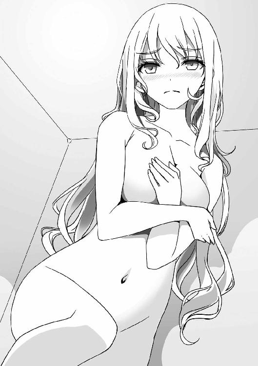
念のためだけど、俺と香凛は幼なじみで親戚ではあっても恋人同士じゃない。
普通、そういう関係の二人は一緒に入浴したりしない。
「で、でも駿介......」
「んん？」
「む、胸で身体を洗うのはまだ待って！ そこまで吹っ切れない！」
「胸で洗えなんて言ってないだろ!?」
香凛の頭の中では、言ったこと以上の妄想が暴走してたらしい。
あと、〝まだ待って〟ってことは時間をかければそのうち実現するのか......。
「はぁ......湯船につかるの、久しぶりだ」
「そ、そう......」
香凛は、恥ずかしそうに身体を小さくしてる。
二人で湯船につかり、香凛が背中を向けて俺の前に座っている。
香凛の白くなめらかな背中が目の前にあって、ブラジャーの跡がくっきり見えるのがなんだか生々しい。
さらに、柔らかいお尻が俺の太もものあたりに当たっている。
「そういや、風呂入ってるときはポニーテールじゃないんだな」
「結んでも長いから......」
香凛は頭にタオルを巻いて、その中に髪をたくしこんでる。
「こんなの取っちゃえよ」
「わっ、こ、こら......！」
タオルを取ると、香凛の長い髪がばさりと流れ落ちる。
「この髪、いいよな。地毛なのに明るくていい色だし」
「あ、あんた、普通にあたしを褒めるの、やめてくれない!?」
「でも、そこは昔からそうだろ」
俺は子供の頃から、何度となく香凛の告白を断ってきたけど、容姿はひたすら褒めてきた。
顔は好みにストライクだし、スタイルも抜群だし。性格も好きなのは言うまでもないけど。
「髪型は昔からずーっとポニーテールだよな」
俺は、香凛の髪を撫でながら言う。
「そ、それは......駿介が言ったんじゃない。あたしにはポニテが似合うって」
「あー、そういえば......言ったかも」
「忘れてた!?」
「男はポニーテールが好きなんだよ！ ポニーテールが嫌いな男子なんていません！」
「わざわざ言い直すな！ ま、まああたしも気に入ってるけど！」
香凛は怒ったように言って、背中をもたせかけてきた。
「うーっ、あたし、なにしてるんだろ......」
「......言っとくけど、ホテルに誘ったのも風呂に誘ったのも香凛だぞ」
「そ、そうだけど、あたしだけのせいにしないでよ！」
「わかってるよ。でもな、たぶん俺だって......」
「ひゃうっ」
俺は、香凛の髪を持ち上げるようにしてから、彼女のうなじに唇をつける。
「何日も香凛に会えないなんて、久しぶりだからな。ちょっと......寂しかったのかも」
「ちょっと、はいらないわよ。今日は少し大胆なのは、そのせい？」
「たぶん......」
今度は、香凛の細い腰に腕を回して抱き寄せる。
タオルは巻いたままだから直接じゃないけど、香凛のお尻に俺のアレが......。
「こ、こら......それ、なんか凄いことになってるわよ!?」
「これで凄いことにならなかったら、俺マジで賢者だよ......」
はっきり言って、抑えつけるとか絶対に不可能。
まだ襲いかかってないのが自分でも不思議なくらいだ。
「むーっ、中途半端に賢者モードなのがムカつくわ......何度も言うけど、あたしの処女、いつでもあげていいのに」
「......最後まで、はダメじゃないのか？ この前は、中断したんだし......」
「あのときは、あのとき。基本的には、あたしはいつでもＯＫなの。一応言っておくけど、あんたがもらってくれなかったら、あたし、天寿をまっとうするまでバージンよ」
「凄い脅しだな！」
こんなに可愛くておっぱいも大きいのに、年老いてこの世を去るまで乙女のままとか。
想像したくもないけど、どんな末路なんだよ......。
「駿介さえその気になれば一分で終わることなのに、場合によってはあと六十年くらい、ずーっとずーっと待ち続けることになるのね」
「なんだそれ、仕返しか!? ホントに風呂に入ってきたことへの仕返しなのか!? あと、一分じゃない......と思う！」
なんだ、このきわどすぎる会話は！
「あー、早く中古になりたい」
「それ、ヒロインの台詞じゃないぞ！」
本当に、香凛はラブコメのヒロインにはなれそうにない。
「......ずっと待ってきたんだから、今さら焦りはしないけどね。でも、そうね......たまには、一緒にお風呂でもなんでもいいし、少しでいいからあたしをもらってよ」
「もらえって......」
たぶん、これも本気なんだろうなあ。
俺がなにもしなかったら、香凛は本当に処女を延々と守り続けてしまうかも。
とはいえ、他の男に奪われたら......俺は自分がどうなってしまうのか、想像もできない。
怒り狂うか、それとも壊れてしまうか。
おっそろしく勝手なことはわかってるけど、たぶん耐えられない。
「じゃあ、少しだけ......」
「はうっ......！」
俺は一度腕を外してから、今度は少しだけ高い位置を抱きしめる。
左腕で香凛の重たい胸をぐっと持ち上げるようにして、さらに右手で彼女の左胸を鷲摑みにする。
ふくらみの圧倒的なボリュームと、先端の乳首の感触までしっかりと伝わってきて──
「うわっ、でかっ」
「はっきり言わないで！ さすがに恥ずかしいわ！」
「いやでも、この前よりちょっとでかくなったんじゃないか......？ まさか、俺が揉んだせいで......？」
「それくらいで大きくなるなら、世の中に貧乳はいないわ......」
なるほど、それもそうだ。
「感想はいいから、もうちょっと、その......強く......」
「......ああ」
俺は、さらに腕に力を込めて香凛を抱きしめ、胸を強く摑む。
「はぁ......でも、よかった......」
「え、そんなにいいのか？」
香凛、そこまで胸が感じるなんて......。
「そ、そうじゃなくて......それもあるけど！ でも、いいのよ！」
「なにを言ってるのかわからないんだが......」
「こんなのばかばかしいってわかってる。一緒にお風呂なんて入っても、なにも意味なんてないのはわかってるのよ。けど、初めてのことじゃない？」
「何度も風呂に入ってたら、さすがにもう六十年待つ必要はなくなってただろうな......」
俺の理性、そこまで頑丈じゃありません。
たぶん、どこかで香凛をマジで襲ってしまってただろう。
「一歩前に進んだように錯覚できるってこと。ひびきは、駿介に抱きしめてもらえたけど、一緒にお風呂は入ってないでしょ？」
「あ、当たり前だろ」
抱きしめて殴られたんだから、風呂に入ったら埋められるかもな。
「だったら、それでいいの。あたしは、これで納得できる。一つリードしたと思える。あたしの負けはまだ決まってない」
「......それでいいのか？」
「よくはないわ」
香凛は自分の胸を鷲摑みにしている俺の手に自分の手を重ね、ぐっと押しつけてくる。
おお、さらにおっぱいの感触が......！
「アンジュは凄いし、駿介はいきなりひびきを抱きしめるし、悪いことばかりだったけど......少しはいいこともあると思えた」
「でも香凛、それだけじゃ......」
「ええ、それだけのことよ」
香凛は、きっぱりと言い切った。
「けどね、ひびきには胸でも負けてるし、あいつは駿介の興味も引いてる。アンジュは可愛いし、絵でも負けてるし、将来性でも負けてる。若さでも負けてる」
「若さって......」
十七歳と十四歳が競い合うような要素だろうか。
「でも、しょうもないことでもいいの。一つだけでも勝ってるところがあれば、安心できるの。それに、駿介と一歩手前までいったのもあたしだけよね」
「そ、それはそうだけど......」
アンジュを押し倒したときは、服も脱がしてない。
進行度でいえば、間違いなく香凛が一番......かな。
「だから、これでいいのよ」
「......ごめん」
そんなことが心の慰めになってしまってるのは、俺がふらふらと香凛から逃げ続けてるからだ。
いつだって香凛を困らせてるのは俺なんだ......。
「謝らないでよ。あんたは、まどかさんより管理人さんよりめんどくさい奴なんだから。簡単に落ちないことは、あたしが一番よーく知ってるの」
「............」
俺、ラブコメの主人公なのか、それとも攻略ヒロインなのか、どっちなんだ？
いや、どっちでもなく、ただの御門駿介って高校生だけど。
「ん？ あ、そうか......そうよ、駿介！」
「わっ!?」
いきなり香凛が湯船の中で身体をくるりと回転させて、こちらを向いた。
見えてる、おっぱいが全部見えてる！
「やっとわかったわ！ 些細なことでもいいから、勝ってるところは他にもある！ そうよ、あたしは──まだ負け犬じゃない！」
「な、なんの話だ!?」
「最後に勝つためには、負けだって利用してやるってことよ！ 何度負けても、一つの勝ちを取っかかりにして前に進めばいいってこと！」
「わぷっ！」
香凛は俺の頭を抱えて、自分の胸に押しつける。
む、胸が、乳首が！ 顔の前に、柔らかさが弾力が頰に伝わってきてるっ！
「今度は──あたしが、ひびきとアンジュをかませ犬にして、勝ってやるわ！」
「............」
なにか一人で納得しているみたいだけど、さっぱりわからん。
負けを利用して勝つ？
項羽に負け続けた劉邦が最後に勝って、漢を建国した──みたいな話か？
相変わらず、香凛はわからない。
いや──香凛も歩沢も、アンジュも女の子たちはわからない。
そうなんだよな......わかりきったことではある。
俺が描いてきたラブコメ漫画だって、主人公はヒロインたちのことがわからなくて戸惑っている。
その戸惑いを描くことがメインだったと言ってもいいくらいだ。
あ、そうか。
わからない、わからない、ワカラナイ──
そのわからない相手と、ちょっとでもいいからわかり合うこと。
それが、恋なんだと──
なぜか、今になってやっと、俺はそんなことに気づいてしまった。
９ 夢を叶えるサキュバス
まだ朝も早いというのに、日差しがずいぶんと厳しい。
春からこっち、ドタバタと騒がしかった上に、季節の移り変わりもいつもと違って変な気候が続いてたけど──気がつけば、すっかり夏になってしまっている。
季節だけじゃない──
俺の知らないところで、あるいは俺が気づかないフリをしていたせいで、どんどん周りは変わっていった。
たぶん、俺も向き合うべき時期が来たんだ。
その変わってしまったなにかと。
だから──
「あら、おかえりなさい」
「......ただいま」
千歳荘の前には、歩沢ひびきの姿があった。
半袖のセーラー服の上に、エプロンをつけている。
手にはクラシックな竹ぼうき。玄関前の掃除中らしい。
「なんか、管理人さんって感じだ」
「管理人さんですもの。千歳荘の管理も大事なお仕事ですよ」
歩沢は手慣れた動作で、しゃっしゃっとほうきを動かしている。
なんとなく心が和むような、いい音だった。
「ところで、何日も無断外泊した挙げ句、朝帰りとはいい度胸ですね。言い訳は相当面白くないと許しませんからね」
「無茶ぶりだな！ つーか、言い訳が面白かったらＯＫなのか！」
「いえ、まさか。正座のときに抱く石と、あとトゲトゲのついた棺はスタンバイできてます」
「それ、拷問だろ！」
石を抱いて正座とか、古式ゆかしいな。
あと、トゲのついた棺っていうのは、かの有名な鉄の処女か。
そこまでいくと、拷問でもなくて処刑だよな......。
「言ったでしょう、お仕事なんです。あなたの管理も。あまり長いことふらふらされるとわたしの評価にも影響します」
「......す、すみませんでした......」
そう言われてしまうと、謝るしかなくなる。
「なんでも、風の噂によると香凛ちゃんとホテルでお泊まりしてたらしいですね」
「どんな噂!? なんで知ってるんだ!?」
「香凛ちゃんからメッセージが来てましたから。御門君をホテルに置き去りにしてきたから、帰ってこないようなら回収しといてって」
「まるで物扱いだな......」
香凛め、なんて連絡をなんて相手に送ってるんだ。
そのとおり、香凛は風呂のあとで迎えを呼んでさっさと帰ってしまった。
描きたいネタが見つかったから、今すぐに仕事をしたいと。
もちろん、それでいい。
むしろ、俺のことを気にして漫画を放り出すようじゃ、香凛は連載なんて獲れない。
「ま、ここ数日の無断外泊については許してあげましょう。出版社に泊まり込んでいたんですよね」
「うちの担当ともきっちり横の連絡がついてるんだな......」
「猫村さんも、あれで大人ですから。未成年を預かるときは、保護者に連絡くらいしますよ」
「おまえ、俺の保護者だったのか」
おかしいな、一応うちの両親がその役目を担ってたはずなのに。
「細かい話はあとにしましょうか。まずは朝食をどうぞ。すぐに用意できますから」
「あ、ああ......」
歩沢は──あの日のことなんて、まるで気にした様子もない。
俺が抱きしめて、歩沢が彼女らしくもなく殴ってきたあの日のこと。
もちろん、忘れたなんてことはありえないだろう。
忘れたふりをしているのか、それとも数日が過ぎたから、もう気にしてないのか。
そんなことは──ないよな。
あの日の歩沢の激しい反応を見る限り、ほんの数日の時間経過くらいでうやむやになるとは思えない。
「歩沢、あのさ......」
「あとですよ、あと。まずは朝ご飯を食べて、ちゃんと学校に行きましょう。また留年なんて、この歩沢ひびきの管理下にあるうちは許しませんから」
「......わかった」
歩沢は、俺がなにを言いたいのか察してくれたんだろう。
彼女のほうもうやむやにするつもりはないみたいだ。
だったら──美味しい朝食をいただいて、学校に行ってからでも遅くないか。
「......やっぱり、来てないか」
昼休み──
情報処理部のドアは、しっかりとロックされていた。
いつも香凛が先に来て、鍵を開けてくれてたんだよな。
俺は正式な部員じゃないんで、鍵を持ち出す許可はもらえないし......。
仕方ない、どこか人目につかないところで昼飯にするか。
「御門先輩！」
「お？」
と、引き返そうとしたところで、突然声をかけられた。
「アンジュ......おまえ、学校来てたのか」
「ＪＣですから」
アンジュは、なぜか偉そうに言った。
「ＪＳだろうとＪＫだろうとＪＤだろうと学校は来るもんだけどな」
「わざわざ隠語っぽくするのが、なんだかいやらしいです......」
「そこで顔を赤くするな！ 俺がセクハラしてるみたいじゃないか！」
「先輩にセクハラされても、訴訟はスタンバイできてるので大丈夫です。前科ありですし」
「......謝るので、あのときのことはできれば忘れてください」
「冗談です。ワタシ、セクハラだとは思ってません。あれは御門先輩の愛だったと確信してますから」
「その確信も困るかな......」
香凛にでも聞かれたら、また大騒ぎが始まるぞ。
「って、それよりなにしてるんだ？ ここ、高等部の校舎だぞ？」
「ワタシもそこまでボケてないです。日本の伝統芸能、天然ボケにそこまで冒されていません。御門先輩に犯されかけたとはいえ」
「ああもう、どこから突っ込めばいいのやら......」
「それは、これからワタシを犯すという宣言ですか？」
「突っ込むってそういう意味じゃ......って、だからきわどいどころかもうアウトだよ！ アンジュ、日本語がおかしいフリして俺で遊んでないか!?」
俺たち、はたから見たら頭がおかしいと思われるか、ガチで俺が女子中学生狙いのロリコンみたいじゃないか。
「日本語はまだまだです。漫画の台詞は猫村さんに監修してもらってます。猫村さんからは多くを学んでます」
「アレから学ぶものはないと思うけど......まあいいや。ホント、どうしてここに？」
「今日は香凛先輩がお休みだから、御門先輩が日本の伝統芸能、ぼっち飯に挑むと聞いたので、阻止しに来ました」
「それも伝統芸能じゃない......って、誰から聞いた......なんて聞くまでもないか」
俺の校内での交友関係はごくごく限られてる。
学校を休むほど漫画に熱中している香凛が連絡するはずもない。
となると、容疑者はたった一人──
「というわけですので、ひびき先輩のご命令で来ました。一緒にお食事しましょう」
アンジュは、巾着袋を持っている。
あれに弁当が入ってるんだろうけど。
「なにも、歩沢の命令を聞かなくても......」
「ひびき先輩には衣食住のお世話をしてもらってます。一宿一飯の恩義、上げ膳据え膳、据え膳食わねど高楊枝です」
「なにもかもがムチャクチャだな......」
まだかろうじて、意味がわかるようなわからんような。
とりあえず、アンジュは千歳荘で歩沢に世話になっているので、命令に従っているらしい。
「中庭に行きましょう。さすがに中等部のワタシ、どこかの教室でお弁当食べるのは気が引けます」
「たまに普通のところで遠慮するんだな......」
俺には、アンジュが一番理解できないかもしれない......。
歩沢がまだまともに見えてきそうだよ。
「ごちそうさまでした」
アンジュは、ぱんと手を合わせて食事を終える。
「はー、今日もひびき先輩のお弁当、美味しかったです。さすが大和撫子、男子厨房に入るべからずの国の女の子は料理上手ですね」
「お国柄は関係ないと思うけどな」
俺たちは、二人で並んで中庭のベンチに座っている。
ちなみに俺もアンジュと同じ弁当を歩沢に持たせてもらい、既に食べ終えてる。
食事中、じろじろと遠慮のない視線が周りから向けられてたけど──
まあ、しょうがない。
俺は校内でも有名人らしいし、この妖精みたいに可愛いアンジュが一緒なら、他のみんなが気になるのも当然か。
「......あ、そういえばアンジュは大丈夫だったのか？ いつも友達と食べてるんだろ？」
「ハイ、ワタシは友達いますけど、平気です。御門先輩を救いに行くと言ったら、みなさん優しく送り出してくれました。人ってあんな優しい目ができるのですね」
「............」
ぼっち飯の先輩を後輩のみなさんが哀れんでくださったということか......。
俺のろくでもない噂がさらに増えそうだ......。
「とりあえず善行を積んだので、天国が近づきました」
「まだ天国とか考えるのは早いんじゃないかな......」
ぼっちの少年を救った程度で、どのくらい天国から評価されるんだろう。
「こっちもそういえばですが、御門先輩、何日か学校を休まれてたそうですね？」
「......しばらく千歳荘にもいなかったんだけどな」
「気づきませんでした。ここ何日か、食事もニートのようにお部屋に運んでもらってましたし、お風呂も一人で入ってましたから」
「待て待て、ニートはともかく、風呂は一人で入るに決まってるだろ！」
あたかも普段は俺が一緒に入ってるかのように言わないでほしい。
「......知ってるだろ、読み切りやってたんだよ。出版社にカンヅメになって」
「カンヅメ！ 拉致監禁のことですね！ 日本の出版社恐るべしです。ワタシの国でそんなことやったら重罪で、二十年はくらいます」
「その法律、日本でも採用されないかな」
今回は自主的なカンヅメだったけど、拉致られてカンヅメとか怖すぎるから。
「それで、学校に来てるということは原稿は上がったのですか？」
「ペン入れはほとんど終わって、仕上げがまだ少し残ってるけどな。まあ、もう落とす心配はないってとこか」
「寿賀右輔先生の新作、楽しみです。『ルート』はいまいちでしたけど、次に期待です。そうそう、ワタシの国でも『ルート』は翻訳版が出てて大人気でした」
「あ、ああ、そうなのか」
海外版は数種類出てたけど、いちいちどこで発行されてるのか確認してなかった。
日本とはあまり馴染みのない、アンジュの国でも発売されてたとは。
「ワタシのお友達のみなさんも、『日本人の妄想力ハンパない。作者の願望充足作品って狂気を感じる』って感心してました」
「......引っかかる褒め方だな」
俺の『ルート』は、知的な主人公が深謀遠慮の限りを尽くして、複数のヒロインたちを攻略していく話だ。
たいした理由もなくモテてしまう俺が、ちゃんと理由のある恋愛を描こうとして生まれた作品で──
あれ？ 俺の願望充足作品っていうのは当たってるのか？
「......まあ、俺のは別にいいんだよ。読み切りを一回載せるだけで、連載目指してるわけじゃないんだから」
「ワタシや香凛先輩は必死に連載目指してますけど、御門先輩はその気になればいつでもホイホイと連載ゲットだぜ、なんですよね......」
「............」
ホイホイかはともかく......。
ああ、そうだった......ちょっと無神経だったかもしれない。
読み切りだけ読み切りだけと何度も連呼するのは──
深読みすれば、「その気になれば連載だってできる」と言ってるかのようだ。
どんな大作家でも、それなりに時間をかけて準備をして、会議で企画が通らないと連載できないはずだけど......。
俺が連載したいと言い出したら、猫村はその方向で動くだろうな。
「ごめん、俺が悪かった」
「すぐに謝るのは日本人の悪いクセです！ 謝ってください！」
「そこでキレるの!? つか、言ってることおかしくない!?」
「ワタシの日本語がおかしいことは先刻ご承知のはずです！ そんなことでは、ワタシは謝りません！」
「......そ、そうっすか。まあ......すみませんでした」
後輩にぺこりと頭を下げる。
周りの人たち、俺たちがなにを話してるのかと不思議がってるだろうなあ。
「わかればいいんです。でも、御門先輩がワタシより先を走ってるのは間違いないですから。もし、優先的に連載を獲っても文句を言える筋合いでもありません」
「いや、優先もなにもないって。俺は読み切りだけって話には変わりないんだから」
「......そうですか」
なんだか、アンジュはちょっと残念そうだ。
意外と本気で、寿賀右輔の連載を見たいんだろうか......。
「でも、アンジュ。おまえも学校来たってことは、新連載用のネーム、終わったのか？」
「あ、ハイ、なんとか。学校サボりまくった甲斐がありました」
「あんまり堂々とサボるなよ......留学生なんだし」
一応、国の名前を背負って来てるはず。
あと、うちの中等部、休みすぎると留年あるからな。経験者は語る。
「けどそうか、アンジュのほうはもうできたのか......」
香凛もようやくなにかを摑んだらしいけど、一歩出遅れてるな。
とはいえ、二人の決着はそう遠くはないらしい。
香凛もアンジュも相当に気合いが入ってる。
俺のカンだけど──たぶん、どちらかの作品が必ず連載会議を通る。
二人の戦いは一回で決着がつく──
「この前、床に散らばってたネームは見たけど、結局どんな作品にしたんだ？」
「えぇっ!?」
「な、なんだその反応。い、いや、見せられないならそれでもいいけど......」
アンジュには、俺はライバル──香凛側の人間に見えるだろうし。
もちろん、見せてもらってもアンジュの漫画の内容を香凛に教えるつもりなんてないけど。
「み、見たいですか......ワタシの......」
「そこで台詞切ると、変な意味に取れるからな。そりゃ、見せてもらえるなら......」
「そ、そうですか......ワタシの大事なアレ......見たいですか......」
アンジュはもじもじしながら、弁当箱が入っていた巾着袋からタブレット端末を取り出す。
顔を真っ赤にしながら、タブレットを操作して──
「ど、どうぞ......原稿、デジタル化して取り込んでありますから......」
「ありがとう......って、うおっ、これはまた凄いな」
１ページ目からずいぶん細かく描き込んでる。
それでいて、くどくなくて読みやすい──画力を活かしつつ、きっちりと漫画的な表現に仕上げてる。
以前のアンジュの絵画的作風を修正した手法をさらに進化させてる。
既に確かな技術を持ちながらも発想が柔軟、前からのやり方にこだわらない。
これ、できそうでなかなかできないことだからな......。
仮にできても、成功するとは限らない。
香凛は前作で人気を回復させるためにやり方を変えたけど、結局失敗に終わったもんな。
一歩踏み込んで、それが正しい方向に向いている──というのは本当に難しいことなんだ。
「でもこれ、１ページ目からいきなりパンチラかよ！」
「ハイ！ お父様から学んだ絵画技術と香凛先輩のナチュラルエロから学んだ技術のすべてを費やして、その１コマにすべてを注ぎ込んだと言っても過言ではありません！」
「情熱の使い所、間違ってないか!?」
いや、マジで凄いよ!?
正確には１ページ目の二段目のコマに描かれた、ヒロインとおぼしき女の子のスカートがめくれて、パンツが見えている。
プリーツスカートのめくれ方といい、パンツのしわや質感といい、柔らかそうなお尻の弾力といい、リアルでありつつ漫画的表現からも逃げていない。
これほどまでに見事なパンツやお尻は、山ほどあるお色気漫画でもそうそうお目にかかれない......！
「パンチラっていうのは、やっぱキャラ性とセットで描かれてこそ興奮するんだよな。これ、１ページ目でこの女の子がどんなキャラなのかもわからないのに、すげーインパクトがある。いや、そうか、このパンチラそのものがヒロインのキャラ性を表現してるってことか......！」
「わかってくれましたか、御門先輩！ 先輩ならわかってくださると、不肖夢野アンジュ、予想していました！ そうなんです、ただパンツが見えてるだけなんて、いわゆる空気パンチラは、無意味です！ 恥ずかしがったり堂々と見せたり、キャラクターの性格と、シチュエーションで興奮させるものなんです！ でも、この作品ではあえていきなりパンチラを見せることで、キャラをつくっていってます！」
「ううむ、それは新しい試みかもしれないなあ......アンジュのセンスと画力があってこそだけど、散々やり尽くされてきたパンチラにもまだ可能性が......！」
ところで、周りからの視線がさらに突き刺さってきてるんだけど、きっと気のせいだよな。
俺たち、さっきから何度パンチラって口走ってるのかなあ。
「ちなみに、このパンチラは自分でスカートをめくって姿見に映したものを目に焼きつけてから描きました。写真に撮らないことで、リアルに寄りすぎない描写になったと思います！」
「うーん、写真を見ながらだと上手く描けるんだけど、面白みがない絵にもなったりするからな。記憶を頼りに自分なりのアレンジを加えながら描くと、いい絵になるよなー」
「そうです、そうです。さすが御門先輩、話がわかります。このまま、パンチラについて何時間でも話せそうです！」
「望むところ──じゃない！ いや、マジでやめよう。周りが変に思う。だいぶ手遅れ感あるけど」
「......あ。ご、ごめんなさい。つい、熱が入って......でも、大丈夫です。ワタシ、外国人ですから多少変なことを口走ってもスルーされます」
「俺は日本人なんだよな......」
しかも、不本意ながら校内でも有名人。
アンジュとの会話から想像をたくましくした人たちが、さぞ面白おかしい噂を流してくれるだろうなー。
「と、とりあえず続きを......」
俺は、タブレットの画面をタッチして、ページをめくっていく。
摑みはＯＫ、でもこのあとが続いてないと意味がないわけで──
「........................」
「あ、あの、御門先輩？ 黙って読まれると、怖いんですが......猫村さんなんか、いちいちリアクション取りながら読んでくれますよ」
「リアクションするのも編集者の仕事だからな......」
目の前で原稿を読まれるのは、誰だって緊張する。
ノーリアクションが怖いというのはわかるけど、いちいち反応しながら読むのも、あれはあれで芸の一つなんだと思う。
今の俺はまだ、そんな芸は身につけてないけど......。
「......そうか、これがアンジュが本当に描きたかったものなんだな」
「ハイ」
アンジュは、ためらわずに頷いた。
その顔だけじゃなくて、耳まで真っ赤に染まっている。
なるほどな、いろんなことが腑に落ちたような気もしてきた。
「ワタシは自分の全部をぶつけて、香凛先輩に勝ちます。こうやって思い切れたのは、御門先輩のおかげです」
「別に、俺はなにも......」
なにもしてない、とは言い切れないけどさ。
でも、これを描き始めたのはアンジュが自分で決めたことだ。
というかアンジュ、恩人多いな。
「いいえ、先輩のおかげです。御門先輩が、ワタシに女の子の喜びを教えてくれたからです！」
「はははー、いやー、教えちゃったぜー」
周りがめっちゃぎょっとしてるけど、もういいや。
あっはっは、なんとでも思うがいいさー。
「ふー、女の子の喜び、ね......」
そう、アンジュの描いた新連載の原稿は──
いわゆるエロコメ、に近い。
女の子がやたらとパンチラしたり胸を見せたり、要するに主人公がむやみにいい目に遭うタイプの漫画だ。
以前のピュアなラブコメとはまるで印象が違う。
「これがワタシが本当に描きたいものだったんです！ ピュアなラブコメ？ ふっ、今や覚醒したワタシにはもう決して描けない漫画ですね！」
「すっかり開き直ったなあ......」
「御門先輩に抱かれて気づいたんです！ ワタシは、先輩に抱かれながらもう興奮しきって、もういろんな体液が出てしまいそうでした！ すっかり興奮してました！ だから同じようなものを描こうと思ったんです！ ワタシが興奮できるものを、女の子がエロい目に遭っちゃう漫画を！」
「............」
俺がベッドに押し倒してあれこれしちゃったせいで、アンジュにスイッチが入ったらしい。
でも、前からアンジュにそんな傾向はあったのかもしれない。
考えてみれば、初対面のときにちょっぴりエッチな漫画を読んで鼻血出してたしな。
この妖精みたいな可愛らしい外見と、前の読み切りで描いていたピュアなラブコメに惑わされて、アンジュの正体を見抜けていなかった。
ま、本人も気づいてなかったみたいだけど。
「その上で、御門先輩とひびき先輩の例のデートもきっちり参考にして、ラブのほうも忘れてません」
「らしいな......」
エロ要素がストーリーと有機的に絡み合い、見事にそれぞれの要素を引き立てている。
「これで──この漫画なら、香凛先輩に勝てます。いつか、御門先輩とも勝負して追い抜いてみせます。いざ尋常に勝負、です！」
「......怖いなあ」
香凛が失敗したちょいエロ路線に、アンジュは自分の活路を見いだした、か。
漫画家に限らないけど、作家が成功する方法の一つとしては、本当に自分にふさわしいジャンルを見つけることだ。
それは意外と、自分でも気づかなかったりする。
案外、好き嫌いと全然違うところで決まったりするし。
野球が死ぬほど好きなのに、サッカー漫画を描いたら全世界で大ヒットするような凄まじい名作を生み出した人だっている。
アンジュは──自分の目指すべき方向を摑んだ。
これは、間違いなく強敵だ。
香凛にとっても──俺にとっても。
「御門先輩と香凛先輩のおかげで、ワタシは前に進めます」
「進みながら、俺たちを踏みつぶしていくのかな？」
「漫画家の勝負は、恨みっこなしです」
「もちろん」
俺はにっこりとアンジュに笑いかけ、彼女も天使のような笑みを浮かべる。
そのとおり、漫画家の世界は実力がすべて。
恩人を踏み台にしようが、面白い漫画を描いた奴が勝ちなんだ。
「......アンジュ、俺は香凛の味方だ」
「知ってます」
「こんなの見せられたら、俺が香凛の手助けをするかもしれないぞ？」
「言いました、ワタシは御門先輩と香凛先輩のおかげでこの作品を描けたと。むしろ、御門先輩が香凛先輩を手助けしてくれないと、フェアじゃありません。恨みっこなしだけじゃなくて、フェアじゃないと勝負になりません」
アンジュは笑顔のままだ。
この子は、ずいぶんと短期間のうちに変わったなあ。
もう一度告白されたら、心が揺らいじゃいそうだ......。
「はいはい、熱いライバル関係はけっこうなんですが」
「............っ？」
不意に聞こえた声に、俺とアンジュが振り返る。
俺たちが座っているベンチの後ろに──歩沢ひびきが立っていた。
いつものように、微笑を浮かべて。
「香凛ちゃんを助ける前に、わたしとの関係を清算してくれないと」
「おまえまで人聞きの悪いことを！」
周りのみなさん、完全に聞き耳立ててるから！
俺と香凛と歩沢とアンジュの四人で、泥沼の関係だと思われるから！
「というわけで、しょうがないですね。真面目な特待生としては苦渋の決断なんですけど、放っておいたら、御門君は香凛ちゃんのもとへ走っちゃいそうですから」
「決断......って？」
「もちろん、学校をサボってあなたを連れ出すんですよ。今度は、わたしのターンなんですから、順番を飛ばされては困ります。いいですね、アンジュちゃん」
「ハイッ、ワタシがひびき先輩に逆らうなんてことがあるだろうかです」
「なんだ、その反語!?」
俺が目を離していた隙に、アンジュさんはすっかり歩沢に調教されていたらしい......。
「というわけで、行きますか、御門君」
「............」
今すぐに香凛のところへ行って、少しでも助けになってやりたいけど......。
歩沢のことだって放っておけない。
俺には──他に選択肢なんて、あるわけもなかった。
10 君が、恋ができない理由
聖風館学院から電車と徒歩で三十分ほど。
俺は、歩沢ひびきに連れられて静かな住宅街へとやって来た。
御門の家からはそう遠くないけど、この街に来たのは初めてだ。
もっとも、友達でもいない限り、自宅があるところ以外の住宅街なんて来ないよな。
俺、そもそも香凛以外に友達いないし、その香凛の家は御門家のすぐご近所だし。
「で、ここは......えーと......」
歩沢が立ち止まったその場所にある建物は、どう見ても一軒家や集合住宅じゃなかった。
周囲を低い柵に囲まれ、その柵に沿うようにして木々が植えられている。
門の奥には、平屋の建物が一棟、さらにその奥に二階建ての建物が見える。
どちらの建物もそこそこ歴史があるらしくて、ずいぶんと古びている。
あと、なによりも──
「うーん、なんだここ？ 人の気配がまったくないな」
「当然ですよ。誰も住んでませんもの」
歩沢は当然のように言って、門を開けてすたすたと中に入っていった。
「お、おい、無人なのか？ 勝手に入っちゃまずいだろ？」
と言いつつ、慌てて俺も門の中に入ろうとして──
「......千歳園？」
門柱には木製の看板があって、そこには達筆でそう書かれていた。
「あれ、この筆跡、どっかで見たような......？」
「なにしてるんですか、御門君。共犯者がいないと罪を押しつけられないじゃないですか」
「共犯じゃなくて、俺一人になすりつける気だな！」
不法侵入ってどのくらいの罪になるんだろう......。
「なあ、歩沢、千歳園って名前は......」
「だいたい想像してるとおりですよ。それより、こっちです」
俺の心が読めるのか......って、今さらだな。
「というわけで、オープン・セサミー」
歩沢はにこにこしつつ、どこからか取り出した鍵で玄関のドアを開けた。
「おまえ、鍵持ってるのか......？」
「それはもちろん。子供の頃から十年以上住んでたんですから」
「............」
歩沢はなんでもないことのように言い、ドアを開けて中に入っていく。
そうか、やっぱりそうなのか──
ここは、歩沢が育ったっていう施設なのか。
「養護施設、なんだよな......？」
「またの名を孤児院とも言いますけどね」
「......鍵持ってるのはおかしいだろ？」
「わたしは歩沢ひびきですから。鍵くらい隠し持ってますよ」
「なんか、凄い説得力があるな......」
そういや、香凛は俺の部屋の合い鍵を勝手につくってたな。
今時の女子高生は、合い鍵づくりくらいできて当たり前なの？
「あー、さすがにちょっとほこりっぽいです。人がいなくなると、建物ってあっという間に荒れ果てますね」
廊下を進みながら、歩沢はブツブツと独り言をつぶやいている。
「はい、ここが応接室です。ま、実際は小さい子たちの遊び場でしたけどね」
歩沢が不意に立ち止まり、ドアを開けた。
そのドアの向こうにはテーブルやソファ、さらにＴＶが置かれていたとおぼしき台などがある。
「こっちの平屋には他に職員さんの部屋や学習室、食堂なんかがあります。もう一つ、二階建ての建物があったでしょう。あっちには、子供たちの部屋があるんです」
「......けっこう広いんだな」
「御門家がまだ羽振りがよかった頃にお金を出してくれたそうですからね」
「なるほど......」
歩沢が育った施設には、俺の実家が資金を提供していたらしい。
門のところの看板に書かれた字に見覚えがあるのも当然だ。
あれは祖父さんの筆跡だ。
俺も子供の頃、祖父さんに書道を習ったことがあるから、間違いない。
「本当は、わたしが使っていた部屋に案内したいところですけど、家具は全部運び出しちゃいましたからね。わたしの匂いがするベッドも枕ももうないので、御門君は残念でしょうけど、クンカクンカできません」
「さらっと人を変態扱いするな！」
「あら、それは失礼。ではお詫びに、千歳荘のわたしの枕をクンカクンカさせてあげます」
「おお、ありがと──って、だから違う！ 恐ろしい誘導をするな......！」
「思いのほかにあっさり乗っかってきた御門君に戦慄を禁じえません......」
歩沢は、割と本気でキモそうな目で俺を見てくる。
いえ、今乗っかったのは冗談ですよ？
「まあ、そういうわけなので応接室で我慢してください。そこにどうぞ」
「......ああ」
歩沢がソファのほこりを払って座り、俺も向かいの小さなソファに腰を下ろす。
「歩沢の施設って......潰れたんだよな？ 建物はそのままなのか」
「すぐに取り壊されると聞いてたんですけどね。でも、世の中のたいていのことは予定どおりに進まないものです。香凛ちゃんの原稿のように」
「そこで香凛を引き合いに出さなくても......まあ、そのとおりだけど」
予定どおりじゃなくても、香凛はちゃんと毎回間に合わせてたぞ？
帳尻さえ合わせれば途中経過はどうでもいい、という考え方はよくないけどね！
「でも、歩沢。なんで俺をここに？」
「あなたが、まだわたしを〝ミステリアスな美少女〟と定義してるからです」
「......今さら、美少女には突っ込まないとして」
「もう突っ込んでるじゃないですか。でもほら、平凡な顔立ちの女の子がミステリアスで謎だらけで不思議ちゃんでも、男の子はあまり気にしませんよね。美少女だからこそ、ミステリアスという属性が成立するんです」
「ラ、ラブコメなら、そうかも......」
俺は、顔の良し悪しでそんな差別はしませんよ。
「ミステリアスではありますし、珍しい育ち方かもしれませんが、わたしだってきちんとした過去があります。普通じゃなくても、この国で育った一人の女の子なんですよ。まずは、あなたにそれをわかってもらいたかった」
「............」
確かに、歩沢ひびきはどこかふわふわした──背景の曖昧な女の子だった。
施設で育ったっていう話も、ただ言葉として聞いただけだったし。
でもこうして、リアルにその育った場所を見せてもらえば、彼女が──少し近づいたように思える。
「あー、それにしてもショックですね」
そんなことを言いながら、歩沢は脚を投げ出すようにしてぐっと伸ばした。
夏だというのに、まだストッキングをはいている綺麗な脚が──！
「ショ、ショックっていったいなにが......？」
「御門君、ここに見覚えはないんですか？」
「見覚え......？」
一応、部屋を見渡してみる。
あまり広くなく、大きな家具以外は運び出されたのか、がらんとしている。
「見覚えなんかないけど......って、おいまさか！」
「ええ、あなたもここに来たことがあるはずです。なにしろ、御門家ゆかりの施設ですからね。そう、わたしともそのときに......」
「............」
な、なんか思いっきり話がおかしな方向に進み始めたぞ。
俺の幼なじみは、この全宇宙で狗我香凛たった一人のはずなのに──
「というのは冗談ですけどね」
「おおい！ ここまでの思わせぶりな展開はなんだったんだ!?」
「だから冗談だと言ってるじゃないですか」
歩沢は、誰もが惚れてしまいそうな可愛い笑みを浮かべている。
こいつ、なんて悪質なからかい方を......。
「安心してください。実はわたしも御門君の幼なじみとか、ましてや婚約者なんてオチはありません」
「身も蓋もないネタバラシだな......いや、そんな展開、最初からありえないけど」
婚約者ネタはよくあるよなー。
あまり面識のない男女をカップリングさせたり、あるいはヒロインに婚約者がいたとか発覚して、婚約者を当て馬に主人公とヒロインがくっついたりとか。
「そういうのがあれば、わたしの恋愛感情覚醒計画も順調に進んだでしょうに。御門君、なぜわたしの婚約者じゃなかったんですか？ もう、使えませんね」
「なんで俺が怒られてんの!? 過去に遡って婚約してこいとでもいうのか！」
「主人公ならそれくらいやってください」
「俺の人生はラブコメじゃないっての！ おまえもたいがいメチャクチャだな！」
「え？ わたしはメチャクチャですけど、なにか？」
「............」
俺、もう疲れてきたよ......。
「多少の無茶はいいでしょう。わたしは、御門君にいきなり抱きすくめられた被害者ですからね」
「ぐっ」
そこで、その件を持ち出してくるのか。
「残念ながら唯一の目撃者は、御門君に無条件で味方しちゃう香凛ちゃんですけど、あなたにはうなるほど前科がありますからね。わたしがセクハラを訴え出たら、簡単に認めてもらえるでしょう」
「ううっ......」
「これはもう、御門君の命運はわたしが握っていると言っても過言じゃないですね。多少の無茶どころか、もはや下僕として扱えるレベルです」
「ううううっ......」
な、なにも反論できない。
恋人でもない歩沢をいきなり抱きしめちゃったのは事実なんだし......。
「よいしょ」
「......？」
歩沢が年寄り臭い掛け声とともに立ち上がり、俺のソファに座ってきた。
こっちのソファは一人用でめっちゃ狭いのに......。
「な、なんなんだよ......？」
「あのとき、どうして抱きしめてきたんですか？」
「............」
今度は、そっちがいきなりか......。
「......正直、自分でもよくわからなかったんだけど。でも、なんだろう。どこか......違和感があったのかもな」
「違和感？」
「この前、香凛と......その、いろいろあって」
「ああ」
歩沢が、こくりと頷く。
香凛とベッドでアレコレやっちゃったことを、歩沢もよく知ってる。
監視カメラでも仕掛けられてたんじゃないかと思うくらい。
「それと、アンジュにもつい、なんていうか......」
「サキュバスちゃんですからね。我慢を知らない御門君には、最後までいかなかったことを褒めたいくらいですよ」
「......どうも」
まったく褒められてないのはわかってますよ、ええ。
「けど、そうだな......前から女の子たちにやっちゃったことも含めて......俺は探してたのかも」
「それはたとえば、心から抱きしめたくなる誰か──とかですか？」
「......マジで俺以上に俺のことをわかってるよな。でも、そうなのかも。あのとき、歩沢の身体にちょっと触っちゃって......急に、俺が探してる誰かは、歩沢なのかもしれないって思った......のかな」
もうここまでくると、笑えてきてしまう。
自分のことがわからないのは俺がバカだからだろうけど、歩沢があまりに鋭すぎるのも事実だ。
これほど人のことを見抜けるのは、歩沢の生い立ちとも関係あるのかな......。
「香凛は、俺が身体の相性がいい女の子を無意識に探してるとか言ってたっけ」
「それか、単にあなたが見境のない性欲モンスターかもですね」
「す、すみません......そうかもです......」
なんと言われようと、そこは認めるしかない......。
「とまあ、いじめるのはこれくらいにしておきますか。わたしはいじめられっ子でしたから、イジメは断固許さない......ということはなく、むしろいじめる側に回りたいくらいでしたけど、無抵抗の御門君をいじめてもむなしいですしね」
「イジメって単語が多い台詞だったなあ......」
この眉目秀麗、成績優秀、運動神経抜群、超然とした性格の歩沢ひびきが昔はいじめられてたって話は未だに信じがたいけど。
孤児だから学校ではいじめられてた、って言ってたっけ。
ただ、そうだな......今はイジメとは無縁だろうし、特に男子からの人気はもの凄いけど、俺や香凛、アンジュ以外に親しい相手がいるようには見えないな......。
「ああ、やっぱりここはほこりっぽいですね。管理人として御門君を病気にさせるわけにはいきません。外に出ましょう」
「......いいけど」
歩沢がなにをしたいのか、まだわからない。
俺に自分が育った施設を見せて、どうしようというのか......。
「っと、そうだ。その前に一番知りたいことをお話ししておきましょう」
「......歩沢があのとき俺を殴った理由？」
俺がそう質問すると、歩沢はにこりと笑った。
「簡単なことですよ。あなたが、わたしを好きでもないくせに抱きしめたからです」
千歳園の建物の裏手には、小さな庭があった。
いや、庭というより──
「公園みたいだな、ここ」
「でしょう。花を植えたりしてたんですけど、小さい子たちが暴れて台無しになっちゃうので、施設の先生たちもあきらめたんですよ」
庭には古びて錆が浮いたジャングルジム、滑り台、それに砂場があった。
遊具は、老朽化しすぎて危険だと、ソッコーで撤去されそうな年代物ばかりだ。
「歩沢も......このジャングルジムで遊んだりしたのか？」
「当たり前じゃないですか」
ぷくーっ、と珍しく頰をふくらませて歩沢が不機嫌そうに言う。
「わたしだって、いきなり湧いて出たわけじゃないですよ。可愛い可愛い幼女時代とかあったんです」
「そ、それはわかってる」
ただ、無邪気な子供バージョンの歩沢っていうのがあまり想像つかない......。
「写真とかないんですよね。施設で撮ってもらった写真はありますけど、どれも小さくしか写ってなくて。わたしは可愛い内気な子供だったので、撮られるときはいつも後ろに引っ込んじゃってたんですよ」
「〝可愛い〟は絶対に外せないのか」
「絶対に外せませんね」
即答だった。
超然としてるくせに、自画自賛はやめないところがなんだかおかしい。
この複雑さも歩沢ひびきっていうキャラクターなんだろう。
「わたしの写真はありませんけど、こんなのはあります」
「ん？」
歩沢はスマホを取り出すと、なにか操作してこっちに投げてよこしてきた。
「っとっと、投げるなよ！ 変なところで雑だよな......」
お手玉しそうになりつつ、受け取ったスマホの画面に目を向ける。
「......ん？ なんだ、俺の写真か」
表示されているのは、どう見ても御門駿介その人だった。
あれ、でもこれは......。
「ちょっと前の写真じゃないか？ なんか髪が長い」
一年ほど前に、これくらい髪を伸ばしていた気がする。
特別な理由は微塵もなく、ただ髪を切るのが面倒で三ヶ月近く放置してただけ。
「わたしは高等部からの編入組ですけど、聖風館に入ってすぐの頃に撮った写真です」
「え？ なんでそんな頃に......？」
最近の俺の写真、というのならわからないでもない。
管理人なんだし、一つ屋根の下で暮らしている相手の写真くらい、特に理由がなくても撮るだろう。
俺だって、ふと思いつきで歩沢の写真を撮ることがあるかもしれない。
「なんで？ なんでって、どうしてそんなバカなことを訊くんですか？」
歩沢は、じっと俺を見つめてから。
スマホを俺の手から取って、すたすたと歩き、滑り台の階段を上った。
「もちろん、あなたに興味があったからですよ、御門駿介君」
「俺に......？」
「言いませんでしたっけ？ あなたのことは前から知ってたって」
「......言われたような気がする」
俺は歩沢ひびきという有名な女子を知らなかった。
歩沢のほうは、同じく有名な御門駿介を知ってた。
「あなたは告白を断って、香凛ちゃんのところに逃げ込むだけの学校生活で、周りのことをまったく気にしてなかったみたいですね。だから、わたしのことも知らなかった。いえ、校内で知り合ったところで興味は持たなかったでしょうね」
「......かもしれない」
正確には、校内で出会っても、歩沢が俺に微塵の好意も持ってないということに気づけなかったんじゃないだろうか。
千歳荘というパーソナルな空間で、二人きりで会ったから気づけただけで。
「わたしは、あなたを知ってたんです、御門君」
歩沢は、滑り台の上で両手を広げている。
あの有名な、豪華客船が沈んでしまう映画の１シーンみたいだ。
「時々、告白されているあなたを見かけることもありました」
「まあ......よくあることだからな」
とんでもない自慢みたいだけど、今さら否定するようなことでもない。
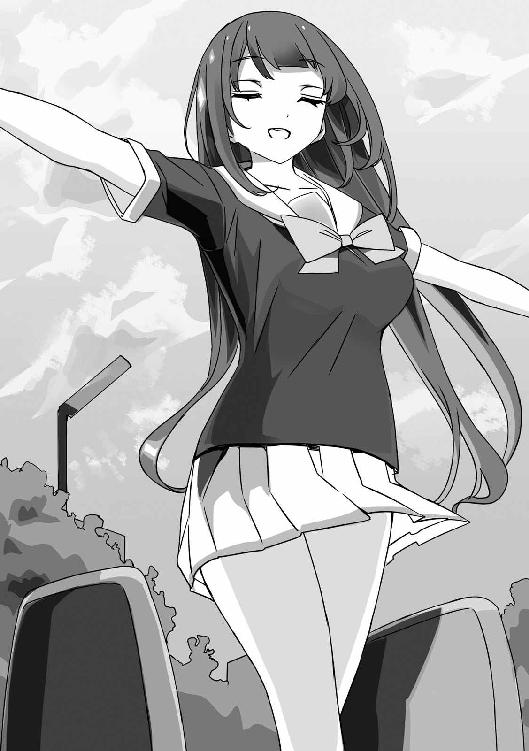
「わたし、告白されて、相手の子に変なことして、自分でやっておいてびっくりして逃げ回るあなたを見て、思っていたんです──」
歩沢は、それこそ遠い海原でも見つめてるような目をして。
「この人は、誰を待ってるんだろうって」
「......待ってる......？」
「どうせ断るのに。どうせ逃げるのに。自分でも嫌になるようなことをしちゃうのに、律儀に呼び出しに応えてるのは、なにか期待してるからじゃないかって。そこに、期待する誰かが待っているって希望を持ってるからじゃないかって」
「............」
歩沢は、いつでも俺の心を正確に見抜いてくる。
だけど、これは──これはどうなんだろう？
「あなたもわたしと同じだっていうのは、すぐにわかりました。誰にも恋をしたことがない。恋されるばかりで、誰かを好きにならない。いえ、なれない。これは前にも言いましたっけ？ そう、わたしとあなたは似てる。でも一つだけ違います」
「......おまえは、誰にも期待してなかった......？」
「ええ、だから......誰かに告白されても、必要以上にキツい断り方をしてました。あなたは何度も同じ人に告白されていたみたいですけど、わたしは何度もなんてごめんでした。面倒くさいから。結果はわかりきってるから」
「俺も......別に、もう一度告られることを期待してたわけじゃないぞ」
「そうですね、それは性格の問題でしょう。あなたはひどい人ですが、女の子を手ひどくフレるようなタイプじゃない」
歩沢は、微笑を浮かべている。
だけど、その視線はまだこっちを向いていない。
「でも、そこまで優しい人でもない。いえ、かなり自分勝手ですよね。そんなあなたが、優しさだけでいつも告白を受けにいってるとは思えませんでした。今も、あなたがまだわたしを知らなかった頃も」
「......なにが言いたいのか、わからない。歩沢、俺はそこまで鋭くないんだよ」
「わたしはずっと前から、あなたに期待していたってことですよ。あなたはわたしに似た、特別な人だから。ただ、それだけ。ああ、この言い方だとロマンチックじゃないですね」
歩沢は、少し苦笑してから脚を一歩前に進める。
立ったまま滑るつもりだろうか。
「おい、歩沢、危な──」
「きゃっ......！」
「ああっ！」
ほら、やっぱりそうなった！
滑り台っていうのは座って滑るもんなんだよ！
「うおおおおっ！」
滑り台の下へ飛び込み、バランスを崩したまま滑ってきた歩沢の身体を受け止める。
いくら軽い女の子でも、漫画じゃないんだから止められるわけがない。
歩沢を抱きしめるようにして、後ろ向けに倒れていく。
「......いったー......」
「......ごめんなさい、御門君」
まるで歩沢に押し倒されたような体勢になってしまっている。
とりあえず、俺も歩沢も頭は打たなかったか......。
「いいけど......こういう無茶はするなよ。大丈夫か？」
「はい、平気です。昔は、立ったまま滑れたんですけどね。なんでしょう、バランス感覚が悪くなったんでしょうか？」
「靴だよ、靴。そのローファー、靴底がつるつるなんじゃないか？」
「あー、なるほど。自分のことって意外と気づかないもんですね」
「そうっすか......」
たぶん、子供の頃の歩沢はスニーカーをはいてたんだろう。
「......また抱きしめられちゃいましたね」
「また殴られるのか？」
「殴られるのが嬉しいならそうしますけど」
「そんな趣味はない。できれば、助けたことに免じて勘弁してくれ」
「ふふ、もちろんですよ。ありがとうございます。お礼に、もうちょっと抱いていてもいいですよ」
「......遠慮しとく」
俺は身体をずらしてから、上半身を起こす。
うん、背中がちょっと痛いけど特に大きなケガとかはなさそうだ。
右腕も......無事だな。まだ原稿が少し残ってるから、ここでケガはまずい。
「御門君。御門駿介君」
「............？」
歩沢も身体を起こし、二人揃って地面に座ったまま向き合っている。
すぐにでもキスができそうな距離だと──そんなことを思ってしまう。
「さっきのロマンチックじゃない言い方を、言い直します」
「え？」
「御門駿介君、わたしは──あなたをずっと見てました」
「......歩沢」
それはきっと、歩沢の本気か冗談かわからない、いつものあれじゃない。
歩沢は、俺の写真を撮っていた。俺の姿を追っていた──
「管理人を引き受けたのも、あなただったから。もちろん、御門のおじいさんからお話を聞いたときは驚きましたけど......御門君、あなたじゃなかったら、わたしは管理人なんてバカな話を受けなかったでしょう。わたしだって、見知らぬ男の子と一つ屋根の下は嫌ですから」
「......女の子から逃げ回るような俺なら安全だしな」
つい、軽口を叩いてしまう。
「あなただから、そばで見てみたいと思ったんです」
でも、歩沢はいつもみたいに胡散臭い微笑みは浮かべてくれない。
「これは、恋なんでしょうか？ わたしは、もう恋愛感情を持っているんでしょうか？ あなたを叩いてしまったのは──本当は、好きな人に抱きしめられて恥ずかしかったからなんでしょうか？」
「......わからない、よ」
そうだ、わかるはずがない。
俺だって恋なんてしたことがないんだから。
わかるわけがない、けど......だけど......。
「告白されたわけじゃない。なにかを言われたわけでもない。でも、誰かを抱きしめたいと思ったのは初めてだった......と思う」
「少なくとも御門君は変わった......ということでしょうか。変わったあなたに、わたしも惹かれた？」
「答えはないんだろう、たぶん。俺も歩沢も答えを出すには、恋愛を知らなすぎる」
「わたしのことは全部教えました。過去のことも、今抱えている気持ちも。それでも......二人で話すだけじゃ答えは出ないってことでしょうか？」
「......そうなんじゃないかな」
この期に及んで、答えを曖昧にしてしまう。
卑怯だろうけど、自分でもわかっていないことを断定するほうが不実な気がしてならない。
「そうですよね、そう言いますよね。わたしは、あなたと会ってわからないことが増えましたよ」
「............っ」
歩沢は、ふっとキスでもするみたいに顔を近づけてきて。
俺の頰に、自分の頰を触れさせてきた。
「......な、なんだ？」
「なんとなく、こうしたくなったんです。その理由も、やっぱりわかりません」
歩沢は顔を離すと、少しだけ困ったように笑った。
「では、わからないことは素直に訊いてみましょう」
「ん？ 訊くって誰に？」
「もちろん、わたしたちの真逆。ずっとずっと、ずーっと恋をしてきた女の子にですよ」
「ちょ、ちょっと待て」
「あの子は恋のエキスパートですよ。永遠の片思い、こじらせすぎてはいますけどね」
「............」
うん、これが冗談じゃないってことだけははっきりわかる。
俺と歩沢がお互いに向けている気持ちなんてものを──もっとも訊いてはいけない相手に訊こうっていうのか。
狗我香凛──俺にとってずっと一番大事だった女の子に。
11 かませ系ヒロインルート？
「よし、やっぱりやめよう」
俺は、あっさりと決断を下した。
歩沢が育った施設に行った翌日、聖風館学院の昼休み。
毎度おなじみ、情報処理部の部室前。
今日は、香凛が登校してきていることは確認済み。
間違いなく、香凛は部室にいるだろう。
「またもや、いきなり最低の結論ですね」
そういえば、先日も歩沢と似たようなやり取りをしたっけ。
「いやいや、香凛になにを質問する気なんだよ、おまえは！ だいたいわかるけど、まずいだろ！ あいつをなんだと思ってるんだ!?」
「それはわたしも御門君に訊きたいですね」
「うっ......」
「子供の頃から軽く十年以上、香凛ちゃんをキープし続けてるんですから。むしろ、彼女の想いを断ち切るために、外国にでも姿を消してあげればよかったのに」
「そんな理由で旅立てと!?」
「アメリカとかどうです？ 女の子の貞操観念ゆるくて、楽しめそうじゃないですか」
「怒られるぞ！ 偏見でものを言ってはいけません！」
無駄に敵を増やす不穏な発言はやめてもらえないだろうか......。
「ああ、アンジュちゃんの例から考えても、他にサキュバスがいるかもですね。セオディア公国、おすすめです」
「アンジュはたぶん特殊な例だよ！」
サキュバスだらけだったら、セオディアは少子化とは無縁だろうな。
「うるっさーい！ 部室の前で騒がない──で？ あれ、駿介？」
「あ、ああ。香凛、やっぱり来てたんだな」
「......はっ!? しまった、完全に忘れてたわ！ 駿介はあたしがいないとお昼を一緒に食べる相手もいないプロのぼっちだった！ ど、どうしよう......ご、ごめんなさい......なんでもするから......ゆ、許して......」
「涙目で言うなー！ 俺が本気で可哀想な奴みたいだろ！」
「まさかの、駿介が可哀想じゃない可能性......？」
「......うん、そうだな。俺って可哀想ですよ......」
たまーに、香凛は本当に俺が好きなのか疑わしくなる。
からかって遊んでるだけじゃないのか的な。
「本当にごめんね。でも、今日からはちゃんといるから大丈夫よ。ほら、いつまでも一人で突っ立ってないで、中に入って」
「あの、わたしもいるんですが」
「......一度ドアを閉めて、また開けたらひびきがいない世界に移動してないかしら」
「またシュレーディンガーのアユですか」
「なにそれ？ まあ、いいわ。仕方ない、ひびきも入っていいわよ」
「どうも。香凛ちゃん、だいぶ成長してきてますよね。初対面の頃は、わたしに怯んでるようにも見えたのに」
「弱い犬ほどよく吠えるのよ。内心、今でもあんたは怖いわ」
「自分で弱い犬とか言いますかね......」
そんなことを言いつつ、二人の少女は部室の中に入っていく。
なんか俺、口を挟むタイミングが摑めない。
この二人、意外と会話が嚙み合うんだよな......。
「あっ、そうだ！ 駿介、喜んで！」
「うおっ」
部屋に一歩入ったとたん、香凛にぎゅっと抱きつかれる。
うああ、胸が、おっきなお胸が当たってるって！
「よ、喜べってなにが？」
「新連載用のネームができたの！ ３話分、95ページ！ 二日もかからずに一気に描き上げちゃったわ！ ほら、一度取っかかりを摑めばスルスル進むのよ！」
「よ、よかったな」
「ああ、でもデートはなんの役にも立たなかったわね！ まったく無駄なデートだったわ、あはははっ！」
「おまえ、人の初デートを無駄とか......」
「そうね、ごめん。でも、本当に嬉しいの！」
香凛ちゃん、だいぶテンションが上がってる。
まあ、人によっては原稿が仕上がったときより、ネームができたときのほうが達成感強いってこともあるだろうな。
原稿の上がりは、ある程度読めるけど、ネームってひらめきの作業だから。
一度行き詰まると、永遠に描き上がらないんじゃないかと焦ってしまう。
だからこそ、上がったときの喜びも大きい。
「あのな、香凛。アンジュもネーム上げてて......というかあいつ、原稿にしちゃってるんだけど、それが......」
「言わなくていい！」
香凛は、俺から離れてぱっと広げたてのひらを突き出してくる。
「言っちゃダメよ、駿介。アンジュの原稿を見たならなおさら。たとえアンジュがなんと言っても、内容をライバルに教えるのはダメ。それがフェアってものよ」
「......フェア、か。アンジュも同じこと言ってたよ」
「勝負だもの。漫画は実力で勝負するしかない。実力もないのに汚い手段で連載獲ったって雑誌じゃ通用しないでしょ」
「そりゃ......そうだな」
やっぱり、教えちゃダメだし、アドバイスも必要ないか。
実力の世界なんだから、自分で勝負を挑んで、勝つしかないんだ。
「あと......自信、なくしたくない」
「............」
香凛さん、ぼそっと言ったけど、聞こえちゃった......。
せっかくテンション上がってるところで、余計な話は聞きたくないか。
「あたしからの報告は終わり！ それで、なんなの？ 駿介、ただここでお弁当を食べにきたんじゃないんでしょ？」
「......わかるのか」
「何年付き合ってるのよ。顔を見れば、それくらいわかるわ」
香凛は苦笑して、いつもの椅子に腰を下ろす。
俺と歩沢も、その辺の椅子を引っ張ってきて座る。
「御門君は説明が下手ですから、わたしがお話ししましょう」
歩沢は、相変わらず黒いストッキングをはいている、形のいい脚を組んだ。
「実は昨日、わたしのすべてを御門君にさらけ出したんですけど、上手くいかなくて」
「選手交代！ おまえもまったく説明できてない！」
ていうか、間違いなくわざとだ！
「なによ、それくらいのこと。あたしだって、もう全部見られてるわ。あと一歩で先が入るくらいまでいったんだしね」
「香凛もいらんところで張り合うな！」
ついでに言うと、品がないです！
俺とのベッド・インがすっかり香凛の持ちネタみたいになってるし。
「駿介は、変なとこで品にこだわるのよね。漫画家なんて下品でなんぼじゃないの？」
「そこは、個人差があってな......」
上品で潔癖な漫画家さんも、まだ日本にいるのです。たぶん。
「まあ、いいわ。話を聞こうじゃないの。幸い、少しは暇もできたしね」
香凛は偉そうに言って、偉そうに長い脚を組んだ。
「では、わたしがお話ししましょう。今度は真面目に話しますから、いいですよね？」
「ああ、わかったよ」
とりあえず......説明は歩沢に任せるか。
歩沢の過去をどれだけ話していいか、俺には判断できないしな......。
「そ、そう......」
歩沢が一通りの説明を終えると、香凛はあからさまな動揺を見せた。
一通りというか、施設での俺とのやり取りを一字一句正確に話したような......。
凄まじい記憶力だけど、それだけに香凛が驚くのも無理はない。
話だけ聞いてたら、俺と歩沢が両思いになったかのようでもあるし......。
「ひびきって、子供時代があったのね......」
「驚くの、そこか!?」
と思ったら、違った！
「てっきり、いきなり湧いて出てきたものだと思ってたわ......」
「御門の血を継ぐ二人、揃って失礼ですね。当然、わたしにだって可愛い可愛い可愛い幼女時代があったんです」
「可愛いが増えてる......」
なんだか、本気で歩沢の幼女時代の写真がほしくなってきた......。
「ていうか、駿介、ひびき......」
香凛は腕組みして、豊満な胸を持ち上げるようにする。
「なんで、あたしを放置して勝手にストーリーを進めてるのよ！ かませ犬を絡めずに話を進めるなんて、これまでの伏線を台無しにする蛮行よ!?」
「だからおまえは、そのラブコメ脳をなんとかしろ！」
「なんとかできれば、かませ犬なんて言い出さないわ！」
「ま、そのとおりですね」
歩沢は、まるで他人事みたいだ。
すっかりいつものマイペースだなあ......。
俺にビンタしたり、過去を語ったときの真剣な歩沢はどこにいったのか。
「駿介はひびきを抱きしめて、ひびきは駿介をずっと前から見てた。なによそれ、もう運命が二人を結びつけつつあるじゃない。コミックスならもう残り１巻で完結ってところじゃない。大ヒット作家なら、担当が次回作の打診をしてくる時期よ！」
「あと、漫画家脳だよな......」
連載が終わる前に、担当が次回作の話を持ちかけるっていうのは、ありえることらしい。
俺も『ルート』の残り話数が確定したときに、猫村からそれとなく言われたっけ。
最後まで描き上げることに集中させてくれと断り、最終回が終わったあとは、もう燃え尽きたから漫画は描けないと、あらためて断ったけど。
あれ、俺って割とひどい漫画家だった？
「とにかく！ まずは、あたしとの関係を抜き差しならないところまで進めてから、『やっぱり本当に好きなのはひびきだった』と気づくのが定石でしょ！ かませ犬をスルーするなんて、いったいなにを考えてるの!?」
「おまえこそ、ホントになに考えてるんだ!?」
どこまでかませ犬になるつもりなんだ！
かませ犬をやめるのか続けるのか、はっきりしてくれ！
だいたい、その場合、最終的には香凛は負け犬になるんだぞ！
負け犬になるのだけは嫌、とか言ってたくせに。
「......漫画家の〝香凛〟は、やることはやったわ。駿介と──アンジュのおかげでね」
「香凛？」
香凛は急にトーンダウンして、静かに言った。
「今度のネームは、あたしのすべてがこめてある。これで連載獲れなかったら、もう終わりでもいいっていうくらい」
「ちょっと待て。もしボツになっても、チャンスがなくなるわけじゃないだろ。猫村はあれでしつこいから、何度でも挑戦させてくれるはず」
ラブコメで連載できるのは一本だけって話も、状況次第でいくらでも変わるだろう。
香凛が自分で自分を追い込んでるみたいだったから、あえて言わなかったけど......。
ラブコメ嫌いの編集長だって、いつまでも『オーディン』にいるわけじゃない。
「それはいいの。自分でも考えすぎてるのはわかってるから。でも、自分を追い詰めずに勝てるほどアンジュは甘い相手じゃない。もちろん、寿賀右輔も」
「俺は......終わった漫画家だよ」
「いいえ、また動き出すわ。残念ながら、あんたの担当は猫村さんだからね。あの人が、寿賀右輔をいつまでも放っておくわけないもの」
「............」
実際、猫村に踊らされて読み切りを描いている身では、反論もできない。
「でも、寿賀右輔が動き出して、アンジュがいたから、最高のネームを描けた。あたしの最高傑作は次回作です──って胸を張って言えるわ」
「あ、そういえば、一つだけ御門君にも話してませんでした」
突然、歩沢が思いついたように言った。
「実はアンジュちゃんを千歳荘に連れてくるように猫村さんに提案したの、わたしなんですよね」
「え？」
俺と香凛が、同時にきょとんとしてしまう。
「猫村さんからアンジュちゃんのことを相談されまして。さすがの猫村さんも、家出しようとする女子中学生をどうするか決めかねてたみたいで。千歳荘だったら安全で、わたしみたいな美少女管理人もいますよ、とご提案を」
「親切心......じゃないよな？」
「面白そうだったからというのもありますけど。要するに、香凛ちゃんをかませ犬にしようと思いまして」
「はぁ!? ど、どういうことなの？」
香凛が立ち上がって、歩沢を睨む。
「猫村さんからお話を聞いた時点では、アンジュちゃんは才能はあるけど、いまいちやる気に欠けるタイプだとかで。とりあえず、香凛ちゃんをぶつけて、アンジュちゃんにやる気を出してもらおうかと」
「そ、それで歩沢になんの得があるんだ......？」
「言ったでしょう、わたしは御門君を変えたい。でも、香凛ちゃんがジタバタ動き回っても、御門君はたいして変わらなかった。だから、今度は〝寿賀右輔〟を刺激してみようかと。身近に天才的な漫画家が現れてライバルになったら、御門君はどう動くか、どう変わるか、わたしとても興味がありました」
「おまえ、また裏でコソコソと......」
「だって、裏でコソコソするの大好きなんですもの」
「きっぱり言ったな！」
前に、香凛をかませ犬扱いしたときは自分は特になにもしてない、みたいなことを言ってたくせに。
アンジュが千歳荘に来たのは、猫村の策略みたいなことも言ってたくせに。
思いっきり、黒幕は歩沢だったのか。
やっぱり、こいつは策士だ......。
「なにがどう作用して、どう事態が転ぶかなんてわたしにだってわかりませんでしたけどね。でも、御門君は確かに変わりましたよ。告白もされてない相手を抱きしめたのは、御門君にしては大きすぎるくらいの変化です」
「............」
香凛だけじゃなくて、今度は俺も踊らされてたのか......。
「ええい、そんなことはどうでもいいわ！ かませ犬上等！ アンジュは成長したけど、あたしだって成長したんだし！ そんなことより......もう漫画のことはいいの！」
「いいのか!?」
さっきから話がコロコロコロコロと転がりすぎだ。
「漫画家、香凛はもうやることはやった。あとは、狗我香凛っていう女の子の恋のことよ。駿介、ひびき、あんたたちの気持ちなんてあたしにだってわからないわ。けど、わからないままで済ませる時期は終わったの！」
「香凛ちゃんも、けっこう強引に話を進めますよね」
「うるっさい！ ひびき、あんたの話って聞きようによってはただのノロケよ。わかってるの？」
「ノロケ......そんな言葉がわたしの口から出るなんて」
歩沢の言葉は冗談でもないようで、少々驚いているらしい。
要するに歩沢の話は、俺と歩沢──お互いにお互いのことが好きなのかどうかわからない、っていう相談だからな。
確かにこれは、ノロケ話以外のなにものでもない。
「聞きなさい、駿介、ひびき。ラブコメの主人公は、優柔不断でいいの。女の子たちに振り回されて、なにも決断せずに先送りにしていけばいいのよ」
「は？ 香凛、なにを言い出したんだ......？」
さっきから話がポンポン飛躍するなあ。
「でも、最後は──決めなきゃいけないわ。ハーレムエンドも、誰も選ばずに終わるのも冗談じゃない。長期連載ならなおさらよ。絶対に、最後に、誰か一人に決めなくちゃいけないの」
「それは......そうだな」
俺の『ルート』だって、五人のヒロインが登場したけど、主人公は最後には一人を選んだ。
「決めないのなら、それはコメディよ。茶番よ。ラブコメは、最後に一人を選ぶ。それで完結するの！」
「ちょ、ちょっと待て。おまえ、まさかここで──」
香凛か歩沢、どちらかを選べと言っているのか。
その展開は予想していなかった......というより、考えたこともなかった。
俺だって恋をしたことなんてなくて。
俺を好きにならない歩沢が気になって。
何度告白されても一人だけ触れることができなかった香凛と、少しだけ肌を重ねて。
自覚できるくらいの欲望に動かされて、アンジュを押し倒してしまって。
いや、本当にいろいろあったけど──
やっぱり、俺は誰かを好きになれるのかどうかすら、まだわからない。
なのに、ここで選択肢を突きつけられても......。
「待ってください、香凛ちゃん。それはさすがに御門君の言うとおりですよ。話が飛びすぎてます」
「ばーか！」
「ば、ばか!?」
「ひびき、あんたも考えすぎなのよ！ そんなに考え込んでたら、百年経ってもなんの結論も出ないわよ！ 時には飛躍も必要！ たとえば、自分が傷ついてるのをいいことに、エッチして慰めろとか迫ったりね！」
「香凛ちゃん、それで失敗したじゃないですか......」
「だからなによ！ 一度くらいの失敗がなんなのよ！ 負けフラグ乱立のかませ犬幼なじみをなめるなぁぁぁぁぁぁぁぁっ！」
「な、なんか香凛ちゃん、火がついちゃってますよ......？」
「もしかして、歩沢のせいかな......」
「わたしだけの責任にしないでくれます？ というか、元凶は間違いなく御門君です」
「そこの二人、コソコソしゃべるな！」
香凛は、びしっと人差し指を突きつけてくる。
「あ、あの、香凛ちゃん？ 少し落ち着きましょう。ここは学校ですよ？ あまり騒ぐと外にも聞かれちゃいます」
「あたしに、聞かれて困ることなんてない！ 漫画描いてることも、駿介のことが好きなのも、まったく相手にされない、典型的な滑り台送りヒロインだってことも全部バレバレなんだから、今さら失うものなんかないわ！」
「すげー開き直りだな......今さらだけど」
「御門君、滑り台ってなんですか？」
「歩沢でも、そこまでは調べがついてないのか。要するに、主人公に選ばれなかったヒロインのことで──」
「だから、二人でしゃべるなって言ってるの！」
香凛はずかずかと歩沢に近づく。
歩沢も椅子から立ち上がり、苦笑を浮かべる。
「本当に落ち着いてください、香凛ちゃん。ノロケなんかじゃないですし......わたしは、ただ御門君が自分にとってどういう存在なのかわからなくて......」
「そっちが落ち着いてるんなら、わかるでしょ。あんたは頭いいんだから、冷静に考えればわかるはずよ。ひびきもあたしと同じ──」
「わたしが、同じ？」
「他の子たちとは違う。あたしは、御門家のオーラに惹かれてるんじゃない。たぶん、駿介がずっとあたしにだけは手を出さなかったのは、それが理由。ひびきも、ついこの前までは駿介に少しの好意も見せなかったわ。だから──あんたの気持ちが変わったのは、心が揺れたのは、ただ御門駿介って男の子を好きになっただけよ」
「......こう言ってはなんですけど、御門君に人から好かれる要素がありますか？」
「ホントに、そう言ってはなんだな！」
つい、おかしなツッコミをしちゃったけど、だいぶ失礼だ！
「要素とか理由とか探してるうちは、恋じゃないわ。あたしが駿介を好きになったのは、打算もなにもない、それこそ無邪気だった幼女の頃よ。ひびき、あんただって、恋愛に関しちゃ幼女みたいなものよ。好きになるのに──理由はいらないわ」
「ずいぶん強引な話ですけど......」
「そんなことしか言えないのが証拠よ！ 好きになっても、それを認められないなんて可哀想なもんね！」
「......可哀想？ わたしが、可哀想？」
じろり、と歩沢が冷たい目をする。
「そうね、さすがのあたしも今まで言えなかったけど、ひびき、あんたは可哀想ね」
「香凛ちゃん......」
「家族がいなくて、育った施設もなくなって、管理人なんてわけのわからない仕事をさせられて、おまけに......恋なんて当たり前のこともできない。これが可哀想じゃなくて、なんなのよ、言ってみなさいよ！」
パン、と乾いた音が響いた。
目の前で見ていたのに、なにが起きたのか一瞬理解できなかった──
「......痛いわ」
「人を叩いたことなんて、ずっとなかったんですけど。こんな短い間に二人も叩いちゃうなんて、人生ってわかりませんね」
歩沢は冷静そのものだ。
香凛も赤くなった頰を押さえようともせず、落ち着いている。
「わたしは、可哀想なんかじゃありません。香凛ちゃんがお金持ちのお嬢様だからって羨ましくありませんし。今はまだ恋ができなくても、いつかは──」
「そうやって、いつまでもお高くとまっていればいいわ！ あたし、思うのよね。主人公の優柔不断ばかりが叩かれるけど、メインヒロインが本当の気持ちを押し殺してるから、話がややこしくなるのよ」
「また、ラブコメの話ですか？」
「あたし、ラブコメ作家だもの。駿介だってそうよ。だから、わかりやすいでしょ」
「わたしは最近、やっと知識を身につけただけなんですけど」
「知らないわ！ あたしは、あたしのやり方でいく！ 誰にも文句は言わせない！ だいたい、ひびきがわからないわからないばかりで、自分の本当の気持ちを言わないからめんどくさくなってるのよ！」
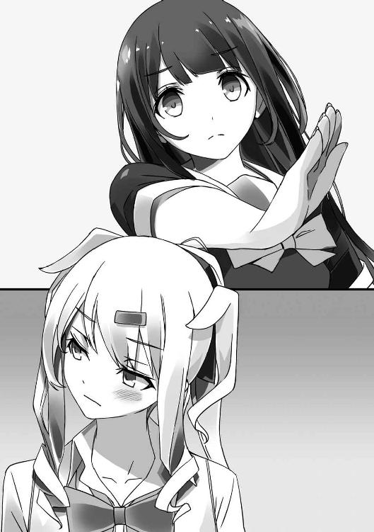
「だって......わからないものはしょうがないじゃないですか！」
「そうやって、最後にはあんたがあたしの大事なものをかっさらっていくの!? あたしが百回好きって言っても届かなくて、ひびきのたった一回の好きが駿介に届いちゃう！」
「あなたこそ、いつまで悲劇のヒロインぶってるんですか！ ただ、フラれてきたってだけでしょう！ いいじゃないですか、フラれたって。人生が終わるわけでもありません！」
「悲劇のヒロインは、どっちよ！ ひびき、あんたはそうやってなにもわからないフリをして駿介の心を繫ぎ止めて──」
「香凛！ そこまでだ！」
ダメだ、このまま黙っていられない。
いくら俺が優柔不断なラブコメ主人公みたいな奴でも、ここで黙っていちゃダメだ。
いや、ラブコメ主人公みたいな奴だからこそ、ここで──
「駿介は引っ込んでて！ 今は、あたしがひびきと決着をつけないといけないの！ そうね、ラブコメなら主人公がかませ犬を処理してから最終決戦でしょうけど、こんなとこで引き下がれない！ 自分でひびきを倒さなきゃ、いつまでもあたしは──」
「香凛っ！」
俺は、一つ間違っていたことに気づいた。
黙っていちゃいけない──でも、言葉だけでは届かない。
だから──
「............っ！」
溢れ続けていた香凛の言葉が、ぴたりと止まった。
物理的に、話すことができなくなったから──
「御門君......」
歩沢がぽつりとつぶやいたのが聞こえた。
でも、そっちに目を向けることはできない。
俺は──香凛と唇を重ねたまま、彼女の身体を抱きしめている。
ベタな手だけど、こうやって唇を塞ぐしか──香凛を黙らせる方法は思いつかなかった。
それからゆっくりと、香凛の唇から離れて。
「......香凛」
「そういえば......あんなことまでしたのに、キスはしなかったわね」
「いろんな女の子にいろんなことしちゃったけど......これは、初めてだ」
「......あれだけ告られまくってたくせに、キスもしたことないなんて、変な奴よね......」
「まあな......」
「......どうして？ 今までずっとしなかったくせに」
「たぶん、香凛が言ったとおりだ。おまえを黙らせるためでもあるけど──理由なんかない。でも......」
「そうね、キスしたいと思うくらいには、想ってもらってるってことかしら」
「それは......うん、そうなんだと思う」
我ながら煮え切らないが、他の女の子だったらキスして黙らせるなんて思いつきもしないだろう。
相手が香凛だからこそ、キスしてしまった──
「嬉しい」
香凛はにっこり笑って、自分の唇を指先でなぞる。
かと思えば──
ふらりと後ろによろめきつつ──机の前に移動した。
それから、おもむろにＰＣのスイッチを入れる。
「香凛......？ なにしてるんだ......？」
「決まってるでしょ、ネームを描き直すの」
「は？ なんで、急に？」
香凛は椅子に座ると、液晶タブレットを操作し始める。
本当にネームの直しを始めるつもりらしい。
「新連載用のネームは文句なしのデキだと思ってたけど、まだ面白くできるわ。アンジュに勝つためには、どれだけブラッシュアップしてもやりすぎってことはないでしょ」
「直すってどういう......？」
「キスシーンを描き足すの。今なら、臨場感バツグン、最高のキスシーンが描けるわ。１話目からキスシーンっていうのも、ラブコメとしてはアリでしょ」
「............」
この漫画家さんは、たった今起きた経験を作品にフィードバックするつもりだ。
こいつは、狗我香凛であり、漫画家の香凛でもある──か。
「香凛ちゃん、一つだけ訊いていいですか？」
「あんた、まだいたの？」
「いますよ。それで......あなたは、どんな漫画を描こうとしているんですか？」
歩沢は、じっと香凛の背中にまっすぐな視線を注いでいる。
その目は真剣そのもの──いい加減な答えは許さない、という強い意志に満ちていた。
「あたしは、なにを描きたいのかずっと迷ってた。でも、描きたいことなんてたった一つよね。いえ、描けることなんてたった一つ。駿介が、それを教えてくれたわ」
「俺が......？」
「この溢れそうなくらいの片思いが、あたしのすべて。駿介に恋してる、報われない想いをずーっとずーっと抱えてるのがあたしなの」
香凛は、立ち上がったＰＣの画面をじっと見つめている。
「あたしがたった一つだけ勝ってること。ひびきだろうとアンジュだろうと猫村さんだろうと、藤宮姉妹だろうと、誰にも絶対に負けないって言えることは、駿介を好きだって気持ち。これだけは、この世界の誰にも勝ってる」
香凛は、これ以上ないほど嬉しそうに笑うと──
「それを描かずに、なにを描くのよ。気づくのが遅すぎたくらいだわ。アンジュに負けたくない気持ちも、ひびきに勝ちたくて勝ちたくてたまらない心も、駿介への想いが吞み込んじゃう。あたしの魂は、駿介への片思いでできてるの。その魂を全部──原稿にぶつける！」
ペンを手に取って、液晶タブレットにがりがりと描き始める。
もう、彼女を止めることはできない。
たとえ、もう一度キスしたって香凛は描き続けるだろう。
自分の気持ちを、想いを、悔しさを──
すべてをさらけ出すような作業は辛くて、苦しくて、もうやめたいと思っても、描き続けてしまうんだろう。
部室には、香凛がペンを走らせる音だけが響いている。
俺も、歩沢も──ただ黙ってその背中を見ていることしかできない。
たぶん、香凛はもうかませ犬なんかじゃない。
今度こそ自分が勝つために、走り出したんだ──
エピローグ
結果から言えば、新連載枠を勝ち取ったのは──
〝香凛〟の新作ラブコメ『ポニーテールはあきらめない（仮）』だった。
ヒロインの片思いが凄まじいまでの迫力で、なおかつコミカルに描かれた作品だ。
編集会議では、〝癒師天使〟のちょっとエッチなラブコメ『夢ならなにをしてもいいですよね（仮）』と互角の攻防を繰り広げたらしいが、最後は編集長が決定を下した。
冷酷非情で現実主義な編集長らしくもなく、「香凛先生のほうにより強く作者の熱量を感じた」という、理由だった。
数字至上主義のコワモテヒゲ親父のくせに、たまに精神論を持ち出してくるのよねー、と猫村は語っていたらしい。
それに──「特に、キスシーンが情感たっぷりで素晴らしかった」というのも決め手になったそうだ。
香凛が新連載を勝ち取ったのは本当に──本当によかった。
前作の連載が終わった直後に新作が決まったというのも、なかなかに凄いことだ。
結果は、大成功と言っても過言じゃない。
で、ギリギリのところで負けてしまったアンジュはというと。
「負けたのは悔しいですけど、ワタシ目覚めました。これからもエッチなラブコメを描いて、自分でもハァハァしつつ連載を目指します」
と、彼女の将来が不安になるようなコメントを語っていた。
大丈夫かな、本当に。あまりきわどいもの描いてると、祖国に連れ戻されちゃうんじゃないか？
せっかく仲良くなったし、たまらなく可愛いし、できれば聖風館の大学まで進んで日本で末永く漫画を描いてほしいところだ。
ああ、それとついでに──
寿賀右輔の読み切り『かませ犬なカノジョ』は、急遽予定を変更して、既に上がっている原稿を第１話として連載されることが決まった。
「......って、なんでだよ!?」
『えー、なんでと言われても困るにゃー』
たった今、学校から帰ってきたところでその連絡を受けた俺は、担当である猫村に怒りの抗議中だ。
『これも編集長の鶴の一声にゃー。ま、ぶっちゃけ、編集長が連れて来た漫画家さんの一人が仕事抱えすぎた挙げ句に謎の失踪をしちゃったんで、その穴埋めが必要なのよねー』
「謎でもなんでもない！ それなら、アンジュに連載枠をやれよ！」
『アンジュ先生も期待の作家さんなのよー。そんな不戦勝みたいなやり方で連載デビューを獲らせたくないのよねー。気持ちよく始めてほしいじゃない？』
「俺なら不戦勝でもいいのかよ......つーか、俺のもラブコメなのに、連載できるのは一本だけって話じゃなかったか？」
『寿賀右輔の作品なら、別枠扱いよ。あ、編集長が挨拶に行きたいってー』
「あのな、状況がめまぐるしく変わりすぎだろ」
『今時、失踪とかどうかと思うわよね。漫画の神様とかもよく逃げてたらしいけど。あ、失踪すると警察が銀行口座を家族に訊いてくるらしいわよー。失踪後に引き落としの記録があったら、ＡＴＭの防犯カメラの映像と照合して本人かどうか確認したりー』
「そんな話はどうでもいい！ 連載なんかしないぞ、俺は！」
『一度決まった打ち切りが避けられないように、新連載もストップできないのよ......』
「できるだろ！ まだ予告も打ってないし！」
『そう言うと思って、ついさっきＷＥＢに予告を出させてもらったわ。なにこの手回しのよさ？ 私って有能かにゃ？』
「いらんときだけ手際いいな！」
ていうかこれ、訴えたら勝てる案件じゃないのか。
『こういう無茶ができるのは、私と先生の信頼関係あってこそだにゃー』
「信頼関係があったとしても、それはたった今崩れたぞ！」
『失われた信頼は、仕事で取り戻していくわ。だから、新連載の２話目、よろしくー』
「都合よく話を進めていくなっ！」
はぁ、もう突っ込みすぎて息が苦しくなってきた......。
『観念しなさい、先生』
「あんたこそあきらめろよ」
『この読み切り、終わってないわよー。どう見ても続きを描けるお話だし。こんなもの描いておいて、一回で終わる気だったとは言わせないわ』
「......別に、読み切りだって余韻をもって終わらせるのは普通だろ」
『いろいろあったんでしょ、先生？ 今の先生の新作、私はもっともっと読みたいわー。編集長が言わなかったら、たぶん私から連載化を言い出してたわねー』
「..................」
意外と、この猫村のやることに間違いはない。
残念ながら、それは事実なんだけど......。
『それじゃ、よろぴくー。ネームの締め切りは明後日だから！ ２話目は大増55ページ、トビラはカラーで！』
「あっ、おい、待て......！」
無情にも電話は切れてしまう。
特に罪のないスマホを睨みつけてみても、もう猫村は戻って来ない。
掛け直しても無駄だろうな......。
「お話は終わりましたか、御門先輩」
「まあね......とんでもないことになってきたよ......」
ちなみに、ここは千歳荘の応接室。
ソファに座る俺の横にいるのは、アンジュだ。
まだ自室に戻っていないので、制服姿のままだ。
「あ、さっき猫村さんから電話があって、御門先輩のアシスタントをすることになりました。よろしくお願いしますね」
「連絡する順番がおかしい！」
アシスタントを雇うなら、まず最初に俺に連絡だ！
ああ、電話が終わったというのに、まだ突っ込まないといけないのか！
「え......ダメ、なんですか？ ワタシじゃ先輩を満足させられませんか......？」
「い、いや......」
後輩がまっすぐ向けてくる潤んだ目に、怯んでしまう。
うおお、サキュバスの能力が解放されている......。
なんだこの、今すぐにでもソファに押し倒したくなる魔性の可愛さは。
「そんなことは、ないんだけど......」
「よかった、がんばりますからいろいろ教えてくださいね。御門先輩の言うことなら、どんなことでも聞きますから！ ワタシを好きに使用してください！」
「......はい」
「じゃあ、背景の練習してきます！ こいつは忙しくなってきたですよ！」
可愛いアンジュは、スカートを翻して綺麗な脚を見せながら、応接室から出て行った。
猫村め、巧妙に外堀を埋めていったな......。
正直、アンジュに甘いもんなあ、俺......。
あんな可愛い後輩が張り切ってるのに水を差せない、というだけで連載を引き受けるのは、かなりどうかしてるけど......。
「へー、アンジュをどう使用するの？」
「わたしも大変興味がありますね。できれば、使用時の様子を観察したいところで」
「............っ」
立ち聞きしてたのか、香凛と歩沢がにこにこ笑いながら、応接室に入ってくる。
二人は、俺を挟むようにしてソファに座る。
「ははは、アンジュはまだまだ日本語が微妙だよなあ」
「わたしは見逃してませんよ。アンジュちゃんを『ソファに押し倒してやろうか』と欲望にギラつく目で見ていたのを」
「な、なんでそれを......!?」
「......あんた、最近マジで野放しにできなくなってきてない？」
左右から、冷たい目が向けられてくる。
うう、毎度のことながら見透かされまくりだなあ......。
「と、というか、なにしてるんだ、二人とも？ 歩沢はともかく......香凛は新連載の準備があるんだろ？」
「ああ、香凛ちゃんはわたしがお呼びしたんですよ。ほら、あれ」
「ん？」
今気づいたけど、応接室の扉のところに大量の買い物袋が置かれている。
「今日はたくさん買い物してきました。香凛ちゃんの新連載おめでとうパーティをやろうかと思いまして」
「あー、なるほど。それはいいな」
俺、気が利かないからなあ、それは思いつかなかった。
「ついでに駿介のお祝いもしないとね......ふふ、あたしたちが死に物狂いで連載枠を争ってたのに、あっさり新連載スタートとかね......」
「............」
やっぱり、その話も聞いてたか......。
香凛ちゃん、そんな怖い目をしたら可愛い顔が台無しだぞ。
いや、怖い目をしていても可愛いけど、笑うともっと可愛いよ？
「なんでもいいから、パーティですよ。三日三晩騒ぎ続けますよ！」
「あたし、新連載の原稿あるんだけど!?」
「あ、御門君のお祝いも含めるなら七日七晩はやらないと。安心してください、わたしのお料理のレパートリーなら、七日間のパーティも飽きさせません」
「そんなこと心配してないわ！」
ああ、美少女二人が俺を挟んでボケとツッコミの応酬を......。
幸せなような、決してそうじゃないような。
「ていうかひびき、もうかませ犬云々じゃなくて、単純にあたしを困らせて楽しんでない？」
「わたし、可哀想ですから......少しはお楽しみがないと......」
「あんた、この前のことまだ根に持ってるわね！ 人をひっぱたいておいて！」
「叩いた手のほうが痛いということもあるんですよ......」
「いいように言わないで！ やっぱり、あんたとは決着をつけなきゃいけないわ！」
この状態だと俺が巻き込まれそうなんだけど、逃げちゃダメかな。
「ひびき、言っておくけど、あたしは駿介と寸止めまでいって、キスも済ませてるんだからね。あたしのほうが完全にリードしてるのよ？」
「自分でも言ってたじゃないですか。香凛ちゃんの百回の告白より、わたしの一回の告白のほうが破壊力大きいって」
「破壊力なんて言ったかしら......っていうか、なんで普通に恋敵みたいになってんの!? 恋愛感情、完全に持っちゃったの!?」
「さあ、どうでしょう？ キスでもしてみたらわかるでしょうか？」
「......うおっ!?」
歩沢は、俺の頰を摑んでぐーっと顔を近づけてくる。
うわ、唇が、唇がどんどん近づいてきてる......！
「やめなさーいっ！ 確認しなくていいわ！ あんたはしばらく、恋愛感情がないひびきさんでいなさい！」
「そうですね、焦ることはないでしょう。もし恋愛感情が目覚めても、わたしは最後の一手で逆転できるんですから」
「......いつまでも、あたしがかませ犬のままだと思わないことね」
「策士が倒されるだけの存在だと思うのも甘いですよ？」
「............」
なんだか、さらに俺の周囲が混沌としてきた......。
俺の人間関係なんて、香凛と歩沢、アンジュと、あとは一応猫村がいるくらいなのに。
人数に比べて、カオスっぷりが凄まじすぎる。
どうやら、俺のラブコメはまだまだ続きそうだ。
そろそろ、自分がラブコメ主人公みたいだっていうこともマジで認めたほうがいいな。
これから本当に連載を始めるなら、モデルにしやすいし......。
結局、俺は誰に恋をしているのか、そもそも誰かに恋をするのか自分でもわからないままだ。
でも、たぶんこのままじゃない。このままではいられない。俺もそれは望んでない。
香凛が言ったように、いつかは一人を選ばなくちゃいけないだろうけど──
もうしばらく、このままでもいいかな。
だって──ラブコメは、結末が見えないうちが楽しいだろ？
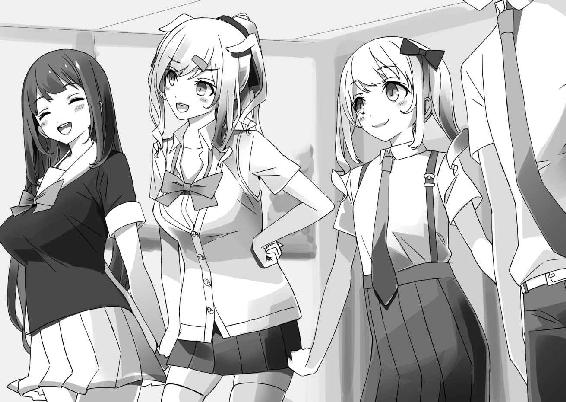
あとがき
どうも、鏡遊です。
というわけで、『かませ系ヒロインルートの結末を俺は知らない』第２巻です。
三角関係ラブコメ＋漫画家というなんだかよくわからない作品ですが、さらに混沌っぷりをパワーアップさせてお届けしております。
空回りすることについては他の追随を許さない香凛ちゃん、悪いことはしていなくても腹黒にしか見えない歩沢さん。特定のモデルなんて存在しない編集者・猫村さんに加えて、今巻では色気過剰な後輩ちゃんのアンジュも登場しました。
もちろん、漫画家さんの熱い戦いの日々（？）も引き続き描いております。
２巻では歩沢さんの謎に迫る展開にもなっています。ミステリアスなヒロインっていうのは、やっぱり魅力的ですよね。手が届かないからこそ良い、みたいな。
あと、黒髪ロング！ 錯覚かもですが、最近あちこちで黒髪ロングのヒロインが増えた気がします。素晴らしいですね。実は、髪だけじゃなくて腹が黒いキャラも大好きですけど。
そして、２巻の新キャラのアンジュちゃん。健気でおとなしい後輩キャラ。１巻のヒロインズはみんな押しが強かったですが、ちょいとパターンを変えたヒロインです。
当初は、いじられ役のつもりだったのですが、いつの間にか駿介君を翻弄する、香凛ちゃんたちに負けないキャラになってました。まあ、可愛いのでいいでしょう。
で、今後についてです。実のところ、続刊はなかなか厳しそうではあるのですけど......応援していただければ嬉しいです。
最後になりましたが、謝辞です。
イラストのみことあけみ先生。可愛い絵をいただき、作中でキャラのイメージが広がっていきました。本当にありがとうございます！
担当のＳ様。今回も大変お世話になりました！
この本の制作、販売などに関わってくださった皆様、ありがとうございます。
そして、なにより読者の皆様に最大限の感謝を。
それでは、またお会いできたら嬉しいです。
鏡遊
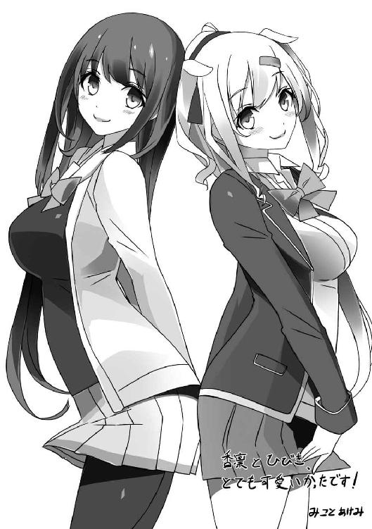
カバー・口絵・本文イラスト／みことあけみ
カバー・口絵・本文デザイン／ビィピィ
かませ系ヒロインルートの結末を俺は知らない２
恋愛フラグ10秒後
鏡遊
平成28年3月1日 発行
(C) 2016 Yu Kagami, Akemi Mikoto
本電子書籍は下記にもとづいて制作しました
角川スニーカー文庫『かませ系ヒロインルートの結末を俺は知らない２ 恋愛フラグ10秒後』
平成28年3月1日初版発行
発行者 三坂泰二
発 行 株式会社ＫＡＤＯＫＡＷＡ
〒102-8177 東京都千代田区富士見2-13-3
電話 0570-002-301（カスタマーサポート・ナビダイヤル）
受付時間 9:00～17:00（土日 祝日 年末年始を除く）
http://www.kadokawa.co.jp/